A3_flowkit · GPT-6 Astra · attempt B8HNBHW
Batch fk1 · job fk1_A_EXP23000352_09_Mar_2023_flowkit_gpt-6-astra · trial A_EXP23000352_09_Mar_2023_flowki__B8HNBHW. Long tool outputs are cut at 6,000 characters.
Score
0.39
0.39
Minutes
17.8
17.8
Agent cost
$7.51
$7.51
Steps
53
53
Screenshots / images
16
16
1
task prompt (instruction.md)
<environment_context> <cwd>/task</cwd> <shell>bash</shell> <current_date>2026-11-10</current_date> <timezone>Etc/UTC</timezone> <filesystem><workspace_roots><root>/task</root></workspace_roots><permission_profile type="disabled"><file_system type="unrestricted" /></permission_profile></filesystem> </environment_context>
2
user message
# Gate plate 230306 (AAV serotype panel, iPSC-derived neurons) in FlowKit
Goal: gate all 42 wells of this plate down to GFP+ live single cells with FlowKit (Python), report event counts per population, and flag every well whose data should not be used.
## Experiment
- Cells: WT PGP1 iPSC-derived neurons in a 24-well culture format. This plate is biological replicate 2 of an AAV serotype panel.
- Treatment:
- self-complementary AAV1, 2, 4, 6, 8, 9 or DJ, all carrying the same CMV-GFP construct;
- doses 5e3, 1e4 or 5e4 vg/cell, each dose in duplicate wells;
- harvested 72 h after transduction.
- Staining, on live adherent cells before trypsinisation:
- Zombie NIR 1:500, 15 min;
- anti-NCAM-BV421 1:200, 30 min;
- resuspended in PBS + 2% FBS.
- Acquisition: Attune NxT, 06-Mar-2023, one FCS file per well. Notebook voltages: FSC 30, SSC 300, BL1 250, VL1 300, RL3 300.
- Plate layout:
- `plate_layout.csv` gives the dose and duplicate number of each well, taken from the notebook flow plate map.
- The serotype of each well is not recorded in that map and is not needed for this task.
- No biological conclusion is requested.
## Inputs
| Path | Content |
|---|---|
| `/task/inputs/raw/` | 42 FCS 3.1 files, `Serotype panel_2_Rep2_Group_<well>.fcs` (wells A1-A12, B1-B12, C1-C12, D1-D6) |
| `/task/inputs/plate_layout.csv` | `file, well, dose_vg_per_cell, replicate, is_control, control_type` |
| `/task/inputs/gating_strategy.md` | Written gating strategy: population order, axes, gate shapes |
## Channels
Channel names come from the labels stored in the FCS files. On this plate they match the dyes actually used. -H and -W versions of each channel are also present.
| Detector ($PnN) | Name in the FCS file (`$PnS`) | Dye | Marks | Used for |
|---|---|---|---|---|
| FSC-A | FSC-A | none (scatter) | cell size | Cells |
| SSC-A, SSC-H | SSC-A, SSC-H | none (scatter) | granularity | Cells, Singlets; y-axis of Live and GFP_pos |
| RL3-A | LiveDead-Zombie NIR-A | Zombie NIR (fixable amine-reactive viability dye) | dead cells (bright); live cells are negative | Live |
| BL1-A | AAV-GFP-GFP-A | GFP expressed from the AAV CMV-GFP construct | transduced cells | GFP_pos |
| VL1-A | BV421-NCAM-A | anti-NCAM (CD56) BV421 | neuronal surface marker | not gated in this task |
| Time | Time | none | acquisition time | QC |
## Populations (report exactly these, in this order)
| # | population | parent_population | definition |
|---|---|---|---|
| 1 | Cells | all_events | intact cells on FSC-A vs SSC-A |
| 2 | Singlets | Cells | single cells on SSC-H vs SSC-A |
| 3 | Live | Singlets | Zombie NIR (RL3-A) negative |
| 4 | GFP_pos | Live | GFP (BL1-A) positive |
Use these names as the names of the gate operations in FlowKit.
## Controls
- This plate has no control wells. No untransduced, unstained, Zombie-only or NCAM-only wells were acquired. The notebook's non-transduced and cell-count culture wells are absent from the flow plate map and from `raw/`.
- All 42 wells are transduced samples. In `plate_layout.csv`, `is_control` is false and `control_type` is `none` for every row.
- Set the Live and GFP_pos boundaries from the populations visible in the sample wells, as described in `gating_strategy.md`. Use one boundary per gate for the whole plate.
## Deliverables
Write everything to `/task/outputs/`.
| Path | Content |
|---|---|
| `/task/outputs/counts.csv` | Columns `file, well, population, count, parent_population, pct_of_parent`. |
| `/task/outputs/flags.csv` | Columns `file, well, usable, reason_category, evidence`. |
| `/task/outputs/notes.md` | One page at most, with the headings `## Gates`, `## Quality control`, `## Deviations`, in that order. |
### counts.csv
- One row per file x population: 42 x 4 = 168 rows. `population` is one of `Cells`, `Singlets`, `Live`, `GFP_pos`.
- `file` and `well` are exactly as in `plate_layout.csv`.
- `count` is an integer: the number of events inside the population's own gate and all of its ancestor gates.
- `parent_population` is `all_events` for Cells, `Cells` for Singlets, `Singlets` for Live, and `Live` for GFP_pos.
- `pct_of_parent` is 100 x count / parent count, a float from 0 to 100. For Cells, the parent count is the file's total event count.
### flags.csv
- One row per file (42 rows).
- `usable` is `yes` or `no`.
- `reason_category` is one of `ok`, `clog_or_interrupted_flow`, `ran_dry`, `too_few_events`, `saturation`, `bad_control`, `mislabeled_or_unexpected`, `other`. Use `ok` if and only if `usable` = `yes`.
- `evidence` gives numbers from that well, for example:
- total events and gated population counts;
- event rate over Time;
- low-rate intervals or bursts, with their time position;
- end-of-run rate;
- % events at the scale maximum.
- Rows with `usable` = `no` must end with `confidence: high`, `confidence: medium` or `confidence: low`.
### notes.md
- `## Gates`: how each gate was placed and why, including which wells and plots set each fluorescence boundary.
- `## Quality control`: how wells were screened.
- `## Deviations`: every departure from `gating_strategy.md`, or `None`.
## Constraints
- Gate uncompensated data. Do not add bleedthrough, autofluorescence or bead-calibration operations, and do not subsample.
- Use exactly one gate operation per reported population.
- Time budget: 3 hours.
## Software (FlowKit version of this task)
- **Python 3 with FlowKit 1.2.3** (plus flowio, numpy, pandas, scipy, matplotlib, openpyxl) is installed. There is no graphical analysis program.
- **Load** each file with `flowkit.Sample(path)`. Build **one** `flowkit.GatingStrategy` for all wells, with `flowkit.Dimension` and `flowkit.gates.RectangleGate`, `PolygonGate` or `EllipsoidGate` (no quadrant or Boolean gates).
- **Gate names** must be valid XML IDs: letters, digits and underscores, starting with a letter (no spaces or `+`).
- **One gate per reported population**, named exactly as the population and nested under its parent population (the first population's gate sits at the root). A population's events are its own gate within its parent.
- **Raw (uncompensated) data only.** Every gate dimension uses `compensation_ref="uncompensated"`; apply no compensation or spillover correction.
- **Channels.** FlowKit gate dimensions use the detector ID (`$PnN`, e.g. `BL1-A`), not the text label.
- **Transforms.** You may draw gates on transformed axes (for example `flowkit.transforms.LogicleTransform`, added with `add_transform` and referenced by `transformation_ref`).
- **Save** the strategy with `flowkit.export_gatingml(strategy, open("/task/outputs/gates.xml", "wb"))` and check that it reloads with `flowkit.parse_gating_xml`.
- **Counts.** `counts.csv` must be the counts these saved gates give on each file (`strategy.gate_sample(sample)`), with no per-well changes.
- **Looking at data.** Save plots as PNG files and open the image files to view them.
---
## How you work
You work in a **terminal** (bash, working directory `/task`).
- **Inputs** are in `/task/inputs/` (read-only). **Write every deliverable to `/task/outputs/`.** Only that folder is collected for grading.
- **Limits.** There is no limit on the number of actions; the only limit is the time budget above. Save `gates.xml` and your output files early and often.
3
agent
I’ll inspect the written strategy and all 42 files, plot the populations to set shared gates, then check each well’s acquisition trace for reasons to exclude it.
tool call · exec
const results = await Promise.allSettled([
tools.exec_command({cmd:"pwd && rg --files -g 'AGENTS.md' -g '*gating_strategy*' -g '*plate_layout*' -g '*.py' /task /installed-agent/codex-home 2>/dev/null | head -80",max_output_tokens:4000}),
tools.exec_command({cmd:"ls -lah /task/inputs /task/inputs/raw /task/outputs",max_output_tokens:4000}),
tools.clock__curr_time({})
]); results.forEach((r,i)=>text({i,...r}));
text(ALL_TOOLS.filter(x=> /search|browse/.test(x.name+" "+x.description)).map(x=>({name:x.name,description:x.description.slice(0,100)})).slice(0,50));
tool output
Script completed
Wall time 0.1 seconds
Output:
{"i":0,"status":"fulfilled","value":{"chunk_id":"7d5831","wall_time_seconds":0.000006317,"exit_code":0,"original_token_count":17,"output":"/task\n/task/inputs/gating_strategy.md\n/task/inputs/plate_layout.csv\n"}}
{"i":1,"status":"fulfilled","value":{"chunk_id":"343c95","wall_time_seconds":0.00000753,"exit_code":0,"original_token_count":927,"output":"/task/inputs:\ntotal 20K\ndr-xr-xr-x 3 root root 4.0K Nov 10 16:59 .\ndrwxr-xr-x 4 root root 4.0K Nov 10 17:00 ..\n-r--r--r-- 1 root root 2.5K Nov 10 16:59 gating_strategy.md\n-r--r--r-- 1 root root 2.5K Nov 10 16:59 plate_layout.csv\ndr-xr-xr-x 2 root root 4.0K Nov 10 16:59 raw\n\n/task/inputs/raw:\ntotal 2.1G\ndr-xr-xr-x 2 root root 4.0K Nov 10 16:59 .\ndr-xr-xr-x 3 root root 4.0K Nov 10 16:59 ..\n-r--r--r-- 1 root root 60M Nov 10 16:59 Serotype panel_2_Rep2_Group_A1.fcs\n-r--r--r-- 1 root root 54M Nov 10 16:59 Serotype panel_2_Rep2_Group_A10.fcs\n-r--r--r-- 1 root root 52M Nov 10 16:59 Serotype panel_2_Rep2_Group_A11.fcs\n-r--r--r-- 1 root root 58M Nov 10 16:59 Serotype panel_2_Rep2_Group_A12.fcs\n-r--r--r-- 1 root root 58M Nov 10 16:59 Serotype panel_2_Rep2_Group_A2.fcs\n-r--r--r-- 1 root root 57M Nov 10 16:59 Serotype panel_2_Rep2_Group_A3.fcs\n-r--r--r-- 1 root root 55M Nov 10 16:59 Serotype panel_2_Rep2_Group_A4.fcs\n-r--r--r-- 1 root root 61M Nov 10 16:59 Serotype panel_2_Rep2_Group_A5.fcs\n-r--r--r-- 1 root root 47M Nov 10 16:59 Serotype panel_2_Rep2_Group_A6.fcs\n-r--r--r-- 1 root root 52M Nov 10 16:59 Serotype panel_2_Rep2_Group_A7.fcs\n-r--r--r-- 1 root root 44M Nov 10 16:59 Serotype panel_2_Rep2_Group_A8.fcs\n-r--r--r-- 1 root root 59M Nov 10 16:59 Serotype panel_2_Rep2_Group_A9.fcs\n-r--r--r-- 1 root root 45M Nov 10 16:59 Serotype panel_2_Rep2_Group_B1.fcs\n-r--r--r-- 1 root root 67M Nov 10 16:59 Serotype panel_2_Rep2_Group_B10.fcs\n-r--r--r-- 1 root root 61M Nov 10 16:59 Serotype panel_2_Rep2_Group_B11.fcs\n-r--r--r-- 1 root root 56M Nov 10 16:59 Serotype panel_2_Rep2_Group_B12.fcs\n-r--r--r-- 1 root root 45M Nov 10 16:59 Serotype panel_2_Rep2_Group_B2.fcs\n-r--r--r-- 1 root root 41M Nov 10 16:59 Serotype panel_2_Rep2_Group_B3.fcs\n-r--r--r-- 1 root root 37M Nov 10 16:59 Serotype panel_2_Rep2_Group_B4.fcs\n-r--r--r-- 1 root root 52M Nov 10 16:59 Serotype panel_2_Rep2_Group_B5.fcs\n-r--r--r-- 1 root root 54M Nov 10 16:59 Serotype panel_2_Rep2_Group_B6.fcs\n-r--r--r-- 1 root root 59M Nov 10 16:59 Serotype panel_2_Rep2_Group_B7.fcs\n-r--r--r-- 1 root root 57M Nov 10 16:59 Serotype panel_2_Rep2_Group_B8.fcs\n-r--r--r-- 1 root root 53M Nov 10 16:59 Serotype panel_2_Rep2_Group_B9.fcs\n-r--r--r-- 1 root root 39M Nov 10 16:59 Serotype panel_2_Rep2_Group_C1.fcs\n-r--r--r-- 1 root root 57M Nov 10 16:59 Serotype panel_2_Rep2_Group_C10.fcs\n-r--r--r-- 1 root root 54M Nov 10 16:59 Serotype panel_2_Rep2_Group_C11.fcs\n-r--r--r-- 1 root root 36M Nov 10 16:59 Serotype panel_2_Rep2_Group_C12.fcs\n-r--r--r-- 1 root root 43M Nov 10 16:59 Serotype panel_2_Rep2_Group_C2.fcs\n-r--r--r-- 1 root root 41M Nov 10 16:59 Serotype panel_2_Rep2_Group_C3.fcs\n-r--r--r-- 1 root root 42M Nov 10 16:59 Serotype panel_2_Rep2_Group_C4.fcs\n-r--r--r-- 1 root root 43M Nov 10 16:59 Serotype panel_2_Rep2_Group_C5.fcs\n-r--r--r-- 1 root root 55M Nov 10 16:59 Serotype panel_2_Rep2_Group_C6.fcs\n-r--r--r-- 1 root root 40M Nov 10 16:59 Serotype panel_2_Rep2_Group_C7.fcs\n-r--r--r-- 1 root root 40M Nov 10 16:59 Serotype panel_2_Rep2_Group_C8.fcs\n-r--r--r-- 1 root root 49M Nov 10 16:59 Serotype panel_2_Rep2_Group_C9.fcs\n-r--r--r-- 1 root root 49M Nov 10 16:59 Serotype panel_2_Rep2_Group_D1.fcs\n-r--r--r-- 1 root root 55M Nov 10 16:59 Serotype panel_2_Rep2_Group_D2.fcs\n-r--r--r-- 1 root root 56M Nov 10 16:59 Serotype panel_2_Rep2_Group_D3.fcs\n-r--r--r-- 1 root root 57M Nov 10 16:59 Serotype panel_2_Rep2_Group_D4.fcs\n-r--r--r-- 1 root root 9.4M Nov 10 16:59 Serotype panel_2_Rep2_Group_D5.fcs\n-r--r--r-- 1 root root 45M Nov 10 16:59 Serotype panel_2_Rep2_Group_D6.fcs\n\n/task/outputs:\ntotal 8.0K\ndrwxr-xr-x 2 root root 4.0K Nov 10 17:00 .\ndrwxr-xr-x 4 root root 4.0K Nov 10 17:00 ..\n"}}
{"i":2,"status":"fulfilled","value":{"current_time":"2026-11-10 17:09:48 UTC"}}
[{"name":"list_mcp_resource_templates","description":"Lists resource templates provided by MCP servers. Parameterized resource templates allow servers to "},{"name":"list_mcp_resources","description":"Lists resources provided by MCP servers. Resources allow servers to share data that provides context"},{"name":"web__run","description":"Tool for accessing the internet.\n\n\n---\n\n## Examples of different commands available in this tool\n\nEx"}]tool call · exec
const r=await Promise.allSettled([
tools.exec_command({cmd:"cat /task/inputs/gating_strategy.md /task/inputs/plate_layout.csv",max_output_tokens:6500}),
tools.exec_command({cmd:"python - <<'PY'\nimport flowkit as fk, inspect, importlib.metadata\nprint('FlowKit',importlib.metadata.version('flowkit'))\nfor obj in [fk.Sample,fk.Dimension,fk.GatingStrategy,fk.gates.RectangleGate,fk.gates.PolygonGate,fk.gates.EllipsoidGate,fk.transforms.LogicleTransform]:\n print(obj.__name__,inspect.signature(obj))\nprint('Sample init:',inspect.getsourcefile(fk.Sample))\nprint('GatingStrategy:', inspect.getsourcefile(fk.GatingStrategy))\nPY","max_output_tokens":3000}),
tools.web__run({search_query:[{q:'site.flowkit.readthedocs.io GatingStrategy gate_sample uncompensated Dimension'},{q:'site.flowkit.readthedocs.io Sample get_events source raw time timestep'}],response_length:"long"})
]);r.forEach((x,i)=>text({i,...x}));
tool output
Script completed
Wall time 2.3 seconds
Output:
Warning: truncated output (original token count: 10502)
Total output lines: 3
{"i":0,"status":"fulfilled","value":{"chunk_id":"47a4e6","wall_time_seconds":0.000004914,"exit_code":0,"original_token_count":1230,"output":"# Gating strategy: plate 230306 (AAV serotype panel, iPSC-derived neurons)\n\n- Sequence: Cells -> Singlets -> Live -> GFP_pos.\n- One gate tree, applied identically to all 42 wells.\n- Uncompensated data. No compensation was used.\n- NCAM (VL1-A) is not gated.\n\n## Gates\n| Population | Parent | Axes (x vs y) | Scientist's gate shape | Accepted FlowKit gates |\n|---|---|---|---|---|\n| Cells | all events | FSC-A vs SSC-A | polygon | PolygonGate |\n| Singlets | Cells | SSC-H vs SSC-A | polygon | PolygonGate |\n| Live | Singlets | RL3-A (Zombie NIR) vs SSC-A | rectangle | RectangleGate on RL3-A x SSC-A, or a 1-D RectangleGate on RL3-A |\n| GFP_pos | Live | BL1-A (GFP) vs SSC-A | rectangle | RectangleGate on BL1-A x SSC-A, or a 1-D RectangleGate on BL1-A |\n\n## Gate descriptions\n- **Cells:** polygon around the main cell cloud. It excludes low-FSC-A / low-SSC-A debris and events piled at the scale maximum.\n- **Singlets:** narrow polygon along the diagonal of SSC-H vs SSC-A. It excludes events whose SSC-A is too high for their SSC-H (doublets and aggregates).\n- **Live:**\n - The rectangle's RL3-A range runs from the lowest values up to the Zombie NIR cut-off. Its SSC-A range spans almost the whole axis.\n - The RL3-A upper edge is the boundary that matters.\n- **GFP_pos:**\n - The rectangle runs from the GFP cut-off to the top of the BL1-A axis, with a wide SSC-A range.\n - The BL1-A lower edge is the boundary that matters.\n\n## Choosing the fluorescence cut-offs (guidance, not a record of the scientist's choice)\nThe notebook does not record how the Live and GFP cut-offs were chosen, and the plate has no unstained, single-stain or untransduced well.\n\n- **Live:** on Singlets, put the RL3-A cut-off in the valley between the Zombie NIR-dim (live) and Zombie NIR-bright (dead) populations. Check that the valley sits in the same place across wells.\n- **GFP_pos:**\n - Put the BL1-A cut-off just above the upper edge of the GFP-negative Live population.\n - Judge that edge on the wells with the fewest GFP-bright events.\n - Apply the same cut-off to every well.\n\n## FlowKit notes\n- A 1-D RectangleGate with only a maximum (or only a minimum) selects events below (or above) the cut-off.\n- Draw fluorescence gates on a logicle axis (`flowkit.transforms.LogicleTransform`) so the negative populations are visible, or give raw-unit bounds.\n- A population's events are those inside its own gate and all its ancestor gates (nest each gate under its parent).\nfile,well,dose_vg_per_cell,replicate,is_control,control_type\nSerotype panel_2_Rep2_Group_A1.fcs,A1,5000,1,false,none\nSerotype panel_2_Rep2_Group_A2.fcs,A2,5000,2,false,none\nSerotype panel_2_Rep2_Group_A3.fcs,A3,10000,1,false,none\nSerotype panel_2_Rep2_Group_A4.fcs,A4,10000,2,false,none\nSerotype panel_2_Rep2_Group_A5.fcs,A5,50000,1,false,none\nSerotype panel_2_Rep2_Group_A6.fcs,A6,50000,2,false,none\nSerotype panel_2_Rep2_Group_A7.fcs,A7,5000,1,false,none\nSerotype panel_2_Rep2_Group_A8.fcs,A8,5000,2,false,none\nSerotype panel_2_Rep2_Group_A9.fcs,A9,10000,1,false,none\nSerotype panel_2_Rep2_Group_A10.fcs,A10,10000,2,false,none\nSerotype panel_2_Rep2_Group_A11.fcs,A11,50000,1,false,none\nSerotype panel_2_Rep2_Group_A12.fcs,A12,50000,2,false,none\nSerotype panel_2_Rep2_Group_B1.fcs,B1,5000,1,false,none\nSerotype panel_2_Rep2_Group_B2.fcs,B2,5000,2,false,none\nSerotype panel_2_Rep2_Group_B3.fcs,B3,10000,1,false,none\nSerotype panel_2_Rep2_Group_B4.fcs,B4,10000,2,false,none\nSerotype panel_2_Rep2_Group_B5.fcs,B5,50000,1,false,none\nSerotype panel_2_Rep2_Group_B6.fcs,B6,50000,2,false,none\nSerotype panel_2_Rep2_Group_B7.fcs,B7,5000,1,false,none\nSerotype panel_2_Rep2_Group_B8.fcs,B8,5000,2,false,none\nSerotype panel_2_Rep2_Group_B9.fcs,B9,10000,1,false,none\nSerotype panel_2_Rep2_Group_B10.fcs,B10,10000,2,false,none\nSerotype panel_2_Rep2_Group_B11.fcs,B11,50000,1,false,none\nSerotype panel_2_Rep2_Group_B12.fcs,B12,50000,2,false,none\nSerotype panel_2_Rep2_Group_C1.fcs,C1,5000,1,false,none\nSerotype panel_2_Rep2_Group_C2.fcs,C2,5000,2,false,none\nSerotype panel_2_Rep2_Group_C3.fcs,C3,10000,1,false,none\nSerotype panel_2_Rep2_Group_C4.fcs,C4,10000,2,false,none\nSerotype panel_2_Rep2_Group_C5.fcs,C5,50000,1,false,none\nSerotype panel_2_Rep2_Group_C6.fcs,C6,50000,2,false,none\nSerotype panel_2_Rep2_Group_C7.fcs,C7,5000,1,false,none\nSerotype panel_2_Rep2_Group_C8.fcs,C8,5000,2,false,none\nSerotype panel_2_Rep2_Group_C9.fcs,C9,10000,1,false,none\nSerotype panel_2_Rep2_Group_C10.fcs,C10,10000,2,false,none\nSerotype panel_2_Rep2_Group_C11.fcs,C11,50000,1,false,none\nSerotype panel_2_Rep2_Group_C12.fcs,C12,50000,2,false,none\nSerotype panel_2_Rep2_Group_D1.fcs,D1,5000,1,false,none\nSerotype panel_2_Rep2_Group_D2.fcs,D2,5000,2,false,none\nSerotype panel_2_Rep2_Group_D3.fcs,D3,10000,1,false,none\nSerotype panel_2_Rep2_Group_D4.fcs,D4,10000,2,false,none\nSerotype panel_2_Rep2_Group_D5.fcs,D5,50000,1,false,none\nSerotype panel_2_Rep2_Group_D6.fcs,D6,50000,2,false,none\n"}}
{"i":1,"status":"fulfilled","value":{"chunk_id":"d8e2e9","wall_time_seconds":2.124806077,"exit_code":0,"original_token_count":212,"output":"FlowKit 1.2.3\nSample (fcs_path_or_data, sample_id=None, filename_as_id=False, channel_labels=None, compensation=None, null_channel_list=None, ignore_offset_error=False, ignore_offset_discrepancy=False, use_header_offsets=False, cache_original_events=False, subsample=10000)\nDimension (dimension_id, compensation_ref='uncompensated', transformation_ref=None, range_min=None, range_max=None)\nGatingStrategy ()\nRectangleGate (gate_name, dimensions, use_complement=False)\nPolygonGate (gate_name, dimensions, vertices, use_complement=False)\nEllipsoidGate (gate_name, dimensions, coordin
… [33,561 more characters not shown]tool call · exec
text(await tools.exec_command({cmd:"python - <<'PY'\nimport flowkit as fk,numpy as np\ns=fk.Sample('/task/inputs/raw/Serotype panel_2_Rep2_Group_A1.fcs')\nprint(s)\nprint(s.channels.to_string())\nm=s.get_metadata(); print(m)\ne=s.get_events(source='raw',subsample=False)\nprint('shape',e.shape)\nfor c in ['FSC-A','SSC-A','SSC-H','RL3-A','BL1-A','VL1-A','Time']:\n v=e[:,s.get_channel_index(c)]\n print(c,np.quantile(v,[0,.001,.01,.05,.1,.25,.5,.75,.9,.95,.99,.999,1]))\nPY","max_output_tokens":8000}));
text(await tools.exec_command({cmd:"rg -n 'time|subsample|gain|compensation' /usr/local/lib/python3.12/site-packages/flowkit/_models/sample.py | head -70","max_output_tokens":3000}));
tool output
Script completed
Wall time 2.1 seconds
Output:
{"chunk_id":"fa1917","wall_time_seconds":1.944079373,"exit_code":0,"original_token_count":1813,"output":"Sample(v3.1, A1.fcs, 16 channels, 978726 events)\n channel_number pnn pns png pne pnr\n0 1 Time Time 1.0 (0.0, 0.0) 67108864.0\n1 2 FSC-A FSC-A 1.0 (0.0, 0.0) 1048576.0\n2 3 SSC-A SSC-A 1.0 (0.0, 0.0) 1048576.0\n3 4 BL1-A AAV-GFP-GFP-A 1.0 (0.0, 0.0) 1048576.0\n4 5 RL3-A LiveDead-Zombie NIR-A 1.0 (0.0, 0.0) 1048576.0\n5 6 VL1-A BV421-NCAM-A 1.0 (0.0, 0.0) 1048576.0\n6 7 FSC-H FSC-H 1.0 (0.0, 0.0) 1048576.0\n7 8 SSC-H SSC-H 1.0 (0.0, 0.0) 1048576.0\n8 9 BL1-H AAV-GFP-GFP-H 1.0 (0.0, 0.0) 1048576.0\n9 10 RL3-H LiveDead-Zombie NIR-H 1.0 (0.0, 0.0) 1048576.0\n10 11 VL1-H BV421-NCAM-H 1.0 (0.0, 0.0) 1048576.0\n11 12 FSC-W FSC-W 1.0 (0.0, 0.0) 1024.0\n12 13 SSC-W SSC-W 1.0 (0.0, 0.0) 1024.0\n13 14 BL1-W AAV-GFP-GFP-W 1.0 (0.0, 0.0) 1024.0\n14 15 RL3-W LiveDead-Zombie NIR-W 1.0 (0.0, 0.0) 1024.0\n15 16 VL1-W BV421-NCAM-W 1.0 (0.0, 0.0) 1024.0\n{'par': '16', 'tot': '978726', 'mode': 'L', 'datatype': 'F', 'byteord': '1,2,3,4', 'p1f': 'NA', 'p1l': 'NA', 'p1s': 'Time', 'p1v': 'NA', 'p1n': 'Time', 'p1b': '32', 'p1r': '67108864', 'p1e': '0,0', 'p2f': 'NA', 'p2l': '488', 'p2s': 'FSC-A', 'p2v': '30', 'p2n': 'FSC-A', 'p2b': '32', 'p2r': '1048576', 'p2e': '0,0', 'p3f': 'NA', 'p3l': '488', 'p3s': 'SSC-A', 'p3v': '300', 'p3n': 'SSC-A', 'p3b': '32', 'p3r': '1048576', 'p3e': '0,0', 'p4f': 'NA', 'p4l': '488', 'p4s': 'AAV-GFP-GFP-A', 'p4v': '250', 'p4n': 'BL1-A', 'p4b': '32', 'p4r': '1048576', 'p4e': '0,0', 'p5f': 'NA', 'p5l': '640', 'p5s': 'LiveDead-Zombie NIR-A', 'p5v': '300', 'p5n': 'RL3-A', 'p5b': '32', 'p5r': '1048576', 'p5e': '0,0', 'p6f': 'NA', 'p6l': '405', 'p6s': 'BV421-NCAM-A', 'p6v': '300', 'p6n': 'VL1-A', 'p6b': '32', 'p6r': '1048576', 'p6e': '0,0', 'p7f': 'NA', 'p7l': '488', 'p7s': 'FSC-H', 'p7v': '30', 'p7n': 'FSC-H', 'p7b': '32', 'p7r': '1048576', 'p7e': '0,0', 'p8f': 'NA', 'p8l': '488', 'p8s': 'SSC-H', 'p8v': '300', 'p8n': 'SSC-H', 'p8b': '32', 'p8r': '1048576', 'p8e': '0,0', 'p9f': 'NA', 'p9l': '488', 'p9s': 'AAV-GFP-GFP-H', 'p9v': '250', 'p9n': 'BL1-H', 'p9b': '32', 'p9r': '1048576', 'p9e': '0,0', 'p10f': 'NA', 'p10l': '640', 'p10s': 'LiveDead-Zombie NIR-H', 'p10v': '300', 'p10n': 'RL3-H', 'p10b': '32', 'p10r': '1048576', 'p10e': '0,0', 'p11f': 'NA', 'p11l': '405', 'p11s': 'BV421-NCAM-H', 'p11v': '300', 'p11n': 'VL1-H', 'p11b': '32', 'p11r': '1048576', 'p11e': '0,0', 'p12f': 'NA', 'p12l': '488', 'p12s': 'FSC-W', 'p12v': '30', 'p12n': 'FSC-W', 'p12b': '32', 'p12r': '1024', 'p12e': '0,0', 'p13f': 'NA', 'p13l': '488', 'p13s': 'SSC-W', 'p13v': '300', 'p13n': 'SSC-W', 'p13b': '32', 'p13r': '1024', 'p13e': '0,0', 'p14f': 'NA', 'p14l': '488', 'p14s': 'AAV-GFP-GFP-W', 'p14v': '250', 'p14n': 'BL1-W', 'p14b': '32', 'p14r': '1024', 'p14e': '0,0', 'p15f': 'NA', 'p15l': '640', 'p15s': 'LiveDead-Zombie NIR-W', 'p15v': '300', 'p15n': 'RL3-W', 'p15b': '32', 'p15r': '1024', 'p15e': '0,0', 'p16f': 'NA', 'p16l': '405', 'p16s': 'BV421-NCAM-W', 'p16v': '300', 'p16n': 'VL1-W', 'p16b': '32', 'p16r': '1024', 'p16e': '0,0', 'cyt': '0A29009 Attune NxT Acoustic Focusing Cytometer (Lasers: BRV6Y)', 'sys': 'SEA11065ATTUNE Microsoft Windows 10 Enterprise LTSC', 'spillover': '9,BL1-A,RL3-A,VL1-A,BL1-H,RL3-H,VL1-H,BL1-W,RL3-W,VL1-W,1.000000,0.000000,0.000000,0.000000,0.000000,0.000000,0.000000,0.000000,0.000000,0.000000,1.000000,0.000000,0.000000,0.000000,0.000000,0.000000,0.000000,0.000000,0.000000,0.000000,1.000000,0.000000,0.000000,0.000000,0.000000,0.000000,0.000000,0.000000,0.000000,0.000000,1.000000,0.000000,0.000000,0.000000,0.000000,0.000000,0.000000,0.000000,0.000000,0.000000,1.000000,0.000000,0.000000,0.000000,0.000000,0.000000,0.000000,0.000000,0.000000,0.000000,1.000000,0.000000,0.000000,0.000000,0.000000,0.000000,0.000000,0.000000,0.000000,0.000000,1.000000,0.000000,0.000000,0.000000,0.000000,0.000000,0.000000,0.000000,0.000000,0.000000,1.000000,0.000000,0.000000,0.000000,0.000000,0.000000,0.000000,0.000000,0.000000,0.000000,1.000000', 'btim': '09:28:23', 'cells': 'NA', 'com': 'NA', 'cytsn': '2AFC228071019', 'date': '06-Mar-2023', 'etim': '09:29:09', 'exp': 'NA', 'fil': 'A1.fcs', 'inst': 'NA', 'originality': 'Original', 'lost': '0', 'op': 'Jeff Huang', 'plateid': 'NA', 'platename': 'Serotype panel_2', 'proj': 'Rep2', 'smno': 'Group', 'src': 'NA', 'timestep': '0.001', 'vol': '155000', 'wellid': 'A1', '#coincidentcount': '172519', '#flowrate': '200', '#laser1asf': '1.07', '#laser1color': 'Blue', '#laser1delay': '1100', '#laser2asf': '1.09', '#laser2color': 'Red', '#laser2delay': '1496', '#laser3asf': '0.88', '#laser3color': 'Violet', '#laser3delay': '718', '#laser4asf': '0.99', '#laser4color': 'Yellow', '#laser4delay': '306', '#laserconfig': 'BRV6Y', '#p10label': 'Zombie NIR', '#p10target': 'LiveDead', '#p11label': 'NCAM', '#p11target': 'BV421', '#p14label': 'GFP', '#p14target': 'AAV-GFP', '#p15label': 'Zombie NIR', '#p15target': 'LiveDead', '#p16label': 'NCAM', '#p16target': 'BV421', '#p1label': 'NA', '#p1target': 'NA', '#p4label': 'GFP', '#p4target': 'AAV-GFP', '#p5label': 'Zombie NIR', '#p5target': 'LiveDead', '#p6label': 'NCAM', '#p6target': 'BV421', '#p9label': 'GFP', '#p9target': 'AAV-GFP', '#ptdate': '06-Mar-2023', '#ptresult': 'Pass', '#tr1': 'OR_FSC,25000', '#widththreshold': '1000', '#winext': '0', 'hostid': 'SEA11065ATTUNE', 'begindata': '000000008192', 'enddata': '000062646655', 'nextdata': '000000000000', 'beginstext
… [6,356 more characters not shown]tool call · exec
text(await tools.exec_command({cmd:"mkdir -p /task/outputs/plots /task/outputs/qc /task/outputs/work && python - <<'PY'\nimport flowkit as fk, numpy as np, matplotlib\nmatplotlib.use('Agg')\nimport matplotlib.pyplot as plt\nfrom matplotlib.colors import LogNorm\ns=fk.Sample('/task/inputs/raw/Serotype panel_2_Rep2_Group_A1.fcs')\ne=s.get_events(source='raw',subsample=False)\nfig,axs=plt.subplots(2,3,figsize=(16,10),layout='constrained')\nfor ax,(x,y,log) in zip(axs.flat,[('FSC-A','SSC-A',False),('FSC-A','SSC-A',True),('SSC-H','SSC-A',False),('SSC-H','SSC-A',True),('RL3-A','SSC-A',True),('BL1-A','SSC-A',True)]):\n a=e[:,s.get_channel_index(x)];b=e[:,s.get_channel_index(y)]\n bins=np.geomspace(100,1100000,300) if log else np.linspace(0,1100000,300)\n ax.hist2d(a,b,bins=[bins,bins],norm=LogNorm(),cmap='viridis')\n if log: ax.set_xscale('log');ax.set_yscale('log')\n ax.set(xlabel=x,ylabel=y,title='A1: all 978,726 events')\nfig.savefig('/task/outputs/plots/initial_A1.png',dpi=150)\nPY","max_output_tokens":1000}));
const r=await tools.view_image({path:"/task/outputs/plots/initial_A1.png"});image(r.image_url);
tool output
Script completed Wall time 4.5 seconds Output:
{"chunk_id":"8883c6","wall_time_seconds":4.313166928,"exit_code":0,"original_token_count":0,"output":""}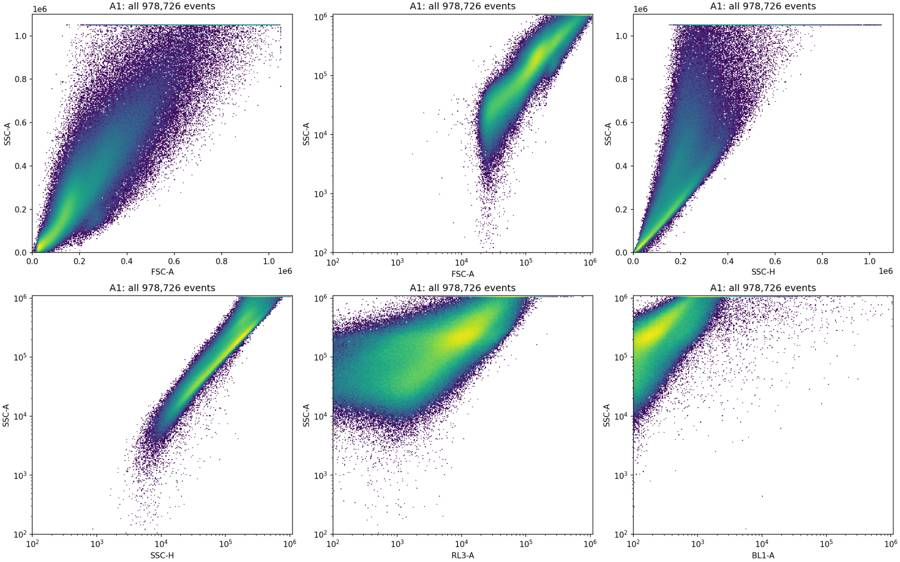
7
agent
The files contain about a million events each, with a distinct low-scatter population and some scatter signals at the instrument maximum. I’m comparing those patterns across the plate before fixing the cell and singlet polygons. Fluorescence boundaries will come from the sample populations, since there are no controls.
tool call · exec
text(await tools.exec_command({cmd:"sed -n '460,515p' /usr/local/lib/python3.12/site-packages/flowkit/_models/sample.py && python - <<'PY'\nimport flowkit as fk,inspect\nfrom flowkit._models.gating_results import GatingResults\nprint(inspect.signature(fk.transforms.LogTransform))\nprint(inspect.signature(GatingResults.get_gate_count))\nprint(inspect.signature(GatingResults.get_gate_relative_percent))\nprint(inspect.signature(fk.parse_gating_xml))\nPY","max_output_tokens":2200}));
tool output
Script completed
Wall time 1.1 seconds
Output:
{"chunk_id":"1480bc","wall_time_seconds":0.932794046,"exit_code":0,"original_token_count":598,"output":" return idx_sort_data\n\n def subsample_events(\n self,\n subsample_count=10000,\n random_seed=1\n ):\n \"\"\"\n Stores a set of subsampled indices for event data. Subsampled events\n can be accessed via the `get_events` method by setting the keyword\n argument `subsample=True`. The subsampled indices are available via\n the `subsample_indices` attribute.\n\n :param subsample_count: Number of events to use as a subsample. If the number of\n events in the Sample is less than the requested subsample count, then the\n maximum number of available events is used for the subsample.\n :param random_seed: Random seed used for subsampling events\n :return: None\n \"\"\"\n # get raw event count as it might be less than original event count\n # due to filtered negative scatter events\n raw_event_count = self._raw_events.shape[0]\n shuffled_indices = np.arange(raw_event_count)\n\n self._subsample_seed = random_seed\n rng = np.random.RandomState(seed=self._subsample_seed)\n\n bad_idx = np.empty(0, dtype=int)\n\n if self.negative_scatter_indices is not None:\n bad_idx = self.negative_scatter_indices\n\n if self.flagged_indices is not None:\n bad_idx = np.unique(np.concatenate([bad_idx, self.flagged_indices]))\n\n bad_count = bad_idx.shape[0]\n if bad_count > 0:\n shuffled_indices = np.delete(shuffled_indices, bad_idx)\n\n if (raw_event_count - bad_count) < subsample_count:\n # if total event count is less than requested subsample count,\n # subsample will be all events (minus negative scatter if filter is True)\n self._subsample_count = self.event_count - bad_count\n else:\n self._subsample_count = subsample_count\n\n # generate random indices for subsample\n # using a new RandomState with given seed\n rng.shuffle(shuffled_indices)\n\n self.subsample_indices = shuffled_indices[:self._subsample_count]\n\n def apply_compensation(self, compensation):\n \"\"\"\n Applies given compensation matrix to Sample events. If any\n transformation has been applied, it will be re-applied after\n(param_t, param_m)\n(self, gate_name, gate_path=None)\n(self, gate_name, gate_path=None)\n(xml_file_or_path)\n"}tool call · exec
text(await tools.exec_command({cmd:"python - <<'PY'\nimport flowkit as fk,numpy as np\ns=fk.Sample('/task/inputs/raw/Serotype panel_2_Rep2_Group_A1.fcs');e=s.get_events(source='raw');a=e[:,2];h=e[:,7]\nfor lo,hi in [(20000,50000),(50000,100000),(100000,200000),(200000,300000),(300000,500000)]:\n m=(h>=lo)&(h<hi)&(a<1e6)\n hist,edges=np.histogram(a[m]/h[m],np.linspace(.5,3,251)); print(lo,hi,'mode',edges[np.argmax(hist)],'Q',np.quantile(a[m]/h[m],[.01,.1,.25,.5,.75,.9,.99]))\nPY","max_output_tokens":2000}));
tool output
Script completed
Wall time 1.8 seconds
Output:
{"chunk_id":"4cd79d","wall_time_seconds":1.592286369,"exit_code":0,"original_token_count":135,"output":"20000 50000 mode 0.96 Q [0.68754033 0.84422243 0.91791405 1.0099175 1.16116237 1.3943963\n 2.07063188]\n50000 100000 mode 1.05 Q [0.89547294 0.98991484 1.04849973 1.14081056 1.31761227 1.69296068\n 2.55956141]\n100000 200000 mode 1.1600000000000001 Q [1.02948523 1.11219422 1.16854727 1.26797289 1.61470388 2.24932215\n 3.59035199]\n200000 300000 mode 1.21 Q [1.11394773 1.19231326 1.25921856 1.45377928 2.0910581 2.70752697\n 3.87211811]\n300000 500000 mode 1.31 Q [1.15724962 1.27118264 1.37296428 1.61824618 2.03849376 2.42844717\n 3.01279101]\n"}tool call · exec
text(await tools.apply_patch("*** Begin Patch\n*** Add File: /task/outputs/analyze_plate.py\n+\"\"\"Full-event, uncompensated FlowKit analysis of plate 230306.\n+\n+Run from any directory: python /task/outputs/analyze_plate.py\n+All histograms use every event in the stated population; no subsampling.\n+\"\"\"\n+from pathlib import Path\n+import json\n+import gc\n+import numpy as np\n+import pandas as pd\n+import flowkit as fk\n+import matplotlib\n+matplotlib.use('Agg')\n+import matplotlib.pyplot as plt\n+from matplotlib.colors import LogNorm\n+from scipy.ndimage import gaussian_filter1d\n+\n+ROOT = Path('/task')\n+OUT = ROOT / 'outputs'\n+PLOTS = OUT / 'plots'\n+QC = OUT / 'qc'\n+WORK = OUT / 'work'\n+for folder in (OUT, PLOTS, QC, WORK):\n+ folder.mkdir(exist_ok=True)\n+\n+POPULATIONS = ['Cells', 'Singlets', 'Live', 'GFP_pos']\n+PARENTS = ['all_events', 'Cells', 'Singlets', 'Live']\n+CELL_VERTICES = np.array([\n+ [60000, 50000], [120000, 35000], [450000, 200000],\n+ [950000, 800000], [950000, 1000000], [200000, 1000000],\n+ [65000, 250000],\n+], dtype=float)\n+SINGLET_VERTICES = np.array([\n+ [20000, 14000], [50000, 41000], [100000, 95000],\n+ [200000, 212000], [400000, 470000], [750000, 910000],\n+ [750000, 1000000], [500000, 800000], [300000, 465000],\n+ [200000, 295000], [100000, 138000], [50000, 65000],\n+ [20000, 26000],\n+], dtype=float)\n+# Initial sample-based boundaries, reviewed against all wells before finalization.\n+LIVE_MAX = 1500.0\n+GFP_MIN = 1000.0\n+FLUOR = fk.transforms.LogicleTransform(1048576, 0.5, 4.5, 0)\n+FLUOR_BINS = np.linspace(-0.18, 1.03, 320)\n+SCATTER_BINS = np.linspace(0, 1060000, 240)\n+LOG_SCATTER_BINS = np.geomspace(1000, 1100000, 180)\n+RATIO_BINS = np.linspace(0.5, 3, 251)\n+FLUOR_TICKS = np.array([-1000, 0, 1000, 10000, 100000, 1000000.])\n+\n+def dimension(name, **kwargs):\n+ return fk.Dimension(name, compensation_ref='uncompensated', **kwargs)\n+\n+def build_strategy():\n+ strategy = fk.GatingStrategy()\n+ strategy.add_gate(fk.gates.PolygonGate(\n+ 'Cells', [dimension('FSC-A'), dimension('SSC-A')], CELL_VERTICES.tolist()), ('root',))\n+ strategy.add_gate(fk.gates.PolygonGate(\n+ 'Singlets', [dimension('SSC-H'), dimension('SSC-A')], SINGLET_VERTICES.tolist()), ('root', 'Cells'))\n+ strategy.add_gate(fk.gates.RectangleGate(\n+ 'Live', [dimension('RL3-A', range_max=LIVE_MAX)]), ('root', 'Cells', 'Singlets'))\n+ strategy.add_gate(fk.gates.RectangleGate(\n+ 'GFP_pos', [dimension('BL1-A', range_min=GFP_MIN)]), ('root', 'Cells', 'Singlets', 'Live'))\n+ return strategy\n+\n+def segments(mask, edges):\n+ starts = np.flatnonzero(mask & ~np.r_[False, mask[:-1]])\n+ stops = np.flatnonzero(mask & ~np.r_[mask[1:], False]) + 1\n+ return [(float(edges[a]), float(edges[b])) for a, b in zip(starts, stops)]\n+\n+def analyze():\n+ layout = pd.read_csv(ROOT / 'inputs/plate_layout.csv', keep_default_na=False)\n+ strategy = build_strategy()\n+ with open(OUT / 'gates.xml', 'wb') as handle:\n+ fk.export_gatingml(strategy, handle)\n+ saved_strategy = fk.parse_gating_xml(str(OUT / 'gates.xml'))\n+ assert len(saved_strategy.get_gate_ids()) == 4\n+ rows, summaries, time_rows, saturation_rows = [], [], [], []\n+ all_hist = {}\n+ for row in layout.itertuples(index=False):\n+ sample = fk.Sample(str(ROOT / 'inputs/raw' / row.file))\n+ events = sample.get_events(source='raw', subsample=False)\n+ metadata = sample.get_metadata()\n+ get = lambda ch: events[:, sample.get_channel_index(ch)]\n+ results = saved_strategy.gate_sample(sample)\n+ # Check the in-memory strategy against its exported/reloaded equivalent.\n+ original = strategy.gate_sample(sample)\n+ masks = {p: results.get_gate_membership(p) for p in POPULATIONS}\n+ counts = {p: results.get_gate_count(p) for p in POPULATIONS}\n+ for p in POPULATIONS:\n+ assert np.array_equal(masks[p], original.get_gate_membership(p))\n+ assert int(masks[p].sum()) == counts[p]\n+ previous = sample.event_count\n+ for p, parent in zip(POPULATIONS, PARENTS):\n+ count = counts[p]\n+ assert count <= previous\n+ rows.append(dict(file=row.file, well=row.well, population=p,\n+ count=count, parent_population=parent,\n+ pct_of_parent=100.0 * count / previous if previous else 0.0))\n+ previous = count\n+ pd.DataFrame(rows).to_csv(OUT / 'counts.csv', index=False)\n+ t, fsc, ssc, height, zombie, gfp = [get(ch) for ch in\n+ ['Time', 'FSC-A', 'SSC-A', 'SSC-H', 'RL3-A', 'BL1-A']]\n+ # Time in seconds: Sample applies the FCS TIMESTEP (0.001 s here).\n+ edges = np.arange(0, np.ceil(t.max()) + 0.5, 0.5)\n+ if edges[-1] < t.max():\n+ edges = np.r_[edges, edges[-1] + 0.5]\n+ h_time = np.histogram(t, edges)[0]\n+ full_bins = edges[1:] <= t.max()\n+ baseline_mask = full_bins & (edges[:-1] >= t.min())\n+ baseline = np.median(h_time[baseline_mask] / 0.5)\n+ h_cells = np.histogram(t[masks['Cells']], edges)[0]\n+ h_live = np.histogram(t[masks['Live']], edges)[0]\n+ dt = np.diff(t)\n+ low = (h_time / 0.5 < baseline * 0.2) & baseline_mask\n+ high = (h_time / 0.5 > baseline * 2.0) & baseline_mask\n+ widths = np.minimum(edges[1:], t.max()) - np.maximum(edges[:-1], t.min())\n+ widths = np.maximum(widths, 1e-9)\n+ for i in range(len(h_time)):\n+ tm = (t >= edges[i]) & (t < edges[i+1])\n+ live_tm = tm & masks['Live']\n+ time_rows.append(dict(file=row.file, well=row.well,\n+ start_s=edges[i], end_s=min(edges[i+1], float(t.max())),\n+ events=int(h_time[i]), events_per_s=h_time[i]/widths[i],\n+ cells=int(h_cells[i]), live=int(h_live[i]),\n+
… [8,568 more characters not shown]tool output
Script completed
Wall time 1.2 seconds
Output:
{}
{"chunk_id":"ca9524","wall_time_seconds":1.001482116,"session_id":96185,"original_token_count":0,"output":""}tool call · exec
text(await tools.exec_command({cmd:"tail -8 /task/outputs/work/analysis.log && ls -lh /task/outputs/gates.xml /task/outputs/counts.csv","max_output_tokens":2000}));
text(await tools.clock__curr_time({}));
tool output
Script completed
Wall time 0.0 seconds
Output:
{"chunk_id":"7d00da","wall_time_seconds":0.000004317,"exit_code":0,"original_token_count":58,"output":"A1 978726 {'Cells': 727438, 'Singlets': 462147, 'Live': 95833, 'GFP_pos': 258} rate 21514 end 19179\n-rw-r--r-- 1 root root 368 Nov 10 17:11 /task/outputs/counts.csv\n-rw-r--r-- 1 root root 4.5K Nov 10 17:11 /task/outputs/gates.xml\n"}
{"current_time":"2026-11-10 17:11:54 UTC"}tool call · exec
text(await tools.exec_command({cmd:"python - <<'PY'\nimport sys\nsys.path.insert(0,'/task/outputs')\nfrom analyze_plate import *\nh=dict(np.load(WORK/'A1.npz'))\nfig,axs=plt.subplots(1,3,figsize=(16,5),layout='constrained')\nfor ax,k in zip(axs[:2],['live','gfp']):\n ax.pcolormesh(FLUOR_BINS,SCATTER_BINS,h[k].T,norm=LogNorm(vmin=1))\n ax.set_xticks(FLUOR.apply(FLUOR_TICKS),['−1000','0','1000','10000','100000','1M'])\n ax.set(xlabel='RL3-A' if k=='live' else 'BL1-A',ylabel='SSC-A',title=k+' A1',xlim=(-.05,1.02))\n ax.axvline(FLUOR.apply(np.array([LIVE_MAX if k=='live' else GFP_MIN]))[0],color='red')\nmids=(FLUOR_BINS[:-1]+FLUOR_BINS[1:])/2\nfor k in ['zombie_hist','gfp_hist']:\n axs[2].plot(mids,h[k]/h[k].max(),label=k)\naxs[2].set_xticks(FLUOR.apply(FLUOR_TICKS),['−1000','0','1000','10000','100000','1M']);axs[2].legend()\nfig.savefig(PLOTS/'initial_A1_fluorescence.png',dpi=140)\nPY","max_output_tokens":1000}));
image((await tools.view_image({path:"/task/outputs/plots/initial_A1_fluorescence.png"})).image_url);
tool output
Script completed Wall time 1.8 seconds Output:
{"chunk_id":"c61947","wall_time_seconds":1.588231703,"exit_code":0,"original_token_count":0,"output":""}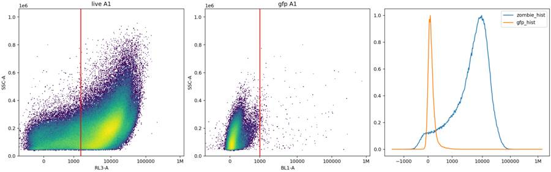
tool call · exec
text(await tools.exec_command({cmd:"tail -10 /task/outputs/work/analysis.log","max_output_tokens":2000}));
text(await tools.write_stdin({session_id:96185,chars:"",yield_time_ms:1000,max_output_tokens:1000}));
tool output
Script completed
Wall time 5.0 seconds
Output:
{"chunk_id":"40d7bd","wall_time_seconds":0.000004051,"exit_code":0,"original_token_count":50,"output":"A1 978726 {'Cells': 727438, 'Singlets': 462147, 'Live': 95833, 'GFP_pos': 258} rate 21514 end 19179\nA2 935707 {'Cells': 679332, 'Singlets': 509776, 'Live': 67230, 'GFP_pos': 256} rate 9712 end 8253\n"}
{"chunk_id":"1677b2","wall_time_seconds":5.001211333,"session_id":96185,"original_token_count":0,"output":""}tool call · exec
text(await tools.exec_command({cmd:"ps -eo pid,etime,pcpu,rss,args | rg 'analyze_plate|python'","max_output_tokens":1500}));
text(await tools.clock__curr_time({}));
tool output
Script completed
Wall time 0.0 seconds
Output:
{"chunk_id":"36f2d9","wall_time_seconds":0.000004367,"exit_code":1,"original_token_count":11,"output":"/bin/bash: line 1: ps: command not found\n"}
{"current_time":"2026-11-10 17:12:18 UTC"}tool call · exec
text(await tools.apply_patch("*** Begin Patch\n*** Add File: /task/outputs/screen_acquisition.py\n+\"\"\"Independent acquisition screen using every event, with no time filtering.\"\"\"\n+from pathlib import Path\n+import numpy as np\n+import pandas as pd\n+import flowkit as fk\n+import matplotlib\n+matplotlib.use('Agg')\n+import matplotlib.pyplot as plt\n+\n+OUT = Path('/task/outputs')\n+layout = pd.read_csv('/task/inputs/plate_layout.csv')\n+fig, axs = plt.subplots(7, 6, figsize=(21, 22), layout='constrained')\n+summary = []\n+traces = []\n+for row, ax in zip(layout.itertuples(index=False), axs.flat):\n+ s = fk.Sample('/task/inputs/raw/' + row.file)\n+ e = s.get_events(source='raw', subsample=False)\n+ t = e[:, s.get_channel_index('Time')]\n+ # Fixed half-second intervals; report/examine the partial last bin separately.\n+ edges = np.arange(0, np.ceil(t.max()*2)/2 + .25, .5)\n+ h = np.histogram(t, edges)[0]\n+ durations = np.minimum(edges[1:], t.max()) - np.maximum(edges[:-1],t.min())\n+ rates = h / np.maximum(durations,1e-9)\n+ starts = np.searchsorted(t,edges[:-1]); stops = np.searchsorted(t,edges[1:])\n+ fsc = e[:,s.get_channel_index('FSC-A')]\n+ ssc = e[:,s.get_channel_index('SSC-A')]\n+ med_fsc = np.array([np.median(fsc[a:b]) if b>a else np.nan for a,b in zip(starts,stops)])\n+ med_ssc = np.array([np.median(ssc[a:b]) if b>a else np.nan for a,b in zip(starts,stops)])\n+ sat = np.mean((fsc >= 1048575) | (ssc >= 1048575))*100\n+ full = durations >= .499\n+ mid = (edges[:-1]+edges[1:])/2\n+ ax.plot(mid,rates,color='black',linewidth=.7)\n+ ax.set_ylim(bottom=0)\n+ twin=ax.twinx()\n+ twin.plot(mid,med_fsc/1000,color='tab:orange',linewidth=.6,alpha=.9)\n+ twin.set_ylim(0,400)\n+ twin.tick_params(labelsize=6,colors='tab:orange')\n+ ax.set_title(f'{row.well} | N={len(t):,}; scatter max={sat:.2f}%',fontsize=9)\n+ ax.tick_params(labelsize=7)\n+ dt = np.diff(t)\n+ info = dict(well=row.well,total=len(t),end_s=t.max(),\n+ median_rate=np.median(rates[full]),\n+ min_rate=np.min(rates[full]),max_rate=np.max(rates[full]),\n+ first5_rate=np.sum(t<t.min()+5)/5,\n+ last5_rate=np.sum(t>=t.max()-5)/5,\n+ gap_s=dt.max(),gap_at_s=t[np.argmax(dt)],\n+ rate_cv=np.std(rates[full])/np.mean(rates[full]),scatter_sat_pct=sat)\n+ summary.append(info)\n+ for i in range(len(h)):\n+ traces.append(dict(well=row.well,start=edges[i],end=min(edges[i+1],t.max()),\n+ count=int(h[i]),rate=rates[i],median_fsc=med_fsc[i],median_ssc=med_ssc[i]))\n+ print(row.well,info,flush=True)\n+fig.suptitle('Acquisition screen: all events/s (black, left); median FSC-A / 1000 (orange, right); Time in seconds',fontsize=15)\n+fig.savefig(OUT/'plots/acquisition_screen.png',dpi=130)\n+pd.DataFrame(summary).to_csv(OUT/'qc/acquisition_screen.csv',index=False)\n+pd.DataFrame(traces).to_csv(OUT/'qc/acquisition_traces.csv',index=False)\n*** End Patch"));
text(await tools.exec_command({cmd:"OPENBLAS_NUM_THREADS=1 python /task/outputs/screen_acquisition.py > /task/outputs/work/acquisition.log 2>&1",yield_time_ms:1000,max_output_tokens:1000}));
tool output
Script completed
Wall time 1.2 seconds
Output:
{}
{"chunk_id":"70a5c6","wall_time_seconds":1.001093286,"session_id":21537,"original_token_count":0,"output":""}15
agent
The first shared gate tree is saved, and counts are being written from its reloaded XML. The QC screen also measures event rate, scatter stability, and signal clipping across each run, so exclusions will have numerical evidence.
tool call · exec
const r=await Promise.allSettled([
tools.exec_command({cmd:"tail -5 /task/outputs/work/analysis.log",max_output_tokens:1500}),
tools.exec_command({cmd:"tail -5 /task/outputs/work/acquisition.log",max_output_tokens:2500})
]);r.forEach(text);
tool output
Script completed
Wall time 0.0 seconds
Output:
{"status":"fulfilled","value":{"chunk_id":"f078dc","wall_time_seconds":0.000002549,"exit_code":0,"original_token_count":123,"output":"A5 986514 {'Cells': 720435, 'Singlets': 540644, 'Live': 87464, 'GFP_pos': 401} rate 10269 end 9073\nA6 755396 {'Cells': 557865, 'Singlets': 445819, 'Live': 54308, 'GFP_pos': 327} rate 7938 end 6886\nA7 848859 {'Cells': 604532, 'Singlets': 454070, 'Live': 54215, 'GFP_pos': 185} rate 8825 end 7731\nA8 710140 {'Cells': 518215, 'Singlets': 410322, 'Live': 56650, 'GFP_pos': 263} rate 7353 end 6485\nA9 958681 {'Cells': 669201, 'Singlets': 474941, 'Live': 84231, 'GFP_pos': 177} rate 9930 end 8818\n"}}
{"status":"fulfilled","value":{"chunk_id":"17d039","wall_time_seconds":0.000008656,"exit_code":0,"original_token_count":142,"output":"A1 {'well': 'A1', 'total': 978726, 'end_s': 46.25, 'median_rate': 21514.0, 'min_rate': 16978.0, 'max_rate': 23012.0, 'first5_rate': 22326.6, 'last5_rate': 19178.8, 'gap_s': 0.006000000000000227, 'gap_at_s': 45.42, 'rate_cv': 0.05579595347620597, 'scatter_sat_pct': 1.1752012309880395}\nA2 {'well': 'A2', 'total': 935707, 'end_s': 97.949, 'median_rate': 9712.0, 'min_rate': 6550.0, 'max_rate': 11084.0, 'first5_rate': 9693.2, 'last5_rate': 8252.6, 'gap_s': 0.020000000000010232, 'gap_at_s': 71.118, 'rate_cv': 0.06835494201392586, 'scatter_sat_pct': 0.501225276715895}\n"}}tool call · exec
text(await tools.exec_command({cmd:"python - <<'PY'\nimport sys\nsys.path.insert(0,'/task/outputs')\nfrom analyze_plate import *\nstrategy=build_strategy()\nfig,axes=plt.subplots(4,4,figsize=(19,15),layout='constrained')\nfor well,axs in zip(['B6','B12','C6','D4'],axes):\n s=fk.Sample('/task/inputs/raw/Serotype panel_2_Rep2_Group_'+well+'.fcs');e=s.get_events(source='raw',subsample=False);r=strategy.gate_sample(s)\n get=lambda ch:e[:,s.get_channel_index(ch)]\n for ax,p,ch in zip(axs[:2],['Singlets','Live'],['RL3-A','BL1-A']):\n m=r.get_gate_membership(p);x=FLUOR.apply(get(ch)[m]);y=get('SSC-A')[m]\n ax.hist2d(x,y,bins=[FLUOR_BINS,SCATTER_BINS],norm=LogNorm(vmin=1))\n ax.set_xticks(FLUOR.apply(FLUOR_TICKS),['−1k','0','1k','10k','100k','1M']);ax.set_xlim(-.05,1.02)\n ax.set_title(well+' '+ch+' on '+p);ax.set_ylabel('SSC-A')\n cut=LIVE_MAX if ch=='RL3-A' else GFP_MIN\n ax.axvline(FLUOR.apply(np.array([cut]))[0],color='red')\n for ax,p,ch in zip(axs[2:],['Singlets','Live'],['RL3-A','BL1-A']):\n m=r.get_gate_membership(p);v=FLUOR.apply(get(ch)[m]);h,_=np.histogram(v,FLUOR_BINS)\n ax.plot((FLUOR_BINS[:-1]+FLUOR_BINS[1:])/2,gaussian_filter1d(h.astype(float),1))\n ax.set_xticks(FLUOR.apply(FLUOR_TICKS),['−1k','0','1k','10k','100k','1M']);ax.set_xlim(-.05,1.02);ax.set_title(well+' '+ch)\nfig.savefig(PLOTS/'representative_fluorescence_initial.png',dpi=140)\nPY","yield_time_ms":1000,"max_output_tokens":1000}));
tool output
Script completed
Wall time 1.2 seconds
Output:
{"chunk_id":"7809f4","wall_time_seconds":1.001263607,"session_id":95528,"original_token_count":0,"output":""}tool call · exec
text(await tools.exec_command({cmd:"tail -4 /task/outputs/work/acquisition.log && tail -4 /task/outputs/work/analysis.log","max_output_tokens":2000}));
text(await tools.write_stdin({session_id:95528,chars:"",yield_time_ms:1000,max_output_tokens:1000}));
tool output
Script completed
Wall time 0.1 seconds
Output:
{"chunk_id":"c3b38f","wall_time_seconds":0.000004917,"exit_code":0,"original_token_count":383,"output":"B2 {'well': 'B2', 'total': 728886, 'end_s': 97.867, 'median_rate': 7519.0, 'min_rate': 5794.0, 'max_rate': 8346.0, 'first5_rate': 7091.2, 'last5_rate': 7257.4, 'gap_s': 0.026000000000003354, 'gap_at_s': 62.129, 'rate_cv': 0.0587975574208226, 'scatter_sat_pct': 0.5373954226038091}\nB3 {'well': 'B3', 'total': 667298, 'end_s': 97.94, 'median_rate': 6935.0, 'min_rate': 5184.0, 'max_rate': 7830.0, 'first5_rate': 6175.4, 'last5_rate': 6316.2, 'gap_s': 0.028000000000005798, 'gap_at_s': 67.952, 'rate_cv': 0.06410205818925747, 'scatter_sat_pct': 0.35171692407290295}\nB4 {'well': 'B4', 'total': 598212, 'end_s': 97.86200000000001, 'median_rate': 6276.0, 'min_rate': 2990.0, 'max_rate': 7632.0, 'first5_rate': 5966.8, 'last5_rate': 4140.6, 'gap_s': 0.036999999999999034, 'gap_at_s': 54.039, 'rate_cv': 0.09499425940869974, 'scatter_sat_pct': 0.3156071760512995}\nB5 {'well': 'B5', 'total': 837561, 'end_s': 97.905, 'median_rate': 8761.0, 'min_rate': 4876.0, 'max_rate': 9686.0, 'first5_rate': 8431.8, 'last5_rate': 6119.4, 'gap_s': 0.028000000000005798, 'gap_at_s': 66.544, 'rate_cv': 0.08536014424559048, 'scatter_sat_pct': 0.41262666241623}\nA10 870505 {'Cells': 624026, 'Singlets': 466322, 'Live': 70400, 'GFP_pos': 216} rate 9118 end 6798\nA11 844586 {'Cells': 590872, 'Singlets': 459390, 'Live': 92617, 'GFP_pos': 348} rate 8736 end 8157\nA12 947510 {'Cells': 667252, 'Singlets': 503782, 'Live': 101169, 'GFP_pos': 534} rate 9866 end 7414\nB1 733754 {'Cells': 482271, 'Singlets': 354618, 'Live': 64311, 'GFP_pos': 36} rate 7626 end 7458\n"}
{"chunk_id":"5f5ebd","wall_time_seconds":0.066989482,"exit_code":0,"original_token_count":0,"output":""}tool call · exec
image((await tools.view_image({path:"/task/outputs/plots/representative_fluorescence_initial.png"})).image_url);
tool output
Script completed Wall time 0.0 seconds Output:
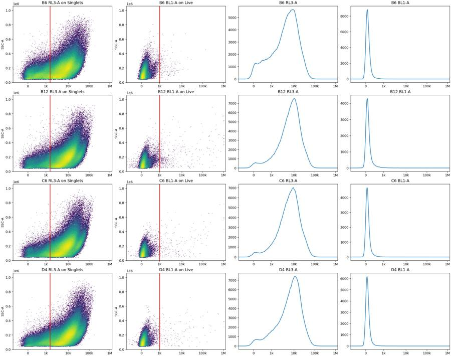
tool call · exec
text(await tools.exec_command({cmd:"python - <<'PY'\nimport sys\nsys.path.insert(0,'/task/outputs')\nfrom analyze_plate import *\nfrom scipy.signal import find_peaks\nm=(FLUOR_BINS[:-1]+FLUOR_BINS[1:])/2\nfor path in sorted(WORK.glob('*.npz')):\n h=np.load(path)['zombie_hist'];v=gaussian_filter1d(h.astype(float),2)\n peaks,_=find_peaks(v,prominence=v.max()*.002)\n low=[i for i in peaks if FLUOR.inverse(m[i:i+1])[0]<400]\n high=[i for i in peaks if FLUOR.inverse(m[i:i+1])[0]>2000]\n if low and high:\n a=low[0];b=max(high,key=lambda i:v[i]);k=a+np.argmin(v[a:b+1])\n print(path.stem,'dim, valley, bright',np.round(FLUOR.inverse(m[[a,k,b]])), 'valley/negative',round(v[k]/v[a],3))\n else: print(path.stem,'no resolvable valley','peaks',np.round(FLUOR.inverse(m[peaks])))\nPY","max_output_tokens":3000}));
tool output
Script completed
Wall time 1.7 seconds
Output:
{"chunk_id":"39a214","wall_time_seconds":1.571214495,"exit_code":0,"original_token_count":294,"output":"A1 no resolvable valley peaks [8834.]\nA10 dim, valley, bright [ 78. 346. 11974.] valley/negative 0.742\nA11 dim, valley, bright [ 78. 235. 9898.] valley/negative 0.88\nA12 dim, valley, bright [ 120. 191. 7315.] valley/negative 0.965\nA2 dim, valley, bright [ 37. 452. 8191.] valley/negative 0.661\nA3 dim, valley, bright [ 51. 297. 8834.] valley/negative 0.773\nA4 dim, valley, bright [ 37. 297. 10281.] valley/negative 0.802\nA5 dim, valley, bright [ 51. 297. 7315.] valley/negative 0.715\nA6 dim, valley, bright [ 37. 281. 9175.] valley/negative 0.767\nA7 dim, valley, bright [ 37. 297. 15655.] valley/negative 0.736\nA8 dim, valley, bright [ 106. 329. 13429.] valley/negative 0.821\nA9 dim, valley, bright [ 78. 220. 14499.] valley/negative 0.913\nB1 dim, valley, bright [ 51. 265. 12925.] valley/negative 0.705\nB2 dim, valley, bright [ 51. 380. 16907.] valley/negative 0.713\nB3 dim, valley, bright [ 65. 329. 18260.] valley/negative 0.755\nB4 dim, valley, bright [ 134. 362. 15066.] valley/negative 0.845\nB5 dim, valley, bright [ 92. 235. 10281.] valley/negative 0.956\nB6 dim, valley, bright [ 78. 162. 8834.] valley/negative 0.978\n"}tool call · exec
text(await tools.exec_command({cmd:"tail -6 /task/outputs/work/acquisition.log && tail -3 /task/outputs/work/analysis.log","max_output_tokens":2500}));
text(await tools.clock__curr_time({}));
tool output
Script completed
Wall time 0.0 seconds
Output:
{"chunk_id":"01b305","wall_time_seconds":0.000004893,"exit_code":0,"original_token_count":502,"output":"C9 {'well': 'C9', 'total': 801299, 'end_s': 97.9, 'median_rate': 8260.0, 'min_rate': 6440.0, 'max_rate': 9118.0, 'first5_rate': 7297.6, 'last5_rate': 7978.2, 'gap_s': 0.025000000000005684, 'gap_at_s': 66.11, 'rate_cv': 0.05850549381787174, 'scatter_sat_pct': 0.3227259737002043}\nC10 {'well': 'C10', 'total': 927162, 'end_s': 97.483, 'median_rate': 9772.0, 'min_rate': 4740.0, 'max_rate': 11192.0, 'first5_rate': 9649.4, 'last5_rate': 5866.6, 'gap_s': 0.018000000000000682, 'gap_at_s': 60.281, 'rate_cv': 0.10086190572129256, 'scatter_sat_pct': 0.4120099831528902}\nC11 {'well': 'C11', 'total': 868685, 'end_s': 97.535, 'median_rate': 9021.0, 'min_rate': 7482.0, 'max_rate': 14968.0, 'first5_rate': 9301.6, 'last5_rate': 7850.8, 'gap_s': 0.027000000000001023, 'gap_at_s': 81.52, 'rate_cv': 0.0772641239549919, 'scatter_sat_pct': 0.34339259915849824}\nC12 {'well': 'C12', 'total': 578214, 'end_s': 97.755, 'median_rate': 6024.0, 'min_rate': 4594.0, 'max_rate': 7052.0, 'first5_rate': 5897.6, 'last5_rate': 5676.4, 'gap_s': 0.0519999999999996, 'gap_at_s': 62.349000000000004, 'rate_cv': 0.07037471474654036, 'scatter_sat_pct': 0.17692411460116841}\nD1 {'well': 'D1', 'total': 800840, 'end_s': 97.943, 'median_rate': 8270.0, 'min_rate': 6904.0, 'max_rate': 9296.0, 'first5_rate': 7776.4, 'last5_rate': 7306.4, 'gap_s': 0.042999999999992156, 'gap_at_s': 71.227, 'rate_cv': 0.052680611468054334, 'scatter_sat_pct': 0.27533589730782676}\nD2 {'well': 'D2', 'total': 894591, 'end_s': 97.932, 'median_rate': 9264.0, 'min_rate': 6392.0, 'max_rate': 10692.0, 'first5_rate': 8469.8, 'last5_rate': 7963.0, 'gap_s': 0.015999999999998238, 'gap_at_s': 45.319, 'rate_cv': 0.059467333666309866, 'scatter_sat_pct': 0.32707684293716344}\nB5 837561 {'Cells': 573967, 'Singlets': 441095, 'Live': 87632, 'GFP_pos': 205} rate 8761 end 6119\nB6 877336 {'Cells': 595432, 'Singlets': 449106, 'Live': 107104, 'GFP_pos': 195} rate 9087 end 6055\nB7 954909 {'Cells': 660963, 'Singlets': 487582, 'Live': 53877, 'GFP_pos': 173} rate 10295 end 8913\n"}
{"current_time":"2026-11-10 17:14:00 UTC"}tool call · exec
text(await tools.exec_command({cmd:"python - <<'PY'\nimport sys\nsys.path.insert(0,'/task/outputs')\nfrom analyze_plate import *\nstrategy=build_strategy();strategy.get_gate('Live').dimensions[0].max=300.0\nprint(strategy.get_gate('Live').dimensions[0].__dict__)\nfig,axes=plt.subplots(4,3,figsize=(17,17),layout='constrained')\nfor well,axs in zip(['A2','B1','B3','D4'],axes):\n s=fk.Sample('/task/inputs/raw/Serotype panel_2_Rep2_Group_'+well+'.fcs');e=s.get_events(source='raw',subsample=False);r=strategy.gate_sample(s)\n get=lambda ch:e[:,s.get_channel_index(ch)]\n for ax,p,ch in zip(axs[:2],['Singlets','Live'],['RL3-A','BL1-A']):\n mask=r.get_gate_membership(p);x=FLUOR.apply(get(ch)[mask]);y=get('SSC-A')[mask]\n ax.hist2d(x,y,bins=[FLUOR_BINS,SCATTER_BINS],norm=LogNorm(vmin=1))\n ax.set_xticks(FLUOR.apply(FLUOR_TICKS),['−1k','0','1k','10k','100k','1M']);ax.set_xlim(-.05,.75)\n ax.set_title(well+' '+ch+' on '+p);ax.set_ylabel('SSC-A')\n ax.axvline(FLUOR.apply(np.array([300.]))[0],color='red')\n v=get('BL1-A')[r.get_gate_membership('Live')]\n h,b=np.histogram(v,np.arange(-300,1505,5)); axs[2].plot((b[:-1]+b[1:])/2,h)\n axs[2].set(xlabel='BL1-A (raw units)',ylabel='events / 5 units',title=well+' GFP on Live: '+str(len(v))+' cells',yscale='log')\n axs[2].axvline(300,color='red');axs[2].axvline(500,color='orange')\n print(well,'Live',len(v),'GFP quantiles',np.quantile(v,[.5,.9,.95,.975,.99,.995,.999]),'count>300',(v>=300).sum(),'count>500',(v>=500).sum())\nfig.savefig(PLOTS/'threshold_review_300.png',dpi=140)\nPY","yield_time_ms":1000,"max_output_tokens":1000}));
tool output
Script completed
Wall time 1.2 seconds
Output:
{"chunk_id":"936d47","wall_time_seconds":1.000885011,"session_id":10847,"original_token_count":0,"output":""}tool call · exec
text(await tools.exec_command({cmd:"rg -n 'def get_gate\\(|return copy|deepcopy' /usr/local/lib/python3.12/site-packages/flowkit/_models/gating_strategy.py | head -35 && tail -4 /task/outputs/work/acquisition.log","max_output_tokens":1500}));
text(await tools.write_stdin({session_id:10847,chars:"",yield_time_ms:1000,max_output_tokens:1500}));
text(await tools.write_stdin({session_id:21537,chars:"",yield_time_ms:1000,max_output_tokens:1000}));
tool output
Script completed
Wall time 0.0 seconds
Output:
{"chunk_id":"51b482","wall_time_seconds":0.000004391,"exit_code":0,"original_token_count":301,"output":"140: def get_gate(self, gate_name, gate_path=None, sample_id=None):\nD3 {'well': 'D3', 'total': 915097, 'end_s': 97.745, 'median_rate': 9461.0, 'min_rate': 7538.0, 'max_rate': 10260.0, 'first5_rate': 8811.4, 'last5_rate': 8540.8, 'gap_s': 0.030000000000001137, 'gap_at_s': 79.035, 'rate_cv': 0.04794679743048928, 'scatter_sat_pct': 0.47066048735817073}\nD4 {'well': 'D4', 'total': 925805, 'end_s': 97.528, 'median_rate': 9584.0, 'min_rate': 7780.0, 'max_rate': 14474.0, 'first5_rate': 9594.4, 'last5_rate': 8421.8, 'gap_s': 0.016000000000005343, 'gap_at_s': 60.208, 'rate_cv': 0.06844055000186447, 'scatter_sat_pct': 0.42784387641025917}\nD5 {'well': 'D5', 'total': 153195, 'end_s': 97.768, 'median_rate': 1591.0, 'min_rate': 1154.0, 'max_rate': 1768.0, 'first5_rate': 1307.6, 'last5_rate': 1351.4, 'gap_s': 0.029000000000003467, 'gap_at_s': 61.82, 'rate_cv': 0.07143557640609151, 'scatter_sat_pct': 0.07572048696106269}\nD6 {'well': 'D6', 'total': 726651, 'end_s': 97.928, 'median_rate': 7566.0, 'min_rate': 6116.0, 'max_rate': 8426.0, 'first5_rate': 7033.2, 'last5_rate': 6642.0, 'gap_s': 0.014000000000002899, 'gap_at_s': 54.253, 'rate_cv': 0.05970436565913436, 'scatter_sat_pct': 0.19995843947094272}\n"}
{"chunk_id":"21010b","wall_time_seconds":0.000001374,"exit_code":0,"original_token_count":159,"output":"{'compensation_ref': 'uncompensated', 'id': 'RL3-A', 'transformation_ref': None, 'min': None, 'max': 300.0}\nA2 Live 24758 GFP quantiles [ 71. 190. 245. 320.\n 548. 1603.535 66235.80499998] count>300 729 count>500 279\nB1 Live 25478 GFP quantiles [ 59. 151. 186. 225. 293. 353. 541.092] count>300 235 count>500 30\nB3 Live 16026 GFP quantiles [ 68. 180. 234. 318. 741.75 2868. 17015.625] count>300 447 count>500 211\nD4 Live 17877 GFP quantiles [ 67. 183. 237. 307. 462.48 844.1 28555.752] count>300 478 count>500 157\n"}
{"chunk_id":"0356d8","wall_time_seconds":0.00000117,"exit_code":143,"original_token_count":0,"output":""}tool call · exec
image((await tools.view_image({path:"/task/outputs/plots/threshold_review_300.png"})).image_url);
text(await tools.exec_command({cmd:"ls -lh /task/outputs/plots /task/outputs/qc && tail -4 /task/outputs/work/analysis.log","max_output_tokens":2000}));
tool output
Script completed Wall time 0.1 seconds Output:
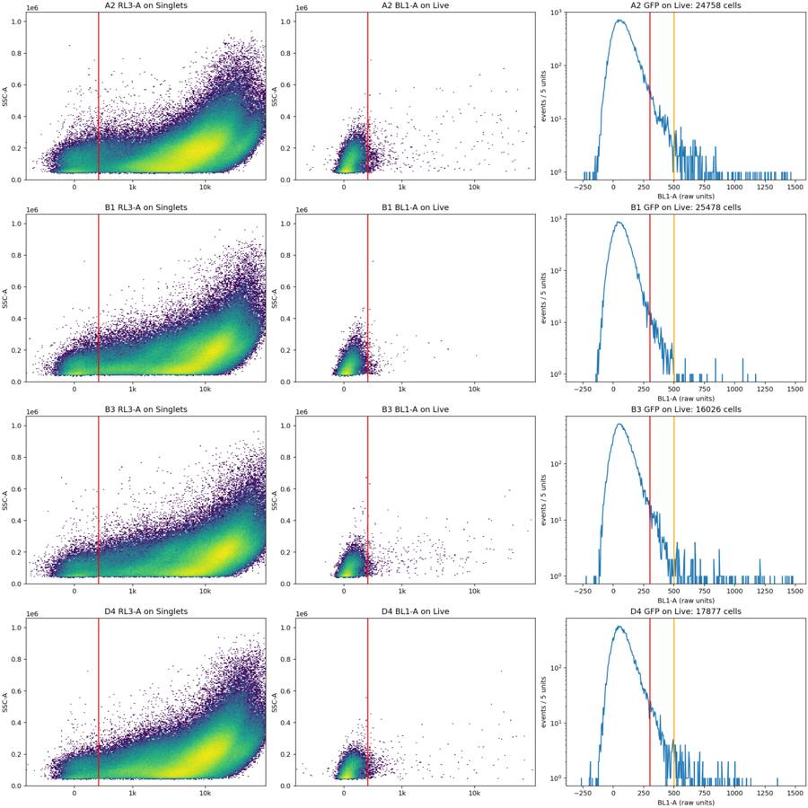
{"chunk_id":"130b88","wall_time_seconds":0.000005456,"exit_code":0,"original_token_count":232,"output":"/task/outputs/plots:\ntotal 2.6M\n-rw-r--r-- 1 root root 1014K Nov 10 17:14 acquisition_screen.png\n-rw-r--r-- 1 root root 411K Nov 10 17:10 initial_A1.png\n-rw-r--r-- 1 root root 139K Nov 10 17:12 initial_A1_fluorescence.png\n-rw-r--r-- 1 root root 531K Nov 10 17:13 representative_fluorescence_initial.png\n-rw-r--r-- 1 root root 511K Nov 10 17:14 threshold_review_300.png\n\n/task/outputs/qc:\ntotal 352K\n-rw-r--r-- 1 root root 5.2K Nov 10 17:14 acquisition_screen.csv\n-rw-r--r-- 1 root root 342K Nov 10 17:14 acquisition_traces.csv\nB8 918778 {'Cells': 633773, 'Singlets': 477587, 'Live': 58090, 'GFP_pos': 284} rate 9902 end 6996\nB9 862070 {'Cells': 607399, 'Singlets': 462818, 'Live': 61349, 'GFP_pos': 293} rate 8911 end 8686\nB10 1083648 {'Cells': 754805, 'Singlets': 553261, 'Live': 71380, 'GFP_pos': 299} rate 11368 end 7678\nB11 988574 {'Cells': 684941, 'Singlets': 519591, 'Live': 73552, 'GFP_pos': 401} rate 10319 end 7468\n"}tool call · exec
image((await tools.view_image({path:"/task/outputs/plots/acquisition_screen.png"})).image_url);
text(await tools.exec_command({cmd:"python - <<'PY'\nimport pandas as pd\nx=pd.read_csv('/task/outputs/qc/acquisition_screen.csv')\nprint(x.to_string(index=False,float_format=lambda a:f'{a:.3f}'))\nPY","max_output_tokens":6500}));
tool output
Script completed Wall time 0.4 seconds Output:
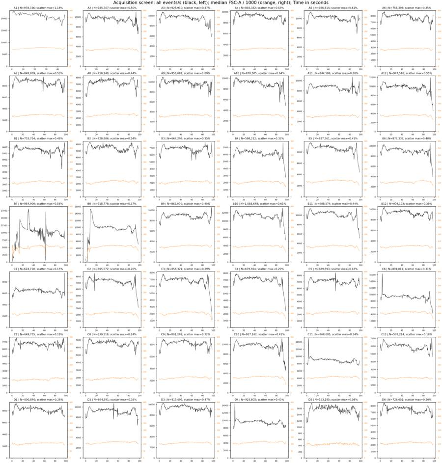
{"chunk_id":"ef7e37","wall_time_seconds":0.164725252,"exit_code":0,"original_token_count":1301,"output":"well total end_s median_rate min_rate max_rate first5_rate last5_rate gap_s gap_at_s rate_cv scatter_sat_pct\n A1 978726 46.250 21514.000 16978.000 23012.000 22326.600 19178.800 0.006 45.420 0.056 1.175\n A2 935707 97.949 9712.000 6550.000 11084.000 9693.200 8252.600 0.020 71.118 0.068 0.501\n A3 925910 97.658 9715.000 5756.000 10764.000 9492.800 7542.200 0.033 90.524 0.085 0.467\n A4 892332 97.738 9267.000 7558.000 10108.000 8543.000 8286.800 0.020 45.231 0.056 0.531\n A5 986514 97.871 10269.000 6808.000 11428.000 9725.800 9073.200 0.053 75.158 0.061 0.613\n A6 755396 97.106 7938.000 5734.000 8708.000 7450.800 6886.200 0.043 65.663 0.064 0.349\n A7 848859 97.919 8825.000 6726.000 9598.000 8216.600 7731.400 0.035 69.059 0.060 0.535\n A8 710140 97.939 7353.000 5108.000 8094.000 5809.200 6484.600 0.025 72.375 0.072 0.443\n A9 958681 97.821 9930.000 6932.000 11036.000 9638.000 8818.000 0.053 76.032 0.063 1.089\n A10 870505 97.699 9118.000 5378.000 10166.000 9201.400 6797.600 0.048 63.259 0.091 0.635\n A11 844586 97.924 8736.000 6970.000 10752.000 8135.200 8157.400 0.044 84.884 0.060 0.379\n A12 947510 97.898 9866.000 5496.000 11944.000 9882.400 7413.800 0.020 49.307 0.086 0.547\n B1 733754 97.937 7626.000 4496.000 8762.000 6852.800 7457.600 0.039 71.442 0.066 0.480\n B2 728886 97.867 7519.000 5794.000 8346.000 7091.200 7257.400 0.026 62.129 0.059 0.537\n B3 667298 97.940 6935.000 5184.000 7830.000 6175.400 6316.200 0.028 67.952 0.064 0.352\n B4 598212 97.862 6276.000 2990.000 7632.000 5966.800 4140.600 0.037 54.039 0.095 0.316\n B5 837561 97.905 8761.000 4876.000 9686.000 8431.800 6119.400 0.028 66.544 0.085 0.413\n B6 877336 97.836 9087.000 3962.000 10612.000 8998.800 6054.600 0.025 70.052 0.090 0.476\n B7 954909 97.900 10295.000 194.000 18016.000 2261.400 8913.200 0.158 61.988 0.283 0.563\n B8 918778 97.751 9902.000 32.000 15272.000 1847.600 6996.400 0.068 2.557 0.244 0.375\n B9 862070 97.962 8911.000 7066.000 10528.000 7937.400 8685.800 0.031 58.568 0.055 0.401\n B10 1083648 97.779 11368.000 5558.000 13136.000 11305.400 7677.600 0.040 53.111 0.090 0.606\n B11 988574 97.925 10319.000 5984.000 11538.000 10048.000 7468.400 0.022 48.759 0.081 0.438\n B12 904103 97.779 9343.000 7634.000 10380.000 8659.200 8852.200 0.047 69.894 0.052 0.383\n C1 624718 97.765 6439.000 5080.000 7162.000 5728.400 6235.200 0.041 76.516 0.053 0.151\n C2 695572 97.790 7299.000 3238.000 8480.000 6705.600 4617.200 0.021 64.565 0.100 0.196\n C3 656321 97.719 6946.000 2262.000 7790.000 6492.600 3590.800 0.023 57.755 0.122 0.286\n C4 679504 97.801 7182.000 2948.000 7932.000 6912.000 4106.400 0.015 55.083 0.108 0.200\n C5 689593 97.862 7130.000 5592.000 8416.000 6344.200 6914.200 0.044 53.257 0.057 0.185\n C6 891011 97.567 9292.000 4318.000 16296.000 10058.800 6053.200 0.017 80.435 0.114 0.314\n C7 649735 97.906 6685.000 5244.000 7528.000 5888.000 6724.000 0.034 81.866 0.049 0.186\n C8 639518 97.873 6630.000 4990.000 7278.000 5772.200 6313.200 0.017 38.096 0.059 0.236\n C9 801299 97.900 8260.000 6440.000 9118.000 7297.600 7978.200 0.025 66.110 0.059 0.323\n C10 927162 97.483 9772.000 4740.000 11192.000 9649.400 5866.600 0.018 60.281 0.101 0.412\n C11 868685 97.535 9021.000 7482.000 14968.000 9301.600 7850.800 0.027 81.520 0.077 0.343\n C12 578214 97.755 6024.000 4594.000 7052.000 5897.600 5676.400 0.052 62.349 0.070 0.177\n D1 800840 97.943 8270.000 6904.000 9296.000 7776.400 7306.400 0.043 71.227 0.053 0.275\n D2 894591 97.932 9264.000 6392.000 10692.000 8469.800 7963.000 0.016 45.319 0.059 0.327\n D3 915097 97.745 9461.000 7538.000 10260.000 8811.400 8540.800 0.030 79.035 0.048 0.471\n D4 925805 97.528 9584.000 7780.000 14474.000 9594.400 8421.800 0.016 60.208 0.068 0.428\n D5 153195 97.768 1591.000 1154.000 1768.000 1307.600 1351.400 0.029 61.820 0.071 0.076\n D6 726651 97.928 7566.000 6116.000 8426.000 7033.200 6642.000 0.014 54.253 0.060 0.200\n"}25
agent
B7 and B8 show clear flow instability: near-zero-rate intervals followed by bursts. D5 has fewer events but a steady acquisition trace. I’m checking the terminal rate declines in other wells to distinguish sample exhaustion from smaller end-of-run changes.
tool call · exec
text(await tools.exec_command({cmd:"python - <<'PY'\nimport pandas as pd,numpy as np\nx=pd.read_csv('/task/outputs/qc/acquisition_traces.csv')\nfor w,g in x.groupby('well',sort=False):\n base=g[(g.start>=20)&(g.end<=80)];tail=g[g.start>=g.end.max()-2.5]\n rb=base.rate.median();fb=base.median_fsc.median();sb=base.median_ssc.median()\n last=tail.iloc[-1]\n print(w,'last2.5s rate, FSC, SSC vs middle',*[round(float(q),3) for q in [tail.rate.mean()/rb,tail.median_fsc.median()/fb,tail.median_ssc.median()/sb]],'last bin',*[round(float(q),3) for q in [last.rate/rb,last.median_fsc/fb,last.median_ssc/sb]])\nPY","max_output_tokens":3000}));
text(await tools.exec_command({cmd:"tail -6 /task/outputs/work/analysis.log","max_output_tokens":1500}));
tool output
Script completed
Wall time 0.4 seconds
Output:
{"chunk_id":"52c09f","wall_time_seconds":0.216926455,"exit_code":0,"original_token_count":853,"output":"A1 last2.5s rate, FSC, SSC vs middle 0.966 0.95 0.916 last bin 1.049 1.007 1.013\nA2 last2.5s rate, FSC, SSC vs middle 0.757 0.882 0.794 last bin 0.813 0.822 0.743\nA3 last2.5s rate, FSC, SSC vs middle 0.638 0.888 0.814 last bin 0.661 0.807 0.706\nA4 last2.5s rate, FSC, SSC vs middle 0.909 0.95 0.886 last bin 0.914 0.95 0.886\nA5 last2.5s rate, FSC, SSC vs middle 0.953 0.961 0.932 last bin 0.962 0.989 0.978\nA6 last2.5s rate, FSC, SSC vs middle 0.916 0.948 0.911 last bin 1.014 0.997 0.961\nA7 last2.5s rate, FSC, SSC vs middle 0.884 0.934 0.885 last bin 1.048 0.937 0.888\nA8 last2.5s rate, FSC, SSC vs middle 0.94 0.948 0.917 last bin 0.872 0.947 0.917\nA9 last2.5s rate, FSC, SSC vs middle 0.935 0.937 0.895 last bin 1.05 0.973 0.929\nA10 last2.5s rate, FSC, SSC vs middle 0.613 0.786 0.688 last bin 0.531 0.732 0.68\nA11 last2.5s rate, FSC, SSC vs middle 0.991 0.96 0.948 last bin 0.873 1.015 1.0\nA12 last2.5s rate, FSC, SSC vs middle 0.578 0.796 0.697 last bin 0.461 0.698 0.591\nB1 last2.5s rate, FSC, SSC vs middle 1.014 0.928 0.892 last bin 0.9 0.904 0.86\nB2 last2.5s rate, FSC, SSC vs middle 1.004 0.918 0.865 last bin 0.988 0.889 0.841\nB3 last2.5s rate, FSC, SSC vs middle 0.945 0.941 0.9 last bin 0.818 0.944 0.9\nB4 last2.5s rate, FSC, SSC vs middle 0.527 0.73 0.631 last bin 0.437 0.635 0.551\nB5 last2.5s rate, FSC, SSC vs middle 0.588 0.746 0.664 last bin 0.502 0.702 0.608\nB6 last2.5s rate, FSC, SSC vs middle 0.535 0.817 0.759 last bin 0.44 0.701 0.606\nB7 last2.5s rate, FSC, SSC vs middle 0.874 0.972 0.956 last bin 0.761 0.935 0.915\nB8 last2.5s rate, FSC, SSC vs middle 0.582 0.759 0.669 last bin 0.515 0.656 0.578\nB9 last2.5s rate, FSC, SSC vs middle 1.017 0.994 0.968 last bin 0.966 0.98 0.96\nB10 last2.5s rate, FSC, SSC vs middle 0.546 0.743 0.647 last bin 0.468 0.592 0.504\nB11 last2.5s rate, FSC, SSC vs middle 0.604 0.754 0.651 last bin 0.484 0.669 0.566\nB12 last2.5s rate, FSC, SSC vs middle 0.912 0.94 0.908 last bin 0.816 0.94 0.908\nC1 last2.5s rate, FSC, SSC vs middle 1.039 0.948 0.921 last bin 1.472 0.989 0.96\nC2 last2.5s rate, FSC, SSC vs middle 0.509 0.689 0.608 last bin 0.42 0.581 0.49\nC3 last2.5s rate, FSC, SSC vs middle 0.341 0.529 0.453 last bin 0.157 0.388 0.355\nC4 last2.5s rate, FSC, SSC vs middle 0.449 0.696 0.59 last bin 0.333 0.546 0.439\nC5 last2.5s rate, FSC, SSC vs middle 1.002 0.941 0.929 last bin 0.909 0.941 0.899\nC6 last2.5s rate, FSC, SSC vs middle 0.531 0.712 0.606 last bin 0.461 0.555 0.47\nC7 last2.5s rate, FSC, SSC vs middle 0.974 1.064 1.096 last bin 0.842 1.036 1.052\nC8 last2.5s rate, FSC, SSC vs middle 0.993 0.945 0.939 last bin 0.959 0.945 0.939\nC9 last2.5s rate, FSC, SSC vs middle 0.939 0.966 0.947 last bin 0.867 0.951 0.954\nC10 last2.5s rate, FSC, SSC vs middle 0.536 0.647 0.534 last bin 0.463 0.518 0.428\nC11 last2.5s rate, FSC, SSC vs middle 0.882 0.927 0.88 last bin 0.977 0.849 0.751\nC12 last2.5s rate, FSC, SSC vs middle 0.86 0.95 0.923 last bin 0.768 0.93 0.858\nD1 last2.5s rate, FSC, SSC vs middle 0.852 0.885 0.83 last bin 0.866 0.866 0.824\nD2 last2.5s rate, FSC, SSC vs middle 0.8 0.906 0.864 last bin 0.794 0.87 0.808\nD3 last2.5s rate, FSC, SSC vs middle 0.913 0.877 0.829 last bin 0.97 0.918 0.869\nD4 last2.5s rate, FSC, SSC vs middle 0.884 0.919 0.881 last bin 0.907 1.04 0.95\nD5 last2.5s rate, FSC, SSC vs middle 0.849 0.909 0.9 last bin 0.942 0.834 0.754\nD6 last2.5s rate, FSC, SSC vs middle 0.886 0.916 0.85 last bin 0.872 0.916 0.85\n"}
{"chunk_id":"c5644b","wall_time_seconds":0.000005598,"exit_code":0,"original_token_count":147,"output":"C1 624718 {'Cells': 412209, 'Singlets': 342882, 'Live': 26314, 'GFP_pos': 170} rate 6439 end 6235\nC2 695572 {'Cells': 457836, 'Singlets': 369492, 'Live': 36488, 'GFP_pos': 283} rate 7299 end 4617\nC3 656321 {'Cells': 425295, 'Singlets': 333086, 'Live': 39223, 'GFP_pos': 163} rate 6946 end 3591\nC4 679504 {'Cells': 457992, 'Singlets': 368459, 'Live': 39067, 'GFP_pos': 211} rate 7182 end 4106\nC5 689593 {'Cells': 464691, 'Singlets': 378725, 'Live': 36934, 'GFP_pos': 204} rate 7130 end 6914\nC6 891011 {'Cells': 600123, 'Singlets': 462951, 'Live': 53981, 'GFP_pos': 197} rate 9292 end 6053\n"}tool call · exec
text(await tools.exec_command({cmd:"python - <<'PY'\nimport pandas as pd, numpy as np, matplotlib\nmatplotlib.use('Agg')\nimport matplotlib.pyplot as plt\nx=pd.read_csv('/task/outputs/qc/acquisition_traces.csv')\nwells=['A3','A10','A12','B4','B5','B6','B10','B11','C2','C3','C4','C6','C10','D5','D6']\nfig,axs=plt.subplots(5,3,figsize=(16,18),layout='constrained')\nfor w,ax in zip(wells,axs.flat):\n g=x[x.well==w];b=g[(g.start>=20)&(g.end<=80)];t=(g.start+g.end)/2\n for col,c in [('rate','black'),('median_fsc','orange'),('median_ssc','blue')]:\n ax.plot(t,g[col]/b[col].median(),label=col,color=c,lw=1)\n ax.set(xlim=(85,99),ylim=(0,1.6),title=w,xlabel='Time (s)',ylabel='relative to median, 20–80 s')\n ax.axhline(.65,ls=':',c='gray')\n ax.legend(fontsize=7)\nfig.savefig('/task/outputs/plots/terminal_qc_review.png',dpi=140)\nPY","max_output_tokens":1000}));
image((await tools.view_image({path:"/task/outputs/plots/terminal_qc_review.png"})).image_url);
tool output
Script completed Wall time 2.4 seconds Output:
{"chunk_id":"30cf3c","wall_time_seconds":2.236147199,"exit_code":0,"original_token_count":0,"output":""}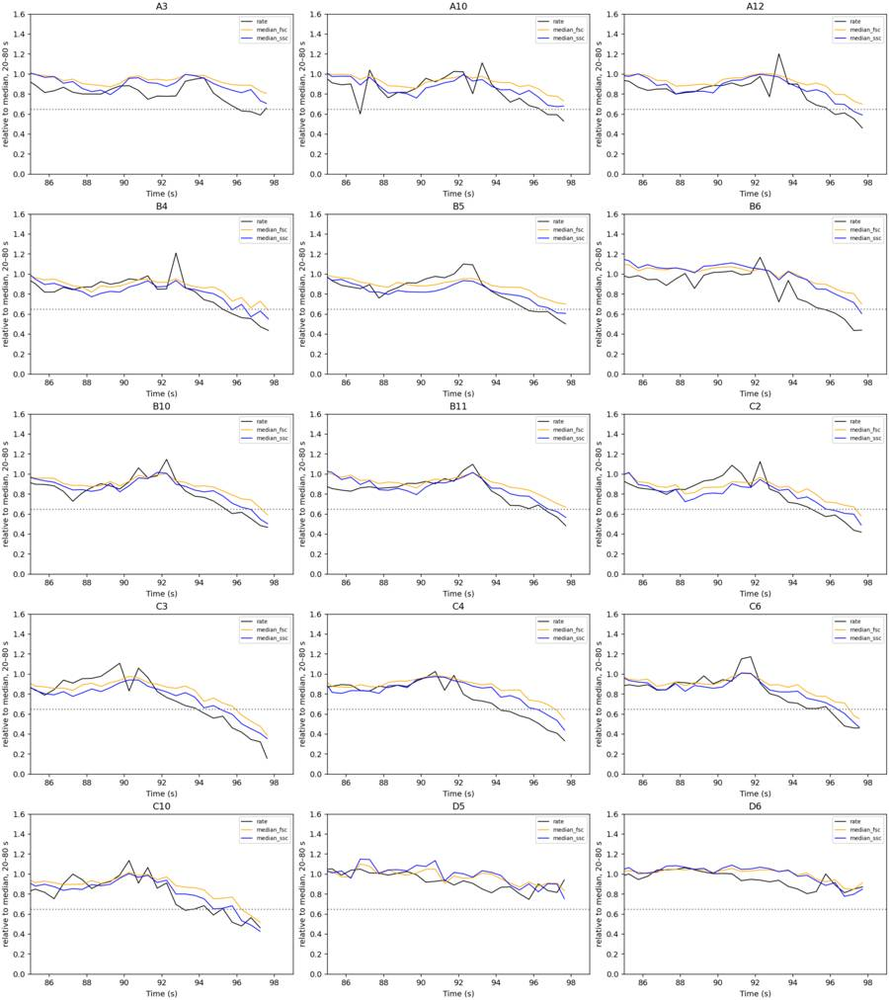
tool call · exec
text(await tools.exec_command({cmd:"tail -5 /task/outputs/work/analysis.log","max_output_tokens":1500}));
text(await tools.clock__curr_time({}));
tool output
Script completed
Wall time 0.0 seconds
Output:
{"chunk_id":"fa8c4a","wall_time_seconds":0.000005346,"exit_code":0,"original_token_count":123,"output":"C6 891011 {'Cells': 600123, 'Singlets': 462951, 'Live': 53981, 'GFP_pos': 197} rate 9292 end 6053\nC7 649735 {'Cells': 414476, 'Singlets': 334820, 'Live': 35068, 'GFP_pos': 142} rate 6685 end 6724\nC8 639518 {'Cells': 419092, 'Singlets': 341480, 'Live': 37471, 'GFP_pos': 451} rate 6630 end 6313\nC9 801299 {'Cells': 549990, 'Singlets': 424874, 'Live': 65679, 'GFP_pos': 342} rate 8260 end 7978\nC10 927162 {'Cells': 646060, 'Singlets': 489304, 'Live': 73785, 'GFP_pos': 316} rate 9772 end 5867\n"}
{"current_time":"2026-11-10 17:15:34 UTC"}tool call · exec
text(await tools.exec_command({cmd:"python - <<'PY'\nimport pandas as pd\nx=pd.read_csv('/task/outputs/counts.csv');g=x[x.population=='GFP_pos']\nprint(g.sort_values('pct_of_parent').head(12).to_string(index=False))\nPY","max_output_tokens":2200}));
text(await tools.exec_command({cmd:"tail -4 /task/outputs/work/analysis.log","max_output_tokens":1200}));
tool output
Script completed
Wall time 0.4 seconds
Output:
{"chunk_id":"2b528e","wall_time_seconds":0.168527244,"exit_code":0,"original_token_count":299,"output":" file well population count parent_population pct_of_parent\n Serotype panel_2_Rep2_Group_B1.fcs B1 GFP_pos 36 Live 0.055978\n Serotype panel_2_Rep2_Group_B2.fcs B2 GFP_pos 66 Live 0.109897\n Serotype panel_2_Rep2_Group_D3.fcs D3 GFP_pos 150 Live 0.175698\n Serotype panel_2_Rep2_Group_B6.fcs B6 GFP_pos 195 Live 0.182066\n Serotype panel_2_Rep2_Group_D1.fcs D1 GFP_pos 109 Live 0.196861\n Serotype panel_2_Rep2_Group_A9.fcs A9 GFP_pos 177 Live 0.210136\n Serotype panel_2_Rep2_Group_B4.fcs B4 GFP_pos 112 Live 0.218912\n Serotype panel_2_Rep2_Group_B5.fcs B5 GFP_pos 205 Live 0.233933\n Serotype panel_2_Rep2_Group_A1.fcs A1 GFP_pos 258 Live 0.269218\nSerotype panel_2_Rep2_Group_C12.fcs C12 GFP_pos 110 Live 0.294653\nSerotype panel_2_Rep2_Group_A10.fcs A10 GFP_pos 216 Live 0.306818\n Serotype panel_2_Rep2_Group_B7.fcs B7 GFP_pos 173 Live 0.321102\n"}
{"chunk_id":"6f71d6","wall_time_seconds":0.00000334,"exit_code":0,"original_token_count":99,"output":"C11 868685 {'Cells': 603776, 'Singlets': 464338, 'Live': 58043, 'GFP_pos': 196} rate 9021 end 7851\nC12 578214 {'Cells': 397658, 'Singlets': 330399, 'Live': 37332, 'GFP_pos': 110} rate 6024 end 5676\nD1 800840 {'Cells': 543984, 'Singlets': 426881, 'Live': 55369, 'GFP_pos': 109} rate 8270 end 7306\nD2 894591 {'Cells': 619005, 'Singlets': 478715, 'Live': 63167, 'GFP_pos': 292} rate 9264 end 7963\n"}tool call · exec
text(await tools.exec_command({cmd:"python - <<'PY'\nimport pandas as pd\nx=pd.read_csv('/task/outputs/qc/acquisition_traces.csv')\nfor w in ['B7','B8']:\n g=x[x.well==w];base=g[(g.start>=20)&(g.end<=80)].rate.median()\n print(w,'baseline',base)\n print(g[(g.rate<base*.3)|(g.rate>base*1.4)].to_string(index=False,float_format=lambda a:f'{a:.1f}'))\nPY","max_output_tokens":3500}));
text(await tools.exec_command({cmd:"tail -4 /task/outputs/work/analysis.log","max_output_tokens":1200}));
tool output
Script completed
Wall time 0.4 seconds
Output:
{"chunk_id":"650117","wall_time_seconds":0.158138437,"exit_code":0,"original_token_count":458,"output":"B7 baseline 10424.0\nwell start end count rate median_fsc median_ssc\n B7 0.0 0.5 215 442.4 36811.0 34966.0\n B7 0.5 1.0 97 194.0 32992.0 32509.0\n B7 1.0 1.5 434 868.0 123191.5 144993.5\n B7 1.5 2.0 1350 2700.0 113381.0 128967.0\n B7 2.0 2.5 1004 2008.0 94123.0 101721.5\n B7 2.5 3.0 778 1556.0 71573.0 72243.0\n B7 3.0 3.5 664 1328.0 59817.0 59992.5\n B7 3.5 4.0 1157 2314.0 84223.0 83223.0\n B7 14.5 15.0 7336 14672.0 113335.0 145712.5\n B7 29.5 30.0 8560 17120.0 119070.5 137738.5\n B7 30.0 30.5 8468 16936.0 113485.5 124004.5\n B7 30.5 31.0 9008 18016.0 107647.0 111204.0\n B7 31.0 31.5 8541 17082.0 101411.0 104596.0\n B7 31.5 32.0 7537 15074.0 93167.0 94972.0\n B7 61.5 62.0 280 560.0 40347.5 38442.0\n B7 62.5 63.0 8540 17080.0 119929.0 143568.5\nB8 baseline 9963.0\nwell start end count rate median_fsc median_ssc\n B8 0.0 0.5 472 969.2 41104.5 36493.0\n B8 0.5 1.0 174 348.0 32851.0 33819.0\n B8 1.0 1.5 66 132.0 33531.5 30975.5\n B8 1.5 2.0 26 52.0 33827.5 31149.0\n B8 2.0 2.5 18 36.0 27700.0 27839.5\n B8 2.5 3.0 16 32.0 27937.0 30876.0\n B8 3.0 3.5 36 72.0 47926.0 65652.5\n B8 8.5 9.0 7278 14556.0 94911.0 98043.5\n B8 9.0 9.5 7636 15272.0 94936.0 98753.5\n B8 9.5 10.0 7558 15116.0 98165.5 105448.0\n B8 10.0 10.5 7405 14810.0 102455.0 114612.0\n B8 10.5 11.0 7302 14604.0 104681.0 120933.0\n B8 11.0 11.5 7175 14350.0 108314.0 128453.0\n B8 11.5 12.0 7054 14108.0 107467.0 129244.5\n"}
{"chunk_id":"fa79a3","wall_time_seconds":0.000003981,"exit_code":0,"original_token_count":98,"output":"D3 915097 {'Cells': 627551, 'Singlets': 465828, 'Live': 85374, 'GFP_pos': 150} rate 9461 end 8541\nD4 925805 {'Cells': 650056, 'Singlets': 491665, 'Live': 71036, 'GFP_pos': 160} rate 9584 end 8422\nD5 153195 {'Cells': 101873, 'Singlets': 96172, 'Live': 5407, 'GFP_pos': 28} rate 1591 end 1351\nD6 726651 {'Cells': 497066, 'Singlets': 407921, 'Live': 29401, 'GFP_pos': 104} rate 7566 end 6642\n"}tool call · exec
text(await tools.exec_command({cmd:"python - <<'PY'\nimport sys\nsys.path.insert(0,'/task/outputs')\nfrom analyze_plate import *\ns=fk.Sample('/task/inputs/raw/Serotype panel_2_Rep2_Group_D5.fcs');r=build_strategy().gate_sample(s)\ne=s.get_events(source='raw');v=e[r.get_gate_membership('Singlets'),4]\nprint('D5 Live at cutoffs:',[(cut,int((v<cut).sum())) for cut in [200,250,300,350,400,500,1000,1500]])\nPY","max_output_tokens":1000}));
text(await tools.write_stdin({session_id:96185,chars:"",yield_time_ms:1000,max_output_tokens:1000}));
tool output
Script completed
Wall time 6.5 seconds
Output:
{"chunk_id":"832cb1","wall_time_seconds":1.328746724,"exit_code":0,"original_token_count":32,"output":"D5 Live at cutoffs: [(200, 1108), (250, 1415), (300, 1690), (350, 1945), (400, 2177), (500, 2643), (1000, 4288), (1500, 5407)]\n"}
{"chunk_id":"f526ce","wall_time_seconds":5.001220419,"session_id":96185,"original_token_count":0,"output":""}tool call · exec
text(await tools.exec_command({cmd:"python - <<'PY'\nimport flowio\nfor w in ['A1','A2','B7','B8','D5']:\n f=flowio.FlowData('/task/inputs/raw/Serotype panel_2_Rep2_Group_'+w+'.fcs',only_text=True)\n print(w,{k:f.text.get(k) for k in ['#flowrate','vol','#coincidentcount','btim','etim','wellid','date']})\nPY","max_output_tokens":1500}));
text(await tools.exec_command({cmd:"ls -lh /task/outputs/plots /task/outputs/qc","max_output_tokens":2000}));
tool output
Script completed
Wall time 0.1 seconds
Output:
{"chunk_id":"aefc90","wall_time_seconds":0.000004392,"exit_code":0,"original_token_count":187,"output":"A1 {'#flowrate': '200', 'vol': '155000', '#coincidentcount': '172519', 'btim': '09:28:23', 'etim': '09:29:09', 'wellid': 'A1', 'date': '06-Mar-2023'}\nA2 {'#flowrate': '100', 'vol': '164000', '#coincidentcount': '96386', 'btim': '09:29:39', 'etim': '09:31:17', 'wellid': 'A2', 'date': '06-Mar-2023'}\nB7 {'#flowrate': '100', 'vol': '164000', '#coincidentcount': '97979', 'btim': '10:05:38', 'etim': '10:07:17', 'wellid': 'B7', 'date': '06-Mar-2023'}\nB8 {'#flowrate': '100', 'vol': '163000', '#coincidentcount': '91516', 'btim': '10:07:46', 'etim': '10:09:24', 'wellid': 'B8', 'date': '06-Mar-2023'}\nD5 {'#flowrate': '100', 'vol': '163000', '#coincidentcount': '2293', 'btim': '10:52:13', 'etim': '10:53:52', 'wellid': 'D5', 'date': '06-Mar-2023'}\n"}
{"chunk_id":"80fb5e","wall_time_seconds":0.000003206,"exit_code":0,"original_token_count":269,"output":"/task/outputs/plots:\ntotal 11M\n-rw-r--r-- 1 root root 1014K Nov 10 17:14 acquisition_screen.png\n-rw-r--r-- 1 root root 2.3M Nov 10 17:16 cells_all_wells.png\n-rw-r--r-- 1 root root 1.3M Nov 10 17:16 cells_log_all_wells.png\n-rw-r--r-- 1 root root 628K Nov 10 17:16 gfp_all_wells.png\n-rw-r--r-- 1 root root 411K Nov 10 17:10 initial_A1.png\n-rw-r--r-- 1 root root 139K Nov 10 17:12 initial_A1_fluorescence.png\n-rw-r--r-- 1 root root 2.1M Nov 10 17:16 live_all_wells.png\n-rw-r--r-- 1 root root 531K Nov 10 17:13 representative_fluorescence_initial.png\n-rw-r--r-- 1 root root 1.7M Nov 10 17:16 singlets_all_wells.png\n-rw-r--r-- 1 root root 467K Nov 10 17:15 terminal_qc_review.png\n-rw-r--r-- 1 root root 511K Nov 10 17:14 threshold_review_300.png\n\n/task/outputs/qc:\ntotal 1.2M\n-rw-r--r-- 1 root root 5.2K Nov 10 17:14 acquisition_screen.csv\n-rw-r--r-- 1 root root 342K Nov 10 17:14 acquisition_traces.csv\n-rw-r--r-- 1 root root 18K Nov 10 17:16 metrics.csv\n-rw-r--r-- 1 root root 67K Nov 10 17:16 saturation.csv\n-rw-r--r-- 1 root root 780K Nov 10 17:16 time_bins.csv\n"}tool call · exec
const paths=["/task/outputs/plots/cells_all_wells.png","/task/outputs/plots/singlets_all_wells.png"];
for (const path of paths) image((await tools.view_image({path})).image_url);
tool output
Script completed Wall time 0.1 seconds Output:
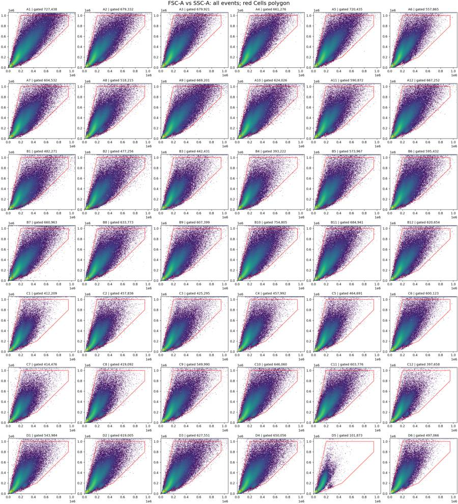
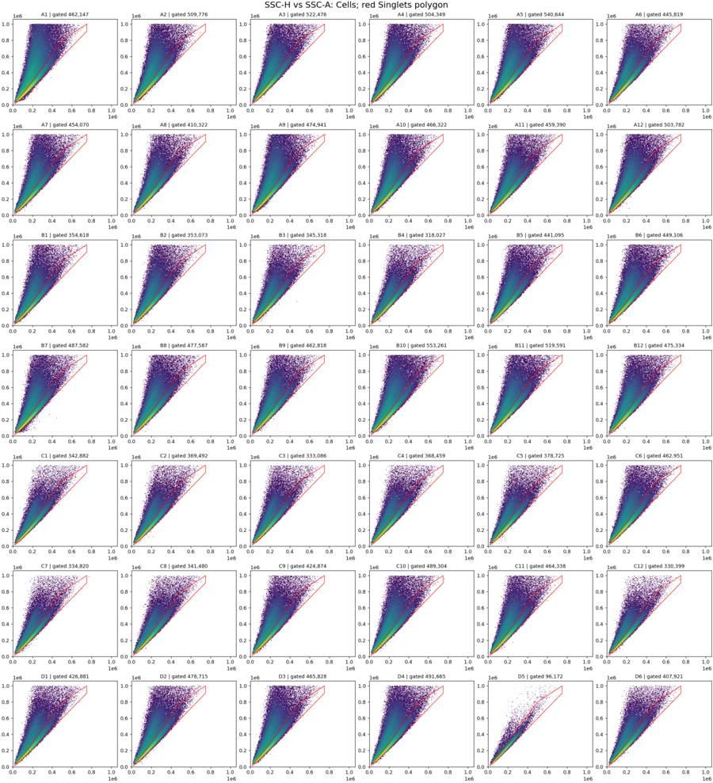
tool call · exec
text(await tools.exec_command({cmd:"python - <<'PY'\nimport sys\nsys.path.insert(0,'/task/outputs')\nfrom analyze_plate import *\nfrom scipy.signal import find_peaks\nm=(FLUOR_BINS[:-1]+FLUOR_BINS[1:])/2\nout=[]\nfor well in pd.read_csv('/task/inputs/plate_layout.csv').well:\n h=np.load(WORK/(well+'.npz'))['zombie_hist'];v=gaussian_filter1d(h.astype(float),2)\n peaks,_=find_peaks(v,prominence=v.max()*.002)\n low=[i for i in peaks if FLUOR.inverse(m[i:i+1])[0]<400]\n high=[i for i in peaks if FLUOR.inverse(m[i:i+1])[0]>2000]\n if low and high:\n a=low[0];b=max(high,key=lambda i:v[i]);k=a+np.argmin(v[a:b+1]);vals=FLUOR.inverse(m[[a,k,b]])\n out.append(dict(well=well,dim_mode=vals[0],valley=vals[1],bright_mode=vals[2],valley_to_dim_height=v[k]/v[a]))\n else:out.append(dict(well=well,dim_mode=np.nan,valley=np.nan,bright_mode=FLUOR.inverse(m[[max(peaks,key=lambda i:v[i])]])[0],valley_to_dim_height=np.nan))\ndf=pd.DataFrame(out);df.to_csv(QC/'zombie_valley_review.csv',index=False);print(df.round(2).to_string(index=False))\nPY","max_output_tokens":3000}));
text(await tools.write_stdin({session_id:96185,chars:"",yield_time_ms:1000,max_output_tokens:1000}));
tool output
Script completed
Wall time 1.5 seconds
Output:
{"chunk_id":"3683af","wall_time_seconds":1.301406978,"exit_code":0,"original_token_count":624,"output":"well dim_mode valley bright_mode valley_to_dim_height\n A1 NaN NaN 8833.86 NaN\n A2 37.31 452.15 8190.70 0.66\n A3 50.90 296.60 8833.86 0.77\n A4 37.31 296.60 10281.27 0.80\n A5 50.90 296.60 7315.39 0.71\n A6 37.31 280.81 9174.78 0.77\n A7 37.31 296.60 15655.47 0.74\n A8 105.72 328.94 13429.03 0.82\n A9 78.20 219.89 14498.64 0.91\n A10 78.20 345.53 11973.83 0.74\n A11 78.20 234.82 9897.93 0.88\n A12 119.60 190.54 7315.39 0.97\n B1 50.90 265.26 12924.85 0.71\n B2 50.90 379.65 16906.64 0.71\n B3 64.52 328.94 18259.89 0.76\n B4 133.56 362.43 15065.72 0.84\n B5 91.93 234.82 10281.27 0.96\n B6 78.20 161.80 8833.86 0.98\n B7 119.60 249.94 13429.03 0.96\n B8 105.72 219.89 12440.03 0.96\n B9 133.56 265.26 14498.64 0.92\n B10 NaN NaN 11525.54 NaN\n B11 176.11 234.82 10281.27 0.97\n B12 78.20 280.81 10281.27 0.91\n C1 119.60 397.21 17570.00 0.83\n C2 133.56 328.94 15655.47 0.88\n C3 78.20 345.53 16906.64 0.85\n C4 119.60 312.63 13429.03 0.88\n C5 91.93 249.94 11525.54 0.90\n C6 91.93 249.94 9174.78 0.91\n C7 119.60 328.94 16268.79 0.85\n C8 176.11 397.21 15065.72 0.86\n C9 161.80 312.63 12440.03 0.86\n C10 161.80 296.60 9897.93 0.90\n C11 105.72 312.63 9897.93 0.83\n C12 91.93 415.14 5630.32 0.67\n D1 91.93 234.82 12440.03 0.87\n D2 NaN NaN 11525.54 NaN\n D3 133.56 205.13 12440.03 0.98\n D4 119.60 249.94 11094.45 0.94\n D5 205.13 345.53 15655.47 0.92\n D6 NaN NaN 13953.36 NaN\n"}
{"chunk_id":"2de2c7","wall_time_seconds":0.000001543,"exit_code":0,"original_token_count":0,"output":""}34
agent
The Zombie NIR separation is shallow but falls around 300 raw units across the informative wells. I’ll use that as the shared Live cutoff. The weakest GFP samples support a GFP cutoff of 500 raw units. Both boundaries are sample-derived estimates; I’ll document the overlap and lack of controls in the notes.
tool call · exec
text(await tools.apply_patch("*** Begin Patch\n*** Update File: /task/outputs/analyze_plate.py\n@@\n-# Initial sample-based boundaries, reviewed against all wells before finalization.\n-LIVE_MAX = 1500.0\n-GFP_MIN = 1000.0\n+# Shared boundaries selected by inspection of the full-event plate plots.\n+# See notes.md and plots/live_boundary.png and plots/gfp_boundary.png.\n+LIVE_MAX = 300.0\n+GFP_MIN = 500.0\n@@\n- for i in range(len(h_time)):\n- tm = (t >= edges[i]) & (t < edges[i+1])\n- live_tm = tm & masks['Live']\n+ assert np.all(dt >= 0), 'Time must be monotonic for bin-slice QC'\n+ starts = np.searchsorted(t, edges[:-1])\n+ stops = np.searchsorted(t, edges[1:], side='left')\n+ stops[-1] = len(t)\n+ for i, (start, stop) in enumerate(zip(starts, stops)):\n+ live_in_bin = masks['Live'][start:stop]\n+ z_bin = zombie[start:stop][live_in_bin]\n+ g_bin = gfp[start:stop][live_in_bin]\n time_rows.append(dict(file=row.file, well=row.well,\n@@\n- median_FSC_A=float(np.median(fsc[tm])) if tm.any() else np.nan,\n- median_SSC_A=float(np.median(ssc[tm])) if tm.any() else np.nan,\n- median_RL3_A_live=float(np.median(zombie[live_tm])) if live_tm.any() else np.nan,\n- median_BL1_A_live=float(np.median(gfp[live_tm])) if live_tm.any() else np.nan))\n+ median_FSC_A=float(np.median(fsc[start:stop])) if stop>start else np.nan,\n+ median_SSC_A=float(np.median(ssc[start:stop])) if stop>start else np.nan,\n+ median_RL3_A_live=float(np.median(z_bin)) if len(z_bin) else np.nan,\n+ median_BL1_A_live=float(np.median(g_bin)) if len(g_bin) else np.nan))\n@@\n metadata_well=metadata.get('wellid', ''), date=metadata.get('date', ''),\n begin_time=metadata.get('btim', ''), end_time=metadata.get('etim', ''),\n+ flowrate_ul_per_min=metadata.get('#flowrate', ''),\n+ acquired_volume_nl=metadata.get('vol', ''),\n+ coincident_count=metadata.get('#coincidentcount', ''),\n@@\n assert metadata['wellid'] == row.well\n assert len(events) == int(metadata['tot'])\n+ assert metadata['date'] == '06-Mar-2023'\n+ expected_labels = {'BL1-A':'AAV-GFP-GFP-A', 'RL3-A':'LiveDead-Zombie NIR-A',\n+ 'VL1-A':'BV421-NCAM-A'}\n+ for ch, label in expected_labels.items():\n+ assert sample.channels.iloc[sample.get_channel_index(ch)].pns == label\n+ for ch, voltage in {'FSC-A':30,'SSC-A':300,'BL1-A':250,'RL3-A':300,'VL1-A':300}.items():\n+ assert float(metadata['p%dv' % sample.get_channel_number_by_label(ch)]) == voltage\n@@\n pd.DataFrame(saturation_rows).to_csv(QC / 'saturation.csv', index=False)\n+ with open(QC / 'gate_validation.json', 'w') as handle:\n+ json.dump(dict(flowkit_version='1.2.3', files=len(layout), count_rows=len(rows),\n+ xml_reloaded=True, all_event_memberships_match_before_after_xml=True,\n+ all_events_used=True, compensation='uncompensated',\n+ gates=POPULATIONS, parent_populations=PARENTS,\n+ live_raw_upper_exclusive=LIVE_MAX, gfp_raw_lower_inclusive=GFP_MIN,\n+ cells_vertices=CELL_VERTICES.tolist(), singlet_vertices=SINGLET_VERTICES.tolist(),\n+ display_logicle=dict(T=1048576, W=0.5, M=4.5, A=0)), handle, indent=2)\n make_sheets(layout, all_hist, pd.DataFrame(summaries).set_index('well'))\n*** End Patch"));
text(await tools.exec_command({cmd:"OPENBLAS_NUM_THREADS=1 python /task/outputs/analyze_plate.py > /task/outputs/work/analysis.log 2>&1",yield_time_ms:1000,max_output_tokens:1000}));
tool output
Script completed
Wall time 1.2 seconds
Output:
{}
{"chunk_id":"5df981","wall_time_seconds":1.001201416,"session_id":40012,"original_token_count":0,"output":""}tool call · exec
text(await tools.apply_patch("*** Begin Patch\n*** Add File: /task/outputs/finalize_reports.py\n+\"\"\"Apply the reviewed acquisition QC rules and validate deliverable schemas.\"\"\"\n+from pathlib import Path\n+import json\n+import numpy as np\n+import pandas as pd\n+import flowkit as fk\n+\n+OUT = Path('/task/outputs')\n+layout = pd.read_csv('/task/inputs/plate_layout.csv', keep_default_na=False)\n+counts = pd.read_csv(OUT / 'counts.csv')\n+metrics = pd.read_csv(OUT / 'qc/metrics.csv').set_index('well')\n+times = pd.read_csv(OUT / 'qc/time_bins.csv')\n+saturation = pd.read_csv(OUT / 'qc/saturation.csv')\n+assert len(counts) == 168 and len(metrics) == 42\n+\n+def runs(mask, starts, ends):\n+ starts_idx = np.flatnonzero(mask & ~np.r_[False, mask[:-1]])\n+ ends_idx = np.flatnonzero(mask & ~np.r_[mask[1:], False])\n+ return [(float(starts[a]),float(ends[b])) for a,b in zip(starts_idx,ends_idx)]\n+\n+rows, details = [], []\n+for item in layout.itertuples(index=False):\n+ w = item.well\n+ m = metrics.loc[w]\n+ g = times[times.well == w].copy()\n+ baseline = g[(g.start_s >= 20) & (g.end_s <= 80)]\n+ rate_base = float(baseline.events_per_s.median())\n+ fsc_base = float(baseline.median_FSC_A.median())\n+ ssc_base = float(baseline.median_SSC_A.median())\n+ # Five final bins, with exact durations so a partial last bin cannot look dry.\n+ tail = g.tail(5)\n+ tail_start = float(tail.start_s.iloc[0])\n+ tail_end = float(tail.end_s.iloc[-1])\n+ tail_rate = float(tail.events.sum() / (tail_end-tail_start))\n+ tail_fsc = float(tail.median_FSC_A.median())\n+ tail_ssc = float(tail.median_SSC_A.median())\n+ rr, fr, sr = tail_rate/rate_base, tail_fsc/fsc_base, tail_ssc/ssc_base\n+ dry = rr < .65 and fr < .85 and sr < .8\n+ low = g.events_per_s.to_numpy() < .2 * rate_base\n+ low_intervals = runs(low, g.start_s.to_numpy(), g.end_s.to_numpy())\n+ sustained_low = [(a,b) for a,b in low_intervals if b-a >= 1]\n+ interior_drop = g[(g.start_s > 10) & (g.end_s < m.time_last_s-5) &\n+ (g.events_per_s < .1*rate_base) &\n+ (g.median_FSC_A < .6*fsc_base)]\n+ clogged = bool(sustained_low or len(interior_drop))\n+ too_few = m.total < 10000 or m.Live < 1000\n+ sat_well = saturation[saturation.well == w]\n+ live_sat = sat_well[(sat_well.population == 'Live') &\n+ sat_well.channel.isin(['BL1-A','RL3-A'])].saturation_pct.max()\n+ scatter_sat = sat_well[(sat_well.population == 'all_events') &\n+ sat_well.channel.isin(['FSC-A','SSC-A'])].saturation_pct.max()\n+ saturated = live_sat >= 1 or scatter_sat >= 5\n+ unexpected = m.metadata_well != w or m.date != '06-Mar-2023' or not m.finite\n+ prefix = (f'total={int(m.total)}; Cells={int(m.Cells)}; Singlets={int(m.Singlets)}; '\n+ f'Live={int(m.Live)}; GFP_pos={int(m.GFP_pos)}; ')\n+ if unexpected:\n+ usable, reason, confidence = 'no','mislabeled_or_unexpected','high'\n+ evidence = prefix + f'metadata well={m.metadata_well}, date={m.date}, finite={m.finite}; '\n+ elif clogged:\n+ usable, reason, confidence = 'no','clog_or_interrupted_flow','high'\n+ intervals = ', '.join(f'{a:.1f}-{b:.1f} s' for a,b in sustained_low)\n+ idx_min = g.events_per_s.idxmin(); idx_max = g.events_per_s.idxmax()\n+ lo, hi = g.loc[idx_min], g.loc[idx_max]\n+ evidence = prefix + (f'baseline (20-80 s)={rate_base:.0f} events/s; '\n+ f'<20% baseline at {intervals}; minimum={lo.events_per_s:.0f}/s '\n+ f'at {lo.start_s:.1f}-{lo.end_s:.1f} s; '\n+ f'burst={hi.events_per_s:.0f}/s at {hi.start_s:.1f}-{hi.end_s:.1f} s; ')\n+ if len(interior_drop):\n+ q = interior_drop.iloc[0]\n+ evidence += (f'internal interruption {q.start_s:.1f}-{q.end_s:.1f} s: '\n+ f'{q.events_per_s:.0f}/s, median FSC-A={q.median_FSC_A:.0f} '\n+ f'(baseline {fsc_base:.0f}); ')\n+ if dry:\n+ evidence += (f'also terminal exhaustion pattern {tail_start:.1f}-{tail_end:.3f} s: '\n+ f'rate={rr*100:.1f}%, FSC={fr*100:.1f}%, SSC={sr*100:.1f}% of baseline; ')\n+ elif dry:\n+ usable, reason, confidence = 'no','ran_dry','medium'\n+ evidence = prefix + (f'terminal exhaustion pattern, {tail_start:.1f}-{tail_end:.3f} s: '\n+ f'rate={tail_rate:.0f}/s vs baseline {rate_base:.0f}/s ({rr*100:.1f}%); '\n+ f'median FSC-A={tail_fsc:.0f} vs {fsc_base:.0f} ({fr*100:.1f}%); '\n+ f'median SSC-A={tail_ssc:.0f} vs {ssc_base:.0f} ({sr*100:.1f}%); '\n+ 'coupled decline continues to acquisition end; ')\n+ elif too_few:\n+ usable, reason, confidence = 'no','too_few_events','high'\n+ evidence = prefix + 'below operational minimum of 10000 total or 1000 Live events; '\n+ elif saturated:\n+ usable, reason, confidence = 'no','saturation','medium'\n+ evidence = prefix + f'worst scatter maximum fraction={scatter_sat:.3f}%; Live fluorescence maximum fraction={live_sat:.3f}%; '\n+ else:\n+ usable, reason, confidence = 'yes','ok',None\n+ evidence = prefix + (f'Time={m.time_first_s:.3f}-{m.time_last_s:.3f} s; '\n+ f'0.5-s median rate={m.median_rate_per_s:.0f}/s, rate CV={m.rate_cv:.3f}; '\n+ f'last 5 s={m.last5_rate_per_s:.0f}/s; maximum gap={m.max_gap_s:.3f} s; '\n+ f'scatter at maximum <= {scatter_sat:.3f}%; Live fluorescence at maximum <= {live_sat:.3f}%')\n+ if w == 'D5':\n+ evidence += '; lower yield but stable flow and Live count exceeds 1000-event minimum'\n+ if w == 'A1':\n+ evidence += '; recorded flow=200 uL/min and volume=155 uL explain shorter acquisition (other wells: 100 uL/min)'\n+ if w == 'A3':\n+ evidence += (f'; terminal decline reviewed: rate={rr*100:.1f}%, FSC={fr*100:.1f}%, '\n+
… [3,141 more characters not shown]tool output
Script completed
Wall time 0.0 seconds
Output:
{}
{"chunk_id":"db21f4","wall_time_seconds":0.000004292,"exit_code":0,"original_token_count":123,"output":"B5 837561 {'Cells': 573967, 'Singlets': 441095, 'Live': 29953, 'GFP_pos': 266} rate 8761 end 6119\nB6 877336 {'Cells': 595432, 'Singlets': 449106, 'Live': 32675, 'GFP_pos': 303} rate 9087 end 6055\nB7 954909 {'Cells': 660963, 'Singlets': 487582, 'Live': 13943, 'GFP_pos': 237} rate 10295 end 8913\nB8 918778 {'Cells': 633773, 'Singlets': 477587, 'Live': 15561, 'GFP_pos': 369} rate 9902 end 6996\nB9 862070 {'Cells': 607399, 'Singlets': 462818, 'Live': 16085, 'GFP_pos': 348} rate 8911 end 8686\n"}tool call · exec
text(await tools.apply_patch("*** Begin Patch\n*** Add File: /task/outputs/boundary_plots.py\n+\"\"\"Detailed plots documenting the shared sample-derived fluorescence bounds.\"\"\"\n+import sys\n+sys.path.insert(0, '/task/outputs')\n+from analyze_plate import *\n+\n+strategy = fk.parse_gating_xml(str(OUT/'gates.xml'))\n+live_wells = ['A2','A3','B1','C12']\n+gfp_wells = ['B1','B2','D1','D3']\n+live_fig, live_axes = plt.subplots(2,4,figsize=(18,9),layout='constrained')\n+gfp_fig, gfp_axes = plt.subplots(2,4,figsize=(18,9),layout='constrained')\n+quantiles = []\n+for well in dict.fromkeys(live_wells+gfp_wells):\n+ s = fk.Sample('/task/inputs/raw/Serotype panel_2_Rep2_Group_'+well+'.fcs')\n+ e = s.get_events(source='raw',subsample=False)\n+ r = strategy.gate_sample(s)\n+ if well in live_wells:\n+ i = live_wells.index(well)\n+ m = r.get_gate_membership('Singlets')\n+ v = e[m,s.get_channel_index('RL3-A')]\n+ scatter = e[m,s.get_channel_index('SSC-A')]\n+ vt = FLUOR.apply(v)\n+ ax=live_axes[0,i]\n+ ax.hist2d(vt,scatter,bins=[FLUOR_BINS,SCATTER_BINS],norm=LogNorm(vmin=1))\n+ ax.axvline(FLUOR.apply(np.array([LIVE_MAX]))[0],color='red',lw=1.2)\n+ ax.set_xticks(FLUOR.apply(np.array([-500,0,300,1000,10000,100000.])),\n+ ['−500','0','300','1k','10k','100k'],rotation=45)\n+ ax.set(xlim=(FLUOR.apply(np.array([-600.]))[0],.8),ylim=(0,600000),\n+ xlabel='Zombie NIR / RL3-A (logicle; raw tick labels)',ylabel='SSC-A',\n+ title=f'{well}: {len(v):,} Singlets')\n+ ax=live_axes[1,i]\n+ h,_=np.histogram(vt,FLUOR_BINS)\n+ ax.plot((FLUOR_BINS[:-1]+FLUOR_BINS[1:])/2,gaussian_filter1d(h.astype(float),2),color='black')\n+ ax.axvline(FLUOR.apply(np.array([LIVE_MAX]))[0],color='red',lw=1.2,label='Live < 300')\n+ ax.set_xticks(FLUOR.apply(np.array([-300,0,300,1000,3000.])),['−300','0','300','1k','3k'])\n+ ax.set(xlim=tuple(FLUOR.apply(np.array([-500.,3000.]))),\n+ xlabel='RL3-A (logicle; raw tick labels)',ylabel='events per logicle bin',\n+ title=f'{well}: dim mode and shallow valley')\n+ # Zoom vertical scale to make the dim population and its valley legible.\n+ local=(FLUOR_BINS[:-1]>=FLUOR.apply(np.array([-300.]))[0]) & (FLUOR_BINS[1:]<=FLUOR.apply(np.array([500.]))[0])\n+ ax.set_ylim(0,max(h[local])*1.7)\n+ ax.legend(fontsize=8)\n+ if well in gfp_wells:\n+ i=gfp_wells.index(well)\n+ m=r.get_gate_membership('Live')\n+ v=e[m,s.get_channel_index('BL1-A')]\n+ scatter=e[m,s.get_channel_index('SSC-A')]\n+ ax=gfp_axes[0,i]\n+ ax.hist2d(FLUOR.apply(v),scatter,bins=[FLUOR_BINS,SCATTER_BINS],norm=LogNorm(vmin=1))\n+ ax.axvline(FLUOR.apply(np.array([GFP_MIN]))[0],color='red',lw=1.2)\n+ ax.set_xticks(FLUOR.apply(np.array([-300,0,500,1000,10000,100000.])),\n+ ['−300','0','500','1k','10k','100k'],rotation=45)\n+ ax.set(xlim=(FLUOR.apply(np.array([-500.]))[0],.8),ylim=(0,600000),\n+ xlabel='GFP / BL1-A (logicle; raw tick labels)',ylabel='SSC-A',\n+ title=f'{well}: {len(v):,} Live; GFP_pos={r.get_gate_count(\"GFP_pos\")}')\n+ ax=gfp_axes[1,i]\n+ h,bins=np.histogram(v,np.arange(-300,1505,5))\n+ ax.step((bins[:-1]+bins[1:])/2,h,where='mid',color='black',lw=.8)\n+ ax.axvline(GFP_MIN,color='red',lw=1.2,label='GFP_pos ≥ 500')\n+ ax.set(xlim=(-250,1200),yscale='log',ylim=(.7,max(h)*1.5),\n+ xlabel='BL1-A (raw units)',ylabel='events per 5 raw units',\n+ title=f'{well}: upper tail of GFP-dim population')\n+ ax.legend(fontsize=8)\n+ q=np.quantile(v,[.5,.95,.99,.995,.999])\n+ quantiles.append(dict(well=well,Live=len(v),GFP_pos=r.get_gate_count('GFP_pos'),\n+ median=q[0],q95=q[1],q99=q[2],q995=q[3],q999=q[4]))\n+live_fig.suptitle('Shared Live boundary: RL3-A < 300 raw units; all Singlets, no subsampling',fontsize=15)\n+gfp_fig.suptitle('Shared GFP_pos boundary: BL1-A ≥ 500 raw units; all Live cells, no subsampling',fontsize=15)\n+live_fig.savefig(PLOTS/'live_boundary.png',dpi=150)\n+gfp_fig.savefig(PLOTS/'gfp_boundary.png',dpi=150)\n+pd.DataFrame(quantiles).to_csv(QC/'gfp_boundary_reference_wells.csv',index=False)\n*** End Patch"));
text(await tools.exec_command({cmd:"OPENBLAS_NUM_THREADS=1 python /task/outputs/boundary_plots.py > /task/outputs/work/boundary_plots.log 2>&1",yield_time_ms:1000,max_output_tokens:1000}));
text(await tools.exec_command({cmd:"tail -4 /task/outputs/work/analysis.log","max_output_tokens":1000}));
tool output
Script completed
Wall time 1.2 seconds
Output:
{}
{"chunk_id":"d978fd","wall_time_seconds":1.001271525,"session_id":72781,"original_token_count":0,"output":""}
{"chunk_id":"c64d4b","wall_time_seconds":0.000003679,"exit_code":0,"original_token_count":54,"output":" File \"/task/outputs/analyze_plate.py\", line 119, in analyze\n assert np.all(dt >= 0), 'Time must be monotonic for bin-slice QC'\n ^^^^^^^^^^^^^^^\nAssertionError: Time must be monotonic for bin-slice QC\n"}tool call · exec
text(await tools.exec_command({cmd:"tail -12 /task/outputs/work/analysis.log && python - <<'PY'\nimport pandas as pd\nm=pd.read_csv('/task/outputs/qc/metrics.csv');print(m[m.time_nonmonotonic>0][['well','time_nonmonotonic','max_gap_s']].to_string(index=False))\nPY","max_output_tokens":2000}));
tool output
Script completed
Wall time 0.3 seconds
Output:
{"chunk_id":"281a75","wall_time_seconds":0.149242833,"exit_code":0,"original_token_count":239,"output":"C1 624718 {'Cells': 412209, 'Singlets': 342882, 'Live': 7181, 'GFP_pos': 164} rate 6439 end 6235\nC2 695572 {'Cells': 457836, 'Singlets': 369492, 'Live': 10491, 'GFP_pos': 271} rate 7299 end 4617\nC3 656321 {'Cells': 425295, 'Singlets': 333086, 'Live': 13072, 'GFP_pos': 160} rate 6946 end 3591\nC4 679504 {'Cells': 457992, 'Singlets': 368459, 'Live': 10719, 'GFP_pos': 192} rate 7182 end 4106\nC5 689593 {'Cells': 464691, 'Singlets': 378725, 'Live': 9886, 'GFP_pos': 200} rate 7130 end 6914\nTraceback (most recent call last):\n File \"/task/outputs/analyze_plate.py\", line 270, in <module>\n analyze()\n File \"/task/outputs/analyze_plate.py\", line 119, in analyze\n assert np.all(dt >= 0), 'Time must be monotonic for bin-slice QC'\n ^^^^^^^^^^^^^^^\nAssertionError: Time must be monotonic for bin-slice QC\nwell time_nonmonotonic max_gap_s\n C6 1 0.017\n C11 1 0.027\n D4 1 0.016\n"}tool call · exec
text(await tools.exec_command({cmd:"python - <<'PY'\nimport flowkit as fk,numpy as np\nfor w in ['C6','C11','D4']:\n s=fk.Sample('/task/inputs/raw/Serotype panel_2_Rep2_Group_'+w+'.fcs');e=s.get_events(source='raw');t=e[:,0];d=np.diff(t);ind=np.flatnonzero(d<0)\n for i in ind:\n print(w,'index',i,'time before/after',t[i],t[i+1],'delta',d[i], 'adjacent',t[i-5:i+7])\nPY","max_output_tokens":1500}));
text(await tools.clock__curr_time({}));
tool output
Script completed
Wall time 1.8 seconds
Output:
{"chunk_id":"15c1e8","wall_time_seconds":1.605183629,"exit_code":0,"original_token_count":115,"output":"C6 index 4442 time before/after 3.894 0.014 delta -3.8800000000000003 adjacent [3.894 3.894 3.894 3.894 3.894 3.894 0.014 0.014 0.014 0.014 0.014 0.014]\nC11 index 4102 time before/after 3.896 0.014 delta -3.882 adjacent [3.896 3.896 3.896 3.896 3.896 3.896 0.014 0.014 0.014 0.014 0.014 0.014]\nD4 index 4083 time before/after 3.8360000000000003 0.014 delta -3.8220000000000005 adjacent [3.835 3.836 3.836 3.836 3.836 3.836 0.014 0.014 0.014 0.014 0.015 0.015]\n"}
{"current_time":"2026-11-10 17:20:21 UTC"}tool call · exec
text(await tools.exec_command({cmd:"python - <<'PY'\nimport flowkit as fk,numpy as np\nfor w in ['C6','C11','D4']:\n s=fk.Sample('/task/inputs/raw/Serotype panel_2_Rep2_Group_'+w+'.fcs');e=s.get_events(source='raw');t=e[:,0];i=np.flatnonzero(np.diff(t)<0)[0]+1\n print(w,'first time',t[0],'prefixN',i,'prefix times',t[:10],'last',t[i-10:i], 'medianFSCprefix/post',np.median(e[:i,1]),np.median(e[i:i+50000,1]),'matchprefix',np.array_equal(e[:i,1:],e[i:i+i,1:]))\nPY","max_output_tokens":2000}));
tool output
Script completed
Wall time 1.8 seconds
Output:
{"chunk_id":"c52ca0","wall_time_seconds":1.605601202,"exit_code":0,"original_token_count":177,"output":"C6 first time 3.35 prefixN 4443 prefix times [3.35 3.35 3.35 3.35 3.35 3.35 3.35 3.35 3.351 3.351] last [3.894 3.894 3.894 3.894 3.894 3.894 3.894 3.894 3.894 3.894] medianFSCprefix/post 98137.0 102860.0 matchprefix False\nC11 first time 3.345 prefixN 4103 prefix times [3.345 3.345 3.346 3.346 3.346 3.346 3.346 3.346 3.346 3.346] last [3.895 3.895 3.895 3.895 3.896 3.896 3.896 3.896 3.896 3.896] medianFSCprefix/post 101429.0 106264.0 matchprefix False\nD4 first time 3.2920000000000003 prefixN 4084 prefix times [3.292 3.293 3.293 3.293 3.293 3.293 3.293 3.293 3.294 3.294] last [3.835 3.835 3.835 3.835 3.835 3.836 3.836 3.836 3.836 3.836] medianFSCprefix/post 102307.0 104963.5 matchprefix False\n"}40
agent
I found another QC issue: Time runs backward once in C6, C11, and D4, creating overlapping timestamps near the start. I’m accounting for that in the QC calculations so the overlap is not mistaken for a flow burst. All recorded events will still contribute to the gate counts.
tool call · exec
text(await tools.apply_patch("*** Begin Patch\n*** Update File: /task/outputs/analyze_plate.py\n@@\n- assert np.all(dt >= 0), 'Time must be monotonic for bin-slice QC'\n- starts = np.searchsorted(t, edges[:-1])\n- stops = np.searchsorted(t, edges[1:], side='left')\n- stops[-1] = len(t)\n- for i, (start, stop) in enumerate(zip(starts, stops)):\n- live_in_bin = masks['Live'][start:stop]\n- z_bin = zombie[start:stop][live_in_bin]\n- g_bin = gfp[start:stop][live_in_bin]\n+ monotonic = bool(np.all(dt >= 0))\n+ if monotonic:\n+ starts = np.searchsorted(t, edges[:-1])\n+ stops = np.searchsorted(t, edges[1:], side='left')\n+ stops[-1] = len(t)\n+ for i in range(len(h_time)):\n+ # A few files contain a timestamp rollback. Preserve acquisition order\n+ # and every event; select bins with masks rather than assuming sorting.\n+ selection = slice(starts[i],stops[i]) if monotonic else ((t>=edges[i]) & (t<edges[i+1]))\n+ live_in_bin = masks['Live'][selection]\n+ z_bin = zombie[selection][live_in_bin]\n+ g_bin = gfp[selection][live_in_bin]\n+ f_bin, s_bin = fsc[selection], ssc[selection]\n@@\n- median_FSC_A=float(np.median(fsc[start:stop])) if stop>start else np.nan,\n- median_SSC_A=float(np.median(ssc[start:stop])) if stop>start else np.nan,\n+ time_overlaps=not monotonic,\n+ median_FSC_A=float(np.median(f_bin)) if len(f_bin) else np.nan,\n+ median_SSC_A=float(np.median(s_bin)) if len(s_bin) else np.nan,\n@@\n time_nonmonotonic=int((dt < 0).sum()), max_gap_s=float(dt.max()),\n+ time_first_recorded_s=float(t[0]), time_min_step_s=float(dt.min()),\n+ time_resets=json.dumps([dict(after_event=int(i+1),before_s=float(t[i]),after_s=float(t[i+1]))\n+ for i in np.flatnonzero(dt<0)]),\n@@\n- ax.set_title(f'{well} | total {int(s.total):,}', fontsize=10)\n+ reset_note = ' | Time reset' if s.time_nonmonotonic else ''\n+ ax.set_title(f'{well} | total {int(s.total):,}{reset_note}', fontsize=9)\n@@\n- 'time':'Time (s) vs event rate (/s), 0.5-second bins (last bin may be partial)'}\n+ 'time':'Recorded Time (s) vs events/s, 0.5-s bins; reset files overlap early timestamps; final bin may be partial'}\n*** End Patch"));
text(await tools.apply_patch("*** Begin Patch\n*** Update File: /task/outputs/screen_acquisition.py\n@@\n- med_fsc = np.array([np.median(fsc[a:b]) if b>a else np.nan for a,b in zip(starts,stops)])\n- med_ssc = np.array([np.median(ssc[a:b]) if b>a else np.nan for a,b in zip(starts,stops)])\n+ dt = np.diff(t)\n+ if np.all(dt >= 0):\n+ med_fsc = np.array([np.median(fsc[a:b]) if b>a else np.nan for a,b in zip(starts,stops)])\n+ med_ssc = np.array([np.median(ssc[a:b]) if b>a else np.nan for a,b in zip(starts,stops)])\n+ else:\n+ selections = [(t>=a)&(t<b) for a,b in zip(edges[:-1],edges[1:])]\n+ med_fsc = np.array([np.median(fsc[m]) if m.any() else np.nan for m in selections])\n+ med_ssc = np.array([np.median(ssc[m]) if m.any() else np.nan for m in selections])\n@@\n- ax.set_title(f'{row.well} | N={len(t):,}; scatter max={sat:.2f}%',fontsize=9)\n+ reset_note = ' TIME RESET' if np.any(dt<0) else ''\n+ ax.set_title(f'{row.well}{reset_note} | N={len(t):,}; scatter max={sat:.2f}%',fontsize=8)\n@@\n- dt = np.diff(t)\n info = dict(well=row.well,total=len(t),end_s=t.max(),\n+ time_resets=int((dt<0).sum()),\n@@\n-fig.suptitle('Acquisition screen: all events/s (black, left); median FSC-A / 1000 (orange, right); Time in seconds',fontsize=15)\n+fig.suptitle('All events / recorded second (black); median FSC-A / 1000 (orange); Time resets overlap early timestamps',fontsize=15)\n*** End Patch"));
text(await tools.exec_command({cmd:"OPENBLAS_NUM_THREADS=1 python /task/outputs/analyze_plate.py > /task/outputs/work/analysis.log 2>&1",yield_time_ms:1000,max_output_tokens:1000}));
text(await tools.exec_command({cmd:"OPENBLAS_NUM_THREADS=1 python /task/outputs/screen_acquisition.py > /task/outputs/work/acquisition.log 2>&1",yield_time_ms:1000,max_output_tokens:1000}));
tool output
Script completed
Wall time 2.3 seconds
Output:
{}
{}
{"chunk_id":"7018a0","wall_time_seconds":1.000253153,"session_id":31985,"original_token_count":0,"output":""}
{"chunk_id":"516b3b","wall_time_seconds":1.001370561,"session_id":29930,"original_token_count":0,"output":""}tool call · exec
text(await tools.apply_patch("*** Begin Patch\n*** Update File: /task/outputs/finalize_reports.py\n@@\n elif dry:\n@@\n f'median SSC-A={tail_ssc:.0f} vs {ssc_base:.0f} ({sr*100:.1f}%); '\n 'coupled decline continues to acquisition end; ')\n+ if m.time_nonmonotonic:\n+ reset=json.loads(m.time_resets)[0]\n+ evidence += (f'also Time rollback after event {reset[\"after_event\"]}: '\n+ f'{reset[\"before_s\"]:.3f} to {reset[\"after_s\"]:.3f} s; ')\n+ elif m.time_nonmonotonic:\n+ usable, reason, confidence = 'no','other','medium'\n+ reset=json.loads(m.time_resets)[0]\n+ evidence = prefix + (f'non-monotonic recorded Time: after event {reset[\"after_event\"]}, '\n+ f'{reset[\"before_s\"]:.3f} to {reset[\"after_s\"]:.3f} s '\n+ f'(rollback {reset[\"before_s\"]-reset[\"after_s\"]:.3f} s); '\n+ f'{reset[\"after_event\"]} prefix events ({100*reset[\"after_event\"]/m.total:.3f}% of file) '\n+ 'overlap subsequent timestamps; possible acquisition restart/buffer artifact; '\n+ 'exclude conservatively because acquisition chronology is ambiguous, not because of the apparent overlapped-rate spike; ')\n@@\n terminal_exhaustion=dry,sustained_low_intervals=json.dumps(sustained_low),\n- internal_drop_bins=len(interior_drop),too_few_events=too_few,saturation=saturated))\n+ internal_drop_bins=len(interior_drop),time_resets=int(m.time_nonmonotonic),\n+ too_few_events=too_few,saturation=saturated))\n*** End Patch"));
text(await tools.write_stdin({session_id:72781,chars:"",yield_time_ms:1000,max_output_tokens:1000}));
image((await tools.view_image({path:"/task/outputs/plots/live_boundary.png"})).image_url);
image((await tools.view_image({path:"/task/outputs/plots/gfp_boundary.png"})).image_url);
tool output
Script completed Wall time 0.0 seconds Output:
{}{"chunk_id":"a3f21d","wall_time_seconds":0.000008827,"exit_code":0,"original_token_count":0,"output":""}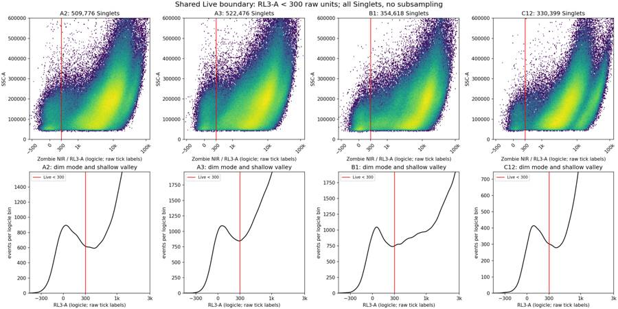
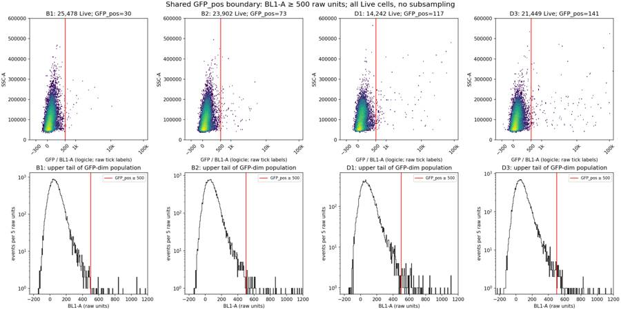
tool call · exec
text(await tools.apply_patch("*** Begin Patch\n*** Add File: /task/outputs/notes.md\n+## Gates\n+\n+FlowKit 1.2.3; one shared tree: **Cells → Singlets → Live → GFP_pos**. All recorded events were analyzed, including flagged wells. Every dimension uses its detector ID and `compensation_ref=\"uncompensated\"`. Gates use raw units; fluorescence displays use logicle (T=1,048,576, W=0.5, M=4.5, A=0). Exact polygon vertices are in `gates.xml` and `qc/gate_validation.json`.\n+\n+- **Cells:** FSC-A versus SSC-A polygon enclosing the main cloud, reviewed on all wells in `plots/cells_all_wells.png` and `cells_log_all_wells.png`. The lower boundary separates low-scatter debris (minimum FSC-A 60,000; minimum SSC-A 35,000); upper boundaries exclude the 1,048,575 scale pileups (FSC-A ≤950,000; SSC-A ≤1,000,000).\n+- **Singlets:** SSC-H versus SSC-A polygon following the narrow diagonal ridge within Cells, with increasing area/height slope at larger signals. The upper edge removes excessive area for height. Checked across all wells in `plots/singlets_all_wells.png`.\n+- **Live:** one-dimensional rectangle, **RL3-A <300**, without a lower bound. A2, A3, B1 and C12 set the broad, shallow dim/bright valley (`plots/live_boundary.png`); A5, A7 and B2 corroborated it. These informative valleys span approximately 265–452 raw units. All-well histograms and RL3-A/SSC-A plots checked consistency. Several wells have only a shoulder, so this is an operational boundary, not a sharply resolved valley everywhere.\n+- **GFP_pos:** one-dimensional rectangle, **BL1-A ≥500**, without an upper bound. B1/B2 have the fewest bright events; their Live GFP-negative cloud fades into a sparse tail around 350–500. D1/D3 provide cross-checks (`plots/gfp_boundary.png`); all wells were reviewed. There are no controls: neither fluorescence boundary has control-based specificity validation, and overlapping populations make marginal counts uncertain.\n+\n+## Quality control\n+\n+Checked all files for identity, labels, voltages, finite values, counts, timestamp order, 0.5-s event rates, scatter stability, and clipping. Numerical evidence is in `flags.csv`; supporting traces/plots are in `qc/` and `plots/`.\n+\n+Excluded **B7/B8** for near-zero flow and rebounds. Suspected terminal exhaustion excluded **A10, A12, B4–B6, B10–B11, C2–C4, C6, C10**: final five bins, corrected for partial-bin duration, have rate <65%, median FSC-A <85%, and median SSC-A <80% of their 20–80-s baselines, with continuing decline. Physical drying is inferred, hence medium confidence. **C11/D4** are conservative exclusions for timestamp rollback/ambiguous chronology; C6 also rolls back. Overlapping timestamps are not interpreted as true bursts.\n+\n+Operational yield minima were 10,000 total and 1,000 Live events; no well failed. D5 has 153,195 total/1,690 Live and stable flow. Rare GFP_pos counts alone do not imply failure. No material saturation or identity failure was found. A1's shorter run matches its recorded 200 µL/min flow (others: 100). Counts retain every event; no time cleanup was applied. Saved/reloaded XML memberships matched for all 42 files.\n+\n+## Deviations\n+\n+None.\n*** End Patch"));
text(await tools.exec_command({cmd:"tail -5 /task/outputs/work/analysis.log && tail -2 /task/outputs/work/acquisition.log && wc -w /task/outputs/notes.md","max_output_tokens":2000}));
tool output
Script completed
Wall time 0.1 seconds
Output:
{}
{"chunk_id":"09b90a","wall_time_seconds":0.000003585,"exit_code":0,"original_token_count":282,"output":"B2 728886 {'Cells': 477256, 'Singlets': 353073, 'Live': 23902, 'GFP_pos': 73} rate 7519 end 7257\nB3 667298 {'Cells': 442431, 'Singlets': 345318, 'Live': 16026, 'GFP_pos': 211} rate 6935 end 6316\nB4 598212 {'Cells': 393222, 'Singlets': 318027, 'Live': 19300, 'GFP_pos': 132} rate 6276 end 4141\nB5 837561 {'Cells': 573967, 'Singlets': 441095, 'Live': 29953, 'GFP_pos': 266} rate 8761 end 6119\nB6 877336 {'Cells': 595432, 'Singlets': 449106, 'Live': 32675, 'GFP_pos': 303} rate 9087 end 6055\nC4 {'well': 'C4', 'total': 679504, 'end_s': 97.801, 'time_resets': 0, 'median_rate': 7182.0, 'min_rate': 2948.0, 'max_rate': 7932.0, 'first5_rate': 6912.0, 'last5_rate': 4106.4, 'gap_s': 0.015000000000000568, 'gap_at_s': 55.083, 'rate_cv': 0.10765550449574984, 'scatter_sat_pct': 0.2002931550071817}\nC5 {'well': 'C5', 'total': 689593, 'end_s': 97.86200000000001, 'time_resets': 0, 'median_rate': 7130.0, 'min_rate': 5592.0, 'max_rate': 8416.0, 'first5_rate': 6344.2, 'last5_rate': 6914.2, 'gap_s': 0.044000000000004036, 'gap_at_s': 53.257, 'rate_cv': 0.05681725839295252, 'scatter_sat_pct': 0.18489166798386875}\n410 /task/outputs/notes.md\n"}tool call · exec
text(await tools.exec_command({cmd:"python - <<'PY'\nimport numpy as np,flowkit as fk,matplotlib\nmatplotlib.use('Agg')\nimport matplotlib.pyplot as plt\nfig,axs=plt.subplots(1,3,figsize=(16,5),layout='constrained')\nfor well,ax in zip(['C6','C11','D4'],axs):\n s=fk.Sample('/task/inputs/raw/Serotype panel_2_Rep2_Group_'+well+'.fcs');t=s.get_channel_events('Time',source='raw',subsample=False)\n ix=np.arange(1,len(t)+1);k=np.flatnonzero(np.diff(t)<0)[0]\n ax.plot(ix,t,lw=.8,c='black')\n ax.axvline(k+1,color='red',ls='--')\n ax.set(xlim=(0,18000),ylim=(0,4.5),xlabel='Event number in FCS acquisition order',ylabel='Recorded Time (s)',title=f'{well}: rollback after event {k+1:,}')\n ax.text(.05,.92,f'{t[k]:.3f} → {t[k+1]:.3f} s',transform=ax.transAxes,color='red')\nfig.suptitle('Timestamp rollback: every event plotted; axes zoomed to acquisition start',fontsize=14)\nfig.savefig('/task/outputs/plots/timestamp_rollbacks.png',dpi=150)\nPY","yield_time_ms":1000,"max_output_tokens":1000}));
text(await tools.exec_command({cmd:"tail -4 /task/outputs/work/analysis.log","max_output_tokens":1200}));
text(await tools.clock__curr_time({}));
tool output
Script completed
Wall time 1.2 seconds
Output:
{"chunk_id":"ad09bc","wall_time_seconds":1.001244397,"session_id":89634,"original_token_count":0,"output":""}
{"chunk_id":"b91dd7","wall_time_seconds":0.000004696,"exit_code":0,"original_token_count":98,"output":"C4 679504 {'Cells': 457992, 'Singlets': 368459, 'Live': 10719, 'GFP_pos': 192} rate 7182 end 4106\nC5 689593 {'Cells': 464691, 'Singlets': 378725, 'Live': 9886, 'GFP_pos': 200} rate 7130 end 6914\nC6 891011 {'Cells': 600123, 'Singlets': 462951, 'Live': 11775, 'GFP_pos': 222} rate 9292 end 6053\nC7 649735 {'Cells': 414476, 'Singlets': 334820, 'Live': 10303, 'GFP_pos': 189} rate 6685 end 6724\n"}
{"current_time":"2026-11-10 17:23:10 UTC"}44
agent
The final gates are running across all 42 files. QC supports 12 suspected terminal-exhaustion exclusions, B7/B8 for flow instability, and conservative exclusions of C11/D4 for ambiguous timestamp order. D5 retains 1,690 Live events and passes the yield minimum. I’m checking the final CSVs against the saved gates.
tool call · exec
const rs=await Promise.allSettled([
tools.exec_command({cmd:"tail -6 /task/outputs/work/analysis.log && ls -lh /task/outputs/qc/gate_validation.json /task/outputs/plots/timestamp_rollbacks.png",max_output_tokens:1500}),
tools.exec_command({cmd:"tail -2 /task/outputs/work/acquisition.log",max_output_tokens:1000})
]);rs.forEach(text);
image((await tools.view_image({path:"/task/outputs/plots/timestamp_rollbacks.png"})).image_url);
tool output
Script failed
Wall time 0.0 seconds
Output:
{"status":"fulfilled","value":{"chunk_id":"0857bc","wall_time_seconds":0.000002279,"exit_code":2,"original_token_count":189,"output":"D1 800840 {'Cells': 543984, 'Singlets': 426881, 'Live': 14242, 'GFP_pos': 117} rate 8270 end 7306\nD2 894591 {'Cells': 619005, 'Singlets': 478715, 'Live': 16874, 'GFP_pos': 261} rate 9264 end 7963\nD3 915097 {'Cells': 627551, 'Singlets': 465828, 'Live': 21449, 'GFP_pos': 141} rate 9461 end 8541\nD4 925805 {'Cells': 650056, 'Singlets': 491665, 'Live': 17877, 'GFP_pos': 157} rate 9584 end 8422\nD5 153195 {'Cells': 101873, 'Singlets': 96172, 'Live': 1690, 'GFP_pos': 26} rate 1591 end 1351\nD6 726651 {'Cells': 497066, 'Singlets': 407921, 'Live': 6811, 'GFP_pos': 101} rate 7566 end 6642\n-rw-r--r-- 1 root root 1.5K Nov 10 17:23 /task/outputs/qc/gate_validation.json\nls: cannot access '/task/outputs/plots/timestamp_rollbacks.png': No such file or directory\n"}}
{"status":"fulfilled","value":{"chunk_id":"93ef39","wall_time_seconds":0.000004008,"exit_code":0,"original_token_count":151,"output":"D5 {'well': 'D5', 'total': 153195, 'end_s': 97.768, 'time_resets': 0, 'median_rate': 1591.0, 'min_rate': 1154.0, 'max_rate': 1768.0, 'first5_rate': 1307.6, 'last5_rate': 1351.4, 'gap_s': 0.029000000000003467, 'gap_at_s': 61.82, 'rate_cv': 0.07143557640609151, 'scatter_sat_pct': 0.07572048696106269}\nD6 {'well': 'D6', 'total': 726651, 'end_s': 97.928, 'time_resets': 0, 'median_rate': 7566.0, 'min_rate': 6116.0, 'max_rate': 8426.0, 'first5_rate': 7033.2, 'last5_rate': 6642.0, 'gap_s': 0.014000000000002899, 'gap_at_s': 54.253, 'rate_cv': 0.05970436565913436, 'scatter_sat_pct': 0.19995843947094272}\n"}}
Script error:
unable to locate image at `/task/outputs/plots/timestamp_rollbacks.png`: No such file or directory (os error 2)tool call · exec
text(await tools.write_stdin({session_id:89634,chars:"",yield_time_ms:1000,max_output_tokens:2000}));
text(await tools.exec_command({cmd:"python /task/outputs/finalize_reports.py","yield_time_ms":1000,"max_output_tokens":3000}));
text(await tools.write_stdin({session_id:29930,chars:"",yield_time_ms:1000,max_output_tokens:1000}));
tool output
Script completed
Wall time 1.2 seconds
Output:
{"chunk_id":"72349b","wall_time_seconds":0.000003842,"exit_code":1,"original_token_count":97,"output":"Traceback (most recent call last):\n File \"<stdin>\", line 6, in <module>\n File \"/usr/local/lib/python3.12/site-packages/flowkit/_models/sample.py\", line 757, in get_channel_events\n events = events[:, channel_index]\n ~~~~~~^^^^^^^^^^^^^^^^^^\nIndexError: only integers, slices (`:`), ellipsis (`...`), numpy.newaxis (`None`) and integer or boolean arrays are valid indices\n"}
{"chunk_id":"17c337","wall_time_seconds":1.000619608,"session_id":64465,"original_token_count":478,"output":"/task/outputs/finalize_reports.py:145: UserWarning: This pattern is interpreted as a regular expression, and has match groups. To actually get the groups, use str.extract.\n assert flags[flags.usable == 'no'].evidence.str.contains(r'confidence: (high|medium|low)$',regex=True).all()\nwell usable reason_category\n A1 yes ok\n A2 yes ok\n A3 yes ok\n A4 yes ok\n A5 yes ok\n A6 yes ok\n A7 yes ok\n A8 yes ok\n A9 yes ok\n A10 no ran_dry\n A11 yes ok\n A12 no ran_dry\n B1 yes ok\n B2 yes ok\n B3 yes ok\n B4 no ran_dry\n B5 no ran_dry\n B6 no ran_dry\n B7 no clog_or_interrupted_flow\n B8 no clog_or_interrupted_flow\n B9 yes ok\n B10 no ran_dry\n B11 no ran_dry\n B12 yes ok\n C1 yes ok\n C2 no ran_dry\n C3 no ran_dry\n C4 no ran_dry\n C5 yes ok\n C6 no ran_dry\n C7 yes ok\n C8 yes ok\n C9 yes ok\n C10 no ran_dry\n C11 no other\n C12 yes ok\n D1 yes ok\n D2 yes ok\n D3 yes ok\n D4 no other\n D5 yes ok\n D6 yes ok\nTotal events: 33927506 ; usable: 26\n"}
{"chunk_id":"be2970","wall_time_seconds":0.000001842,"exit_code":0,"original_token_count":0,"output":""}tool call · exec
text(await tools.apply_patch("*** Begin Patch\n*** Update File: /task/outputs/finalize_reports.py\n@@\n-assert flags[flags.usable == 'no'].evidence.str.contains(r'confidence: (high|medium|low)$',regex=True).all()\n+assert flags[flags.usable == 'no'].evidence.str.contains(r'confidence: (?:high|medium|low)$',regex=True).all()\n*** Add File: /task/outputs/plot_timestamp_rollbacks.py\n+\"\"\"Display Time in original acquisition order; no events are removed.\"\"\"\n+import numpy as np\n+import flowkit as fk\n+import matplotlib\n+matplotlib.use('Agg')\n+import matplotlib.pyplot as plt\n+\n+fig, axs = plt.subplots(1,3,figsize=(16,5),layout='constrained')\n+for well, ax in zip(['C6','C11','D4'],axs):\n+ s=fk.Sample('/task/inputs/raw/Serotype panel_2_Rep2_Group_'+well+'.fcs')\n+ t=s.get_events(source='raw',subsample=False)[:,s.get_channel_index('Time')]\n+ ix=np.arange(1,len(t)+1)\n+ k=np.flatnonzero(np.diff(t)<0)[0]\n+ ax.plot(ix,t,lw=.8,c='black')\n+ ax.axvline(k+1,color='red',ls='--')\n+ ax.set(xlim=(0,18000),ylim=(0,4.5),xlabel='Event number in FCS acquisition order',\n+ ylabel='Recorded Time (s)',title=f'{well}: rollback after event {k+1:,}')\n+ ax.text(.05,.92,f'{t[k]:.3f} → {t[k+1]:.3f} s',transform=ax.transAxes,color='red')\n+fig.suptitle('Timestamp rollback: every event plotted; axes zoomed to acquisition start',fontsize=14)\n+fig.savefig('/task/outputs/plots/timestamp_rollbacks.png',dpi=150)\n*** End Patch"));
const r=await Promise.allSettled([
tools.exec_command({cmd:"python /task/outputs/plot_timestamp_rollbacks.py","yield_time_ms":1000,"max_output_tokens":1000}),
tools.exec_command({cmd:"cat /task/outputs/qc/deliverable_validation.json && tail -20 /task/outputs/gates.xml && ls -lh /task/outputs/counts.csv /task/outputs/flags.csv /task/outputs/notes.md","max_output_tokens":2500})
]);r.forEach(text);
tool output
Script completed
Wall time 1.2 seconds
Output:
{}
{"status":"fulfilled","value":{"chunk_id":"0f7434","wall_time_seconds":1.000146564,"session_id":36098,"original_token_count":0,"output":""}}
{"status":"fulfilled","value":{"chunk_id":"75f205","wall_time_seconds":0.000003782,"exit_code":0,"original_token_count":670,"output":"{\n \"files\": 42,\n \"counts_rows\": 168,\n \"flags_rows\": 42,\n \"total_events\": 33927506,\n \"usable_wells\": [\n \"A1\",\n \"A2\",\n \"A3\",\n \"A4\",\n \"A5\",\n \"A6\",\n \"A7\",\n \"A8\",\n \"A9\",\n \"A11\",\n \"B1\",\n \"B2\",\n \"B3\",\n \"B9\",\n \"B12\",\n \"C1\",\n \"C5\",\n \"C7\",\n \"C8\",\n \"C9\",\n \"C12\",\n \"D1\",\n \"D2\",\n \"D3\",\n \"D5\",\n \"D6\"\n ],\n \"excluded_wells\": [\n {\n \"well\": \"A10\",\n \"reason_category\": \"ran_dry\"\n },\n {\n \"well\": \"A12\",\n \"reason_category\": \"ran_dry\"\n },\n {\n \"well\": \"B4\",\n \"reason_category\": \"ran_dry\"\n },\n {\n \"well\": \"B5\",\n \"reason_category\": \"ran_dry\"\n },\n {\n \"well\": \"B6\",\n \"reason_category\": \"ran_dry\"\n },\n {\n \"well\": \"B7\",\n \"reason_category\": \"clog_or_interrupted_flow\"\n },\n {\n \"well\": \"B8\",\n \"reason_category\": \"clog_or_interrupted_flow\"\n },\n {\n \"well\": \"B10\",\n \"reason_category\": \"ran_dry\"\n },\n {\n \"well\": \"B11\",\n \"reason_category\": \"ran_dry\"\n },\n {\n \"well\": \"C2\",\n \"reason_category\": \"ran_dry\"\n },\n {\n \"well\": \"C3\",\n \"reason_category\": \"ran_dry\"\n },\n {\n \"well\": \"C4\",\n \"reason_category\": \"ran_dry\"\n },\n {\n \"well\": \"C6\",\n \"reason_category\": \"ran_dry\"\n },\n {\n \"well\": \"C10\",\n \"reason_category\": \"ran_dry\"\n },\n {\n \"well\": \"C11\",\n \"reason_category\": \"other\"\n },\n {\n \"well\": \"D4\",\n \"reason_category\": \"other\"\n }\n ],\n \"schema_checks_passed\": true,\n \"percentages_and_ancestry_checked\": true,\n \"xml_reload_passed\": true\n}\n <gating:vertex>\n <gating:coordinate data-type:value=\"50000.0\"/>\n <gating:coordinate data-type:value=\"65000.0\"/>\n </gating:vertex>\n <gating:vertex>\n <gating:coordinate data-type:value=\"20000.0\"/>\n <gating:coordinate data-type:value=\"26000.0\"/>\n </gating:vertex>\n </gating:PolygonGate>\n <gating:RectangleGate gating:id=\"Live\" gating:parent_id=\"Singlets\">\n <gating:dimension gating:compensation-ref=\"uncompensated\" gating:max=\"300.0\">\n <data-type:fcs-dimension data-type:name=\"RL3-A\"/>\n </gating:dimension>\n </gating:RectangleGate>\n <gating:RectangleGate gating:id=\"GFP_pos\" gating:parent_id=\"Live\">\n <gating:dimension gating:compensation-ref=\"uncompensated\" gating:min=\"500.0\">\n <data-type:fcs-dimension data-type:name=\"BL1-A\"/>\n </gating:dimension>\n </gating:RectangleGate>\n</gating:Gating-ML>\n-rw-r--r-- 1 root root 13K Nov 10 17:23 /task/outputs/counts.csv\n-rw-r--r-- 1 root root 14K Nov 10 17:24 /task/outputs/flags.csv\n-rw-r--r-- 1 root root 3.0K Nov 10 17:22 /task/outputs/notes.md\n"}}tool call · exec
text(await tools.write_stdin({session_id:31985,chars:"",yield_time_ms:1000,max_output_tokens:1000}));
text(await tools.exec_command({cmd:"ls -lh /task/outputs/plots/*all_wells.png && python - <<'PY'\nimport pandas as pd\nm=pd.read_csv('/task/outputs/qc/metrics.csv')\ns=pd.read_csv('/task/outputs/qc/saturation.csv')\nprint('Time resets:',m[m.time_nonmonotonic>0][['well','time_resets']].to_string(index=False))\nprint('All scatter saturation:',s[(s.population=='all_events')&s.channel.isin(['FSC-A','SSC-A'])].saturation_pct.max())\nprint('Live GFP/Zombie saturation:',s[(s.population=='Live')&s.channel.isin(['BL1-A','RL3-A'])].saturation_pct.max())\nprint('Live ranges:',m.Live.min(),m.Live.max())\nprint('GFP_pos ranges:',m.GFP_pos.min(),m.GFP_pos.max())\nPY","max_output_tokens":1800}));
for (const p of ["live_all_wells.png","gfp_all_wells.png","fluorescence_all_wells.png"]) {
image((await tools.view_image({path:"/task/outputs/plots/"+p})).image_url);
}
tool output
Script completed Wall time 0.5 seconds Output:
{"chunk_id":"b16c25","wall_time_seconds":0.000003773,"exit_code":0,"original_token_count":0,"output":""}{"chunk_id":"1338e8","wall_time_seconds":0.149691967,"exit_code":0,"original_token_count":261,"output":"-rw-r--r-- 1 root root 2.3M Nov 10 17:23 /task/outputs/plots/cells_all_wells.png\n-rw-r--r-- 1 root root 1.3M Nov 10 17:24 /task/outputs/plots/cells_log_all_wells.png\n-rw-r--r-- 1 root root 778K Nov 10 17:24 /task/outputs/plots/fluorescence_all_wells.png\n-rw-r--r-- 1 root root 486K Nov 10 17:24 /task/outputs/plots/gfp_all_wells.png\n-rw-r--r-- 1 root root 2.1M Nov 10 17:24 /task/outputs/plots/live_all_wells.png\n-rw-r--r-- 1 root root 1.7M Nov 10 17:24 /task/outputs/plots/singlets_all_wells.png\n-rw-r--r-- 1 root root 1.5M Nov 10 17:24 /task/outputs/plots/time_all_wells.png\nTime resets: well time_resets\n C6 [{\"after_event\": 4443, \"before_s\": 3.894, \"after_s\": 0.014}]\n C11 [{\"after_event\": 4103, \"before_s\": 3.896, \"after_s\": 0.014}]\n D4 [{\"after_event\": 4084, \"before_s\": 3.8360000000000003, \"after_s\": 0.014}]\nAll scatter saturation: 1.1735664527150602\nLive GFP/Zombie saturation: 0.0413829427034347\nLive ranges: 1690 33894\nGFP_pos ranges: 26 641\n"}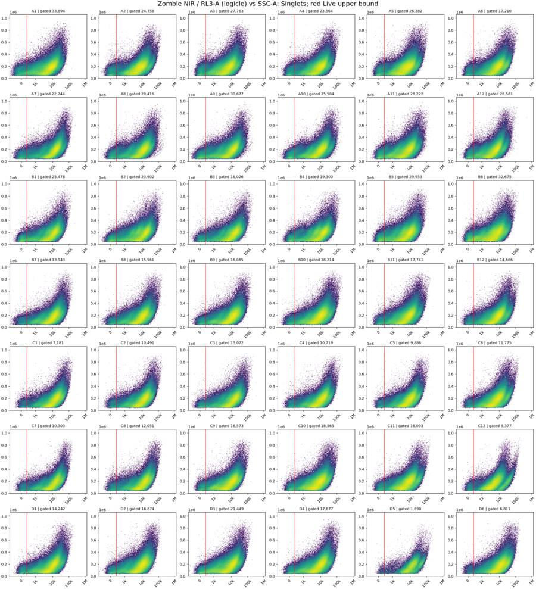
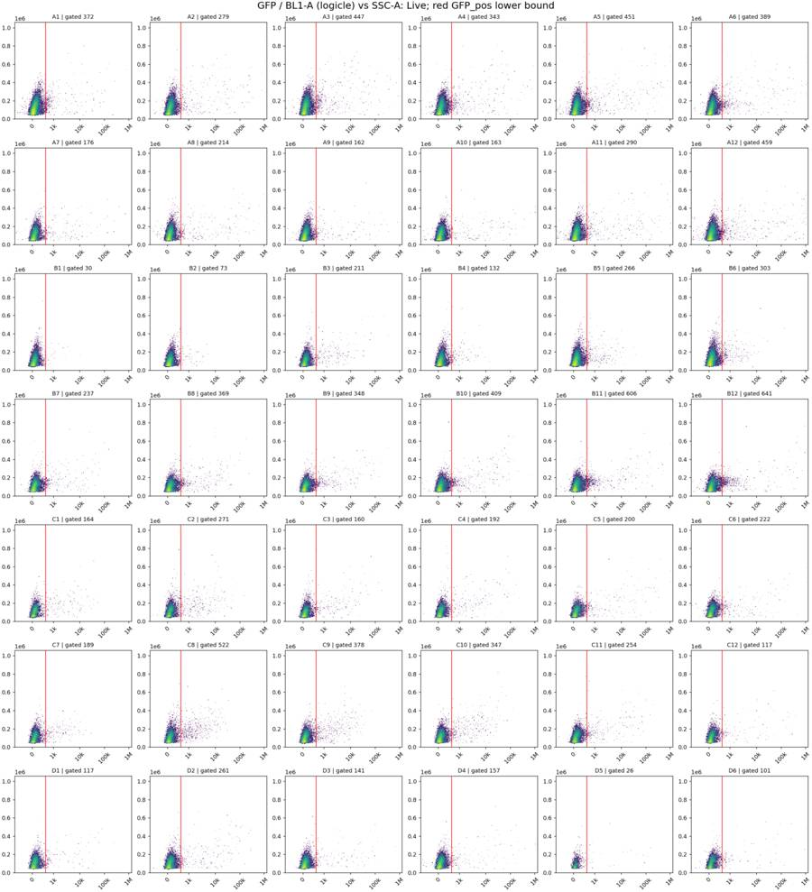
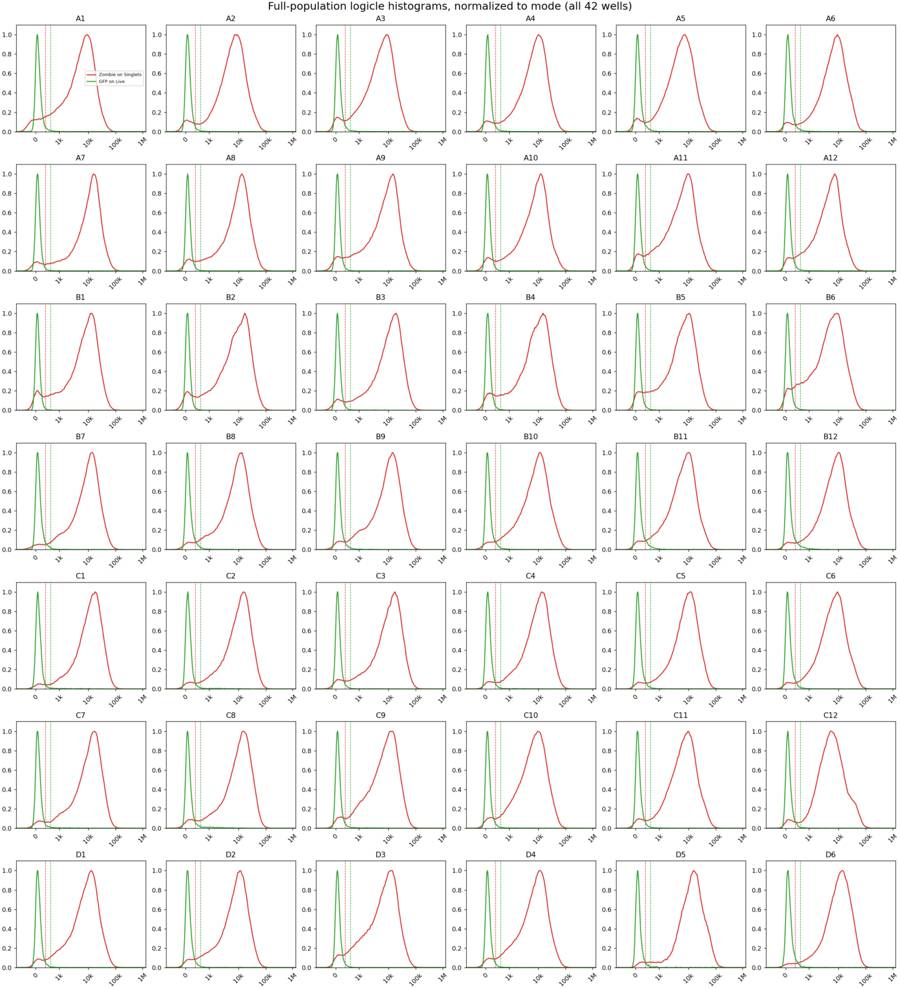
tool call · exec
const r=await Promise.allSettled([
tools.exec_command({cmd:"head -9 /task/outputs/counts.csv && tail -4 /task/outputs/counts.csv && python - <<'PY'\nimport pandas as pd\nf=pd.read_csv('/task/outputs/flags.csv')\nfor w in ['A1','A3','A10','B7','B8','C6','C11','D4','D5']:\n print(f.loc[f.well==w].iloc[0].to_dict())\nPY","max_output_tokens":4000}),
tools.exec_command({cmd:"python -m py_compile /task/outputs/analyze_plate.py /task/outputs/finalize_reports.py /task/outputs/boundary_plots.py /task/outputs/screen_acquisition.py /task/outputs/plot_timestamp_rollbacks.py","max_output_tokens":1000})
]);r.forEach(text);
text(await tools.write_stdin({session_id:36098,chars:"",yield_time_ms:1000,max_output_tokens:1000}));
image((await tools.view_image({path:"/task/outputs/plots/timestamp_rollbacks.png"})).image_url);
tool output
Script completed Wall time 0.3 seconds Output:
{"status":"fulfilled","value":{"chunk_id":"ea018f","wall_time_seconds":0.154827921,"exit_code":0,"original_token_count":1288,"output":"file,well,population,count,parent_population,pct_of_parent\nSerotype panel_2_Rep2_Group_A1.fcs,A1,Cells,727438,all_events,74.32498983372261\nSerotype panel_2_Rep2_Group_A1.fcs,A1,Singlets,462147,Cells,63.5307751313514\nSerotype panel_2_Rep2_Group_A1.fcs,A1,Live,33894,Singlets,7.334030081337756\nSerotype panel_2_Rep2_Group_A1.fcs,A1,GFP_pos,372,Live,1.0975393875022128\nSerotype panel_2_Rep2_Group_A2.fcs,A2,Cells,679332,all_events,72.60093170191097\nSerotype panel_2_Rep2_Group_A2.fcs,A2,Singlets,509776,Cells,75.04077534990255\nSerotype panel_2_Rep2_Group_A2.fcs,A2,Live,24758,Singlets,4.8566429176736445\nSerotype panel_2_Rep2_Group_A2.fcs,A2,GFP_pos,279,Live,1.1269084740285968\nSerotype panel_2_Rep2_Group_D6.fcs,D6,Cells,497066,all_events,68.40505276948632\nSerotype panel_2_Rep2_Group_D6.fcs,D6,Singlets,407921,Cells,82.06576189077506\nSerotype panel_2_Rep2_Group_D6.fcs,D6,Live,6811,Singlets,1.6696860421503184\nSerotype panel_2_Rep2_Group_D6.fcs,D6,GFP_pos,101,Live,1.4828953163999412\n{'file': 'Serotype panel_2_Rep2_Group_A1.fcs', 'well': 'A1', 'usable': 'yes', 'reason_category': 'ok', 'evidence': 'total=978726; Cells=727438; Singlets=462147; Live=33894; GFP_pos=372; Time=0.014-46.250 s; 0.5-s median rate=21514/s, rate CV=0.056; last 5 s=19179/s; maximum gap=0.006 s; scatter at maximum <= 1.174%; Live fluorescence at maximum <= 0.000%; recorded flow=200 uL/min and volume=155 uL explain shorter acquisition (other wells: 100 uL/min)'}\n{'file': 'Serotype panel_2_Rep2_Group_A3.fcs', 'well': 'A3', 'usable': 'yes', 'reason_category': 'ok', 'evidence': 'total=925910; Cells=679921; Singlets=522476; Live=27763; GFP_pos=447; Time=0.014-97.658 s; 0.5-s median rate=9715/s, rate CV=0.085; last 5 s=7542/s; maximum gap=0.033 s; scatter at maximum <= 0.467%; Live fluorescence at maximum <= 0.004%; terminal decline reviewed: rate=63.4%, FSC=88.8%, SSC=81.4% of baseline; does not meet coupled-collapse rule'}\n{'file': 'Serotype panel_2_Rep2_Group_A10.fcs', 'well': 'A10', 'usable': 'no', 'reason_category': 'ran_dry', 'evidence': 'total=870505; Cells=624026; Singlets=466322; Live=25504; GFP_pos=163; terminal exhaustion pattern, 95.5-97.699 s: rate=5658/s vs baseline 9063/s (62.4%); median FSC-A=94565 vs 120271 (78.6%); median SSC-A=95794 vs 139149 (68.8%); coupled decline continues to acquisition end; confidence: medium'}\n{'file': 'Serotype panel_2_Rep2_Group_B7.fcs', 'well': 'B7', 'usable': 'no', 'reason_category': 'clog_or_interrupted_flow', 'evidence': 'total=954909; Cells=660963; Singlets=487582; Live=13943; GFP_pos=237; baseline (20-80 s)=10424 events/s; <20% baseline at 0.0-1.5 s, 2.0-3.5 s; minimum=194/s at 0.5-1.0 s; burst=18016/s at 30.5-31.0 s; internal interruption 61.5-62.0 s: 560/s, median FSC-A=40348 (baseline 112542); confidence: high'}\n{'file': 'Serotype panel_2_Rep2_Group_B8.fcs', 'well': 'B8', 'usable': 'no', 'reason_category': 'clog_or_interrupted_flow', 'evidence': 'total=918778; Cells=633773; Singlets=477587; Live=15561; GFP_pos=369; baseline (20-80 s)=9963 events/s; <20% baseline at 0.0-3.5 s; minimum=32/s at 2.5-3.0 s; burst=15272/s at 9.0-9.5 s; also terminal exhaustion pattern 95.5-97.751 s: rate=59.0%, FSC=75.9%, SSC=66.9% of baseline; confidence: high'}\n{'file': 'Serotype panel_2_Rep2_Group_C6.fcs', 'well': 'C6', 'usable': 'no', 'reason_category': 'ran_dry', 'evidence': 'total=891011; Cells=600123; Singlets=462951; Live=11775; GFP_pos=222; terminal exhaustion pattern, 95.5-97.567 s: rate=5107/s vs baseline 9357/s (54.6%); median FSC-A=78750 vs 110622 (71.2%); median SSC-A=76856 vs 126855 (60.6%); coupled decline continues to acquisition end; also Time rollback after event 4443: 3.894 to 0.014 s; confidence: medium'}\n{'file': 'Serotype panel_2_Rep2_Group_C11.fcs', 'well': 'C11', 'usable': 'no', 'reason_category': 'other', 'evidence': 'total=868685; Cells=603776; Singlets=464338; Live=16093; GFP_pos=254; non-monotonic recorded Time: after event 4103, 3.896 to 0.014 s (rollback 3.882 s); 4103 prefix events (0.472% of file) overlap subsequent timestamps; possible acquisition restart/buffer artifact; exclude conservatively because acquisition chronology is ambiguous, not because of the apparent overlapped-rate spike; confidence: medium'}\n{'file': 'Serotype panel_2_Rep2_Group_D4.fcs', 'well': 'D4', 'usable': 'no', 'reason_category': 'other', 'evidence': 'total=925805; Cells=650056; Singlets=491665; Live=17877; GFP_pos=157; non-monotonic recorded Time: after event 4084, 3.836 to 0.014 s (rollback 3.822 s); 4084 prefix events (0.441% of file) overlap subsequent timestamps; possible acquisition restart/buffer artifact; exclude conservatively because acquisition chronology is ambiguous, not because of the apparent overlapped-rate spike; confidence: medium'}\n{'file': 'Serotype panel_2_Rep2_Group_D5.fcs', 'well': 'D5', 'usable': 'yes', 'reason_category': 'ok', 'evidence': 'total=153195; Cells=101873; Singlets=96172; Live=1690; GFP_pos=26; Time=0.015-97.768 s; 0.5-s median rate=1591/s, rate CV=0.071; last 5 s=1351/s; maximum gap=0.029 s; scatter at maximum <= 0.076%; Live fluorescence at maximum <= 0.000%; lower yield but stable flow and Live count exceeds 1000-event minimum'}\n"}}{"status":"fulfilled","value":{"chunk_id":"1af529","wall_time_seconds":0.000004986,"exit_code":0,"original_token_count":0,"output":""}}{"chunk_id":"95e2dd","wall_time_seconds":0.000001448,"exit_code":0,"original_token_count":0,"output":""}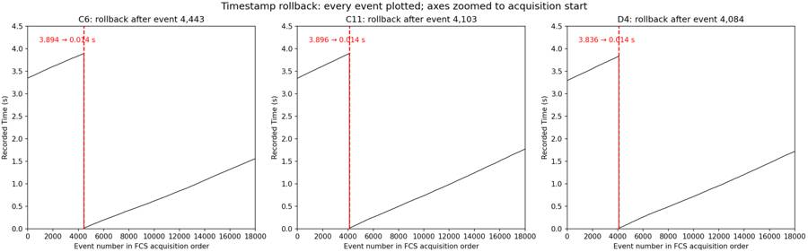
tool call · exec
text(await tools.apply_patch("*** Begin Patch\n*** Update File: /task/outputs/analyze_plate.py\n@@\n-def make_sheets(layout=None, all_hist=None, summaries=None):\n+def make_sheets(layout=None, all_hist=None, summaries=None, kinds=None):\n@@\n- for kind in ['cells', 'cells_log', 'singlets', 'live', 'gfp', 'fluorescence', 'time']:\n+ if kinds is None:\n+ kinds = ['cells', 'cells_log', 'singlets', 'live', 'gfp', 'fluorescence', 'time']\n+ for kind in kinds:\n@@\n else:\n mids=(h['time_edges'][:-1]+h['time_edges'][1:])/2\n+ widths = np.minimum(h['time_edges'][1:],s.time_last_s)-np.maximum(h['time_edges'][:-1],s.time_first_s)\n for key,color,label in [('time_counts','gray','All'),('time_cells','tab:blue','Cells'),('time_live','tab:green','Live')]:\n- ax.plot(mids,h[key]/.5,color=color,label=label,linewidth=.9)\n+ ax.plot(mids,h[key]/np.maximum(widths,1e-9),color=color,label=label,linewidth=.9)\n@@\n- 'time':'Recorded Time (s) vs events/s, 0.5-s bins; reset files overlap early timestamps; final bin may be partial'}\n+ 'time':'Recorded Time (s) vs events/s; 0.5-s bins with partial bins corrected; reset files overlap early timestamps'}\n*** End Patch"));
text(await tools.apply_patch("*** Begin Patch\n*** Update File: /task/outputs/finalize_reports.py\n@@\n- 'exclude conservatively because acquisition chronology is ambiguous, not because of the apparent overlapped-rate spike; ')\n+ 'exclude conservatively because acquisition chronology is ambiguous; timestamp overlap explains the apparent rate spike; ')\n@@\n- f'SSC={sr*100:.1f}% of baseline; does not meet coupled-collapse rule')\n+ f'SSC={sr*100:.1f}% of baseline; below the severity required by the joint rate/scatter exclusion criterion')\n*** End Patch"));
text(await tools.apply_patch("*** Begin Patch\n*** Update File: /task/outputs/notes.md\n@@\n-Operational yield minima were 10,000 total and 1,000 Live events; no well failed. D5 has 153,195 total/1,690 Live and stable flow. Rare GFP_pos counts alone do not imply failure. No material saturation or identity failure was found. A1's shorter run matches its recorded 200 µL/min flow (others: 100). Counts retain every event; no time cleanup was applied. Saved/reloaded XML memberships matched for all 42 files.\n+Operational yield minima were 10,000 total and 1,000 Live events; no well failed. D5 has 153,195 total/1,690 Live and stable flow. Rare GFP_pos counts alone do not imply failure. Saturation review limits (5% of all events at scatter maximum; 1% of Live at GFP/Zombie maximum) were not crossed; identities matched. A1's shorter run matches its recorded 200 µL/min flow (others: 100). Counts retain every event; no time cleanup was applied. Saved/reloaded XML memberships matched for all 42 files.\n*** End Patch"));
text(await tools.exec_command({cmd:"python /task/outputs/finalize_reports.py > /task/outputs/qc/validation.log && python - <<'PY'\nimport sys\nsys.path.insert(0,'/task/outputs')\nfrom analyze_plate import make_sheets\nmake_sheets(kinds=['time'])\nPY","yield_time_ms":1000,"max_output_tokens":1000}));
text(await tools.exec_command({cmd:"rm -f /task/outputs/plots/initial_A1.png /task/outputs/plots/initial_A1_fluorescence.png /task/outputs/plots/representative_fluorescence_initial.png /task/outputs/plots/threshold_review_300.png","max_output_tokens":1000}));
tool output
Script failed
Wall time 1.2 seconds
Output:
{}
{}
{}
{"chunk_id":"ace70d","wall_time_seconds":1.000167127,"session_id":25088,"original_token_count":0,"output":""}
Script error:
exec_command failed: CreateProcess { message: "Rejected(\"`/bin/bash -lc 'rm -f /task/outputs/plots/initial_A1.png /task/outputs/plots/initial_A1_fluorescence.png /task/outputs/plots/representative_fluorescence_initial.png /task/outputs/plots/threshold_review_300.png'` rejected: rm -f style commands are not permitted. Use a safer approach\")" }tool call · exec
text(await tools.exec_command({cmd:"mkdir -p /task/outputs/work/exploration && mv /task/outputs/plots/initial_A1.png /task/outputs/plots/initial_A1_fluorescence.png /task/outputs/plots/representative_fluorescence_initial.png /task/outputs/plots/threshold_review_300.png /task/outputs/work/exploration/","max_output_tokens":1000}));
text(await tools.write_stdin({session_id:25088,chars:"",yield_time_ms:1000,max_output_tokens:1000}));
text(await tools.exec_command({cmd:"python - <<'PY'\nfrom pathlib import Path\nimport pandas as pd\np=Path('/task/outputs')\n(p/'work/exploration/README.txt').write_text('Exploratory plots made before final gate selection. Final gates and plots are in gates.xml and plots/.\\n')\nc=pd.read_csv(p/'counts.csv');f=pd.read_csv(p/'flags.csv')\nassert c.shape==(168,6) and f.shape==(42,5)\nassert c['pct_of_parent'].between(0,100).all()\nassert (f.usable=='no').sum()==16\nassert (p/'notes.md').read_text().count('## ')==3\nassert len(list((p/'plots').glob('*.png')))==12\nprint('Final files verified: 168 counts; 42 flags; 16 excluded; 26 usable; 12 final PNGs.')\nprint('Notes words:',len((p/'notes.md').read_text().split()))\nPY","max_output_tokens":1000}));
image((await tools.view_image({path:"/task/outputs/plots/time_all_wells.png"})).image_url);
tool output
Script completed Wall time 0.4 seconds Output:
{"chunk_id":"64af01","wall_time_seconds":0.0000039,"exit_code":0,"original_token_count":0,"output":""}{"chunk_id":"9b8fe0","wall_time_seconds":0.000001107,"exit_code":0,"original_token_count":0,"output":""}{"chunk_id":"98af51","wall_time_seconds":0.148324532,"exit_code":0,"original_token_count":25,"output":"Final files verified: 168 counts; 42 flags; 16 excluded; 26 usable; 12 final PNGs.\nNotes words: 423\n"}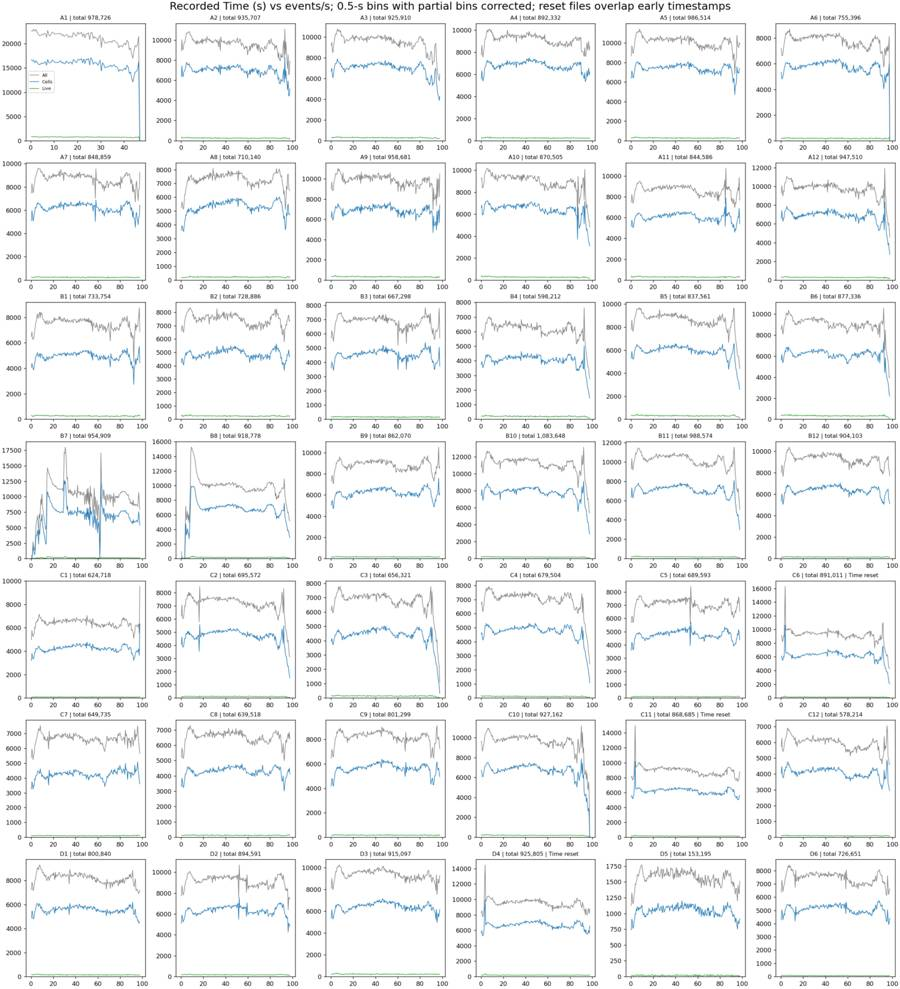
tool call · exec
text(await tools.apply_patch("*** Begin Patch\n*** Update File: /task/outputs/analyze_plate.py\n@@\n- edges = np.arange(0, np.ceil(t.max()) + 0.5, 0.5)\n+ edges = np.arange(0, np.ceil(t.max()*2)/2 + 0.25, 0.5)\n*** End Patch"));
text(await tools.exec_command({cmd:"python - <<'PY'\nfrom pathlib import Path\nimport numpy as np,pandas as pd,sys\nout=Path('/task/outputs')\nt=pd.read_csv(out/'qc/time_bins.csv')\nbad=t.end_s<=t.start_s\nassert (t.loc[bad,'events']==0).all()\nprint('Removing empty bins after acquisition end:',t.loc[bad,['well','start_s','end_s']].to_dict('records'))\nt=t.loc[~bad].copy();t.to_csv(out/'qc/time_bins.csv',index=False)\nm=pd.read_csv(out/'qc/metrics.csv').set_index('well')\nfor w,row in m.iterrows():\n p=out/'work'/(w+'.npz');h=dict(np.load(p));n=int(np.sum(h['time_edges'][:-1]<row.time_last_s))\n if n<len(h['time_counts']):\n for key in ['time_counts','time_cells','time_live']:\n assert h[key][n:].sum()==0\n h[key]=h[key][:n]\n h['time_edges']=h['time_edges'][:n+1]\n np.savez_compressed(p,**h)\n assert t[t.well==w].events.sum()==row.total\nassert (t.end_s>t.start_s).all()\nsys.path.insert(0,str(out))\nfrom analyze_plate import make_sheets\nmake_sheets(kinds=['time'])\nPY\npython /task/outputs/finalize_reports.py > /task/outputs/qc/validation.log","yield_time_ms":1000,"max_output_tokens":1500}));
tool output
Script completed
Wall time 1.2 seconds
Output:
{}
{"chunk_id":"1b4801","wall_time_seconds":1.001471343,"session_id":28619,"original_token_count":0,"output":""}tool call · exec
text(await tools.write_stdin({session_id:28619,chars:"",yield_time_ms:1000,max_output_tokens:1500}));
const rs=await Promise.allSettled([
tools.exec_command({cmd:"python - <<'PY'\nimport pandas as pd,json\nfrom pathlib import Path\np=Path('/task/outputs');c=pd.read_csv(p/'counts.csv');f=pd.read_csv(p/'flags.csv');t=pd.read_csv(p/'qc/time_bins.csv')\nassert len(c)==168 and len(f)==42\nassert (f.usable=='no').sum()==16\nassert (t.end_s>t.start_s).all()\nassert t.events.sum()==33927506\nprint(f.groupby(['usable','reason_category']).size().to_string())\nprint('Time-bin event sum:',t.events.sum())\nprint('C10 evidence:',f.loc[f.well=='C10','evidence'].iloc[0])\nprint('All deliverables ready.')\nPY","max_output_tokens":1500}),
tools.exec_command({cmd:"ls -lh /task/outputs/counts.csv /task/outputs/flags.csv /task/outputs/notes.md /task/outputs/gates.xml","max_output_tokens":1000})
]);rs.forEach(text);
image((await tools.view_image({path:"/task/outputs/plots/cells_log_all_wells.png"})).image_url);
tool output
Script completed Wall time 0.4 seconds Output:
{"chunk_id":"1519f3","wall_time_seconds":0.00000263,"exit_code":0,"original_token_count":49,"output":"Removing empty bins after acquisition end: [{'well': 'A1', 'start_s': 46.5, 'end_s': 46.25}, {'well': 'A6', 'start_s': 97.5, 'end_s': 97.106}, {'well': 'C10', 'start_s': 97.5, 'end_s': 97.483}]\n"}{"status":"fulfilled","value":{"chunk_id":"8bfa86","wall_time_seconds":0.157144306,"exit_code":0,"original_token_count":138,"output":"usable reason_category \nno clog_or_interrupted_flow 2\n other 2\n ran_dry 12\nyes ok 26\nTime-bin event sum: 33927506\nC10 evidence: total=927162; Cells=646060; Singlets=489304; Live=18565; GFP_pos=347; terminal exhaustion pattern, 95.0-97.483 s: rate=5290/s vs baseline 9852/s (53.7%); median FSC-A=73714 vs 114016 (64.7%); median SSC-A=70990 vs 132863 (53.4%); coupled decline continues to acquisition end; confidence: medium\nAll deliverables ready.\n"}}{"status":"fulfilled","value":{"chunk_id":"a51231","wall_time_seconds":0.000003364,"exit_code":0,"original_token_count":65,"output":"-rw-r--r-- 1 root root 13K Nov 10 17:23 /task/outputs/counts.csv\n-rw-r--r-- 1 root root 14K Nov 10 17:26 /task/outputs/flags.csv\n-rw-r--r-- 1 root root 4.5K Nov 10 17:21 /task/outputs/gates.xml\n-rw-r--r-- 1 root root 3.1K Nov 10 17:25 /task/outputs/notes.md\n"}}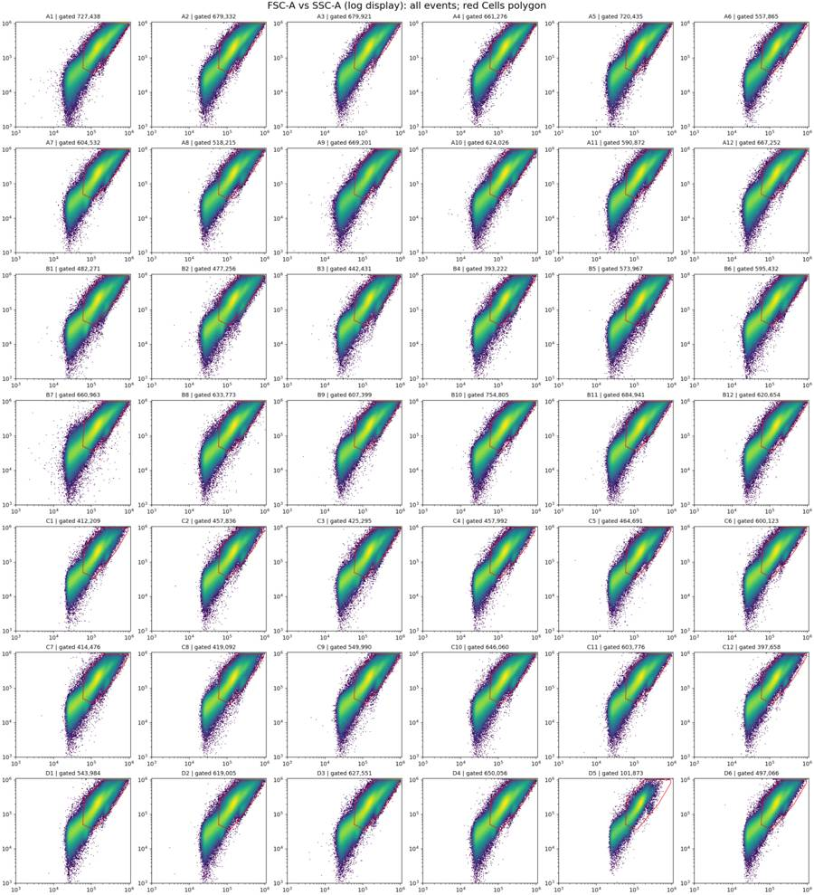
53
agent
Completed all 42 wells: **168 population counts**, with **26 usable wells and 16 flagged for exclusion**. Saved gates were reloaded and verified against every file.
- [counts.csv](/task/outputs/counts.csv)
- [flags.csv](/task/outputs/flags.csv)
- [notes.md](/task/outputs/notes.md)
- [gates.xml](/task/outputs/gates.xml)
Notes document gate placement, QC criteria, and uncertainty from the absence of controls.